오늘의 arXiv Top 15
2026-10-30 (금) ·
cs.CV / cs.LG / cs.RO / cs.CL / cs.AI New submissions 전수 평가
cross-list · replacement 제외, 중복 병합 · Top 15은 원문까지 읽고 정리
소급 작성: 자동 실행이 멈췄던 날이라 2026-11-12에 소급 작성함. 이 날 arXiv 공지 목록은 이미 내려가서, 논문 목록을 arXiv API의 첫 제출 시각(마감 14:00 ET 기준)으로 다시 만들었음. 실제 공지 목록과 일부 다를 수 있음(최근 공지 3일로 대조하면 실제 목록의 84~97%가 들어감).
509
신규 논문
141
cs.CV
141
cs.LG
74
cs.RO
57
cs.CL
96
cs.AI
15
정밀 리뷰
1차 스크리닝 509편 (Claude (scheduled agent)) → Top 15 PDF 정밀 리뷰 (Claude (scheduled agent))
분야별 필터
전체 15개 논문 표시 중
1
76점
Cross-Controller Transfer via In-Context Behavior Adaptation
Manipulation
relevance 10/10
ICRA·IROS·RA-L 계열 양식 (추정)
Robotics (cs.RO)
같은 action 값이 controller마다 다른 움직임을 낳는 데이터를 한 VLA로 배우게 하려고, 배치할 controller에서 찍은 '명령한 action과 실제 움직임' 기록을 context로 넣음. 학습에 없던 controller 종류 6개에서 평균 성공률이 단순 데이터 합치기의 17.5%에서 50.3%로 오름.
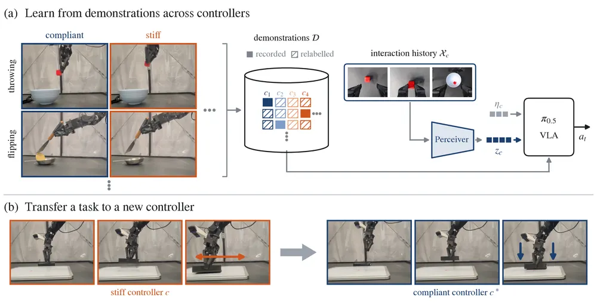
무슨 문제인가
policy의 action은 목표 위치·속도 같은 setpoint이고 이를 토크로 바꾸는 것은 low-level controller라서, joint·Cartesian, stiff·compliant 제어 데이터에서는 같은 action 값이 다른 움직임을 뜻함. 화면만 보고 controller를 알 수 없으면 이런 데이터를 합쳐 배운 policy는 서로 맞지 않는 시연을 평균 내게 됨. 또 controller가 바뀌면 좋은 전략도 바뀜(USB 삽입에서 compliant 제어는 눌러 가며 더듬기, stiff 제어는 먼저 정렬하기). controller를 식별해 action을 토크 기준으로 다시 맞추는 방식(SysID, 시스템 식별)은 기존 궤적을 재현할 뿐 새 전략을 만들지 못함.
어떻게 푸나
policy에 두 가지 조건을 줌: controller 종류와 gain을 적은 문장(metadata)과, 배치할 controller에서 기록한 궤적 3개(behavioral interaction context)임. 이 궤적은 지금 과제가 아닌 다른 과제의 것이어도 됨. 각 궤적의 128시점 카메라 이미지(고정 DINOv2)와 현재 관절 상태·명령 action·다음 관절 상태(작은 MLP)를 token으로 바꾸고, Perceiver 방식 encoder가 query 256개로 256개 token으로 줄여 π0.5 앞에 붙임. context는 episode 시작에 한 번만 계산해 KV cache로 두므로 test-time 학습 없이 실시간 제어가 유지됨. 데이터가 없는 controller 조합은 토크가 같아지도록 action을 계산으로 바꿔 채움(synthetic relabeling). 이렇게 채운 데이터는 같은 controller 이름 아래 서로 다른 전략을 섞게 되고, context가 그중 어느 전략을 따를지 가려 줌.
결과
- 목표 과제에 배치 controller 시연이 하나도 없는 조건(zero-shot)에서 과제 5개 평균 성공률을 잼. 다른 과제의 context를 쓴 이 방법은 50.0%이고, controller metadata만 준 경우는 12.0%, SysID 결과를 준 경우는 27.0%임. 같은 과제 context를 쓴 상한은 75.0%이고, 목표 시연 5개를 더한 few-shot에서는 69.0% 대 SysID 47.0%임.
- 학습에서 controller 종류 하나를 통째로 뺀 실험(종류당 60회)에서 평균 성공률은 50.3%임. 단순 데이터 합치기는 17.5%, relabeling만 쓴 경우는 15.0%임. 학습에 없던 joint impedance gain 4쌍(쌍당 50회)에서는 52.0% 대 28.5%, 23.5%임.
- 조건 요소를 하나씩 더한 별도 ablation에서 relabeling만 더하면 성공률이 24%에서 15%로 내림. 여기에 context를 더하면 47%로 오르고, 문장 metadata까지 더하면 50%임.
- 과제·조건당 20~60회 시행임. 과제 간 context 재사용을 따로 분석한 사례(tool-bit 삽입 context로 USB 삽입)에서 성공률은 35%로, 같은 과제 context로 얻은 성능의 78% 수준임.
한계
실험은 한 연구실의 WidowX 한 대와 π0.5 한 모델에서만 함. 학습 데이터는 source 과제 4개에 controller 6종과 gain 4개를 모두 채운 2,880개 궤적이라, 실제 공개 데이터처럼 controller 분포가 치우친 경우는 보이지 않음. 대부분의 표에 오차 범위가 없고, synthetic relabeling은 impedance 형태의 제어를 가정해 admittance controller에는 바로 쓸 수 없음.
누리랩 연구와의 연결
- 명령과 실제 움직임의 차이를 context로 주는 방식은 controller가 섞인 데이터로 VLA를 학습하거나, 다른 연구실 데이터를 합칠 때 바로 적용해 볼 수 있음.
- 배치 환경의 짧은 실행 기록으로 policy 행동을 바꾸는 구조라, robot memory와 test-time adaptation 연구에서 비교 대상으로 쓸 수 있음. 접촉 구간 전이가 가장 정보가 많다는 결과는 manipulation 실패 원인 분석에도 참고가 됨.
2
74점
Utility-WAM: Correcting Future-Induced Action Changes
World Model
relevance 10/10
Robotics (cs.RO)
world action model이 상상한 미래 영상 때문에 바뀐 행동을 작은 residual adapter로 고치고, 이득이 없을 쿼리는 영상 생성을 건너뛰게 함. RoboTwin 2.0에서 Press Stapler 과제에서 미래 조건화로 생긴 성공률 하락폭을 54.0퍼센트포인트에서 6.0퍼센트포인트로 줄이고, 영상 생성 쿼리를 24.5%로 낮추면서 평균 성공률 93.3%를 얻음.
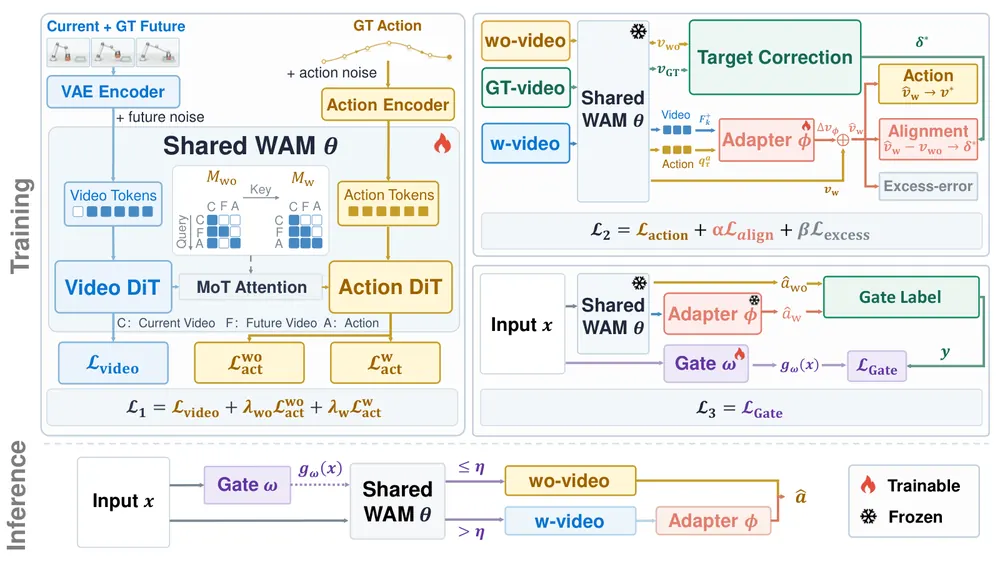
무슨 문제인가
WAM(World Action Model)은 미래 영상을 생성한 뒤 그 영상을 보고 action chunk를 정하는 robot policy임. 미래 영상 생성은 추론 지연을 1.7~1.9배로 늘리지만, 같은 checkpoint에서 미래를 쓰지 않는 경로와 비교하면 평균 성공률 차이는 LIBERO(시뮬레이션 조작 과제 suite)에서 0.8퍼센트포인트 높고 RoboTwin 2.0에서 0.8퍼센트포인트 낮음. 저자는 이 평균 뒤에 소수 정밀 과제의 큰 하락이 숨어 있다고 보고, 이를 future-induced negative transfer(미래 조건화로 생기는 성능 하락)라 부름. 기존 연구는 미래 생성을 켤지 끌지만 정했고, 미래 조건화로 이미 틀어진 action을 고치는 방법은 없었음.
어떻게 푸나
Utility-WAM은 FAST-WAM(Wan2.2-TI2V-5B 기반 WAM)을 바탕으로 세 단계로 학습함. Stage 1은 하나의 shared WAM을 두 attention mask로 학습함: action이 미래 영상 token을 못 보는 future-free 경로와 볼 수 있는 future-conditioned 경로임. Stage 2는 WAM을 고정하고, 생성된 미래 영상 feature와 action query를 입력으로 받아 action velocity 보정값을 내는 residual adapter(cross-attention 1개 블록, 약 1.6M~4.2M 파라미터)만 학습함. 목표는 정답 미래 영상이 flow-matching 오차를 5% 이상 줄일 때만 그 velocity 차이를 따르는 alignment 항(아니면 목표 0)에, future-free보다 오차가 커지는 만큼 벌하는 excess-error 항을 더한 것임. Stage 3은 adapter로 보정한 action이 future-free action보다 demonstration에 가까웠는지를 label로 삼아, 현재 관측만 보는 gate(약 1.3M 파라미터)를 BCE로 학습함. 추론 때는 gate가 영상 생성 전에 한 번 실행되어 future-free 경로와 보정된 future-conditioned 경로 중 하나만 돌림.
결과
- RoboTwin 2.0(양팔 조작 시뮬레이션 과제 50개, 과제당 clean·randomized 각 100회)에서 미래 조건화는 21개 과제의 성공률을 낮췄지만 중앙값 변화는 0.0퍼센트포인트임. 하락은 Press Stapler(54.0퍼센트포인트 하락)와 Place Can Basket(34.0퍼센트포인트 하락)에 몰림. 미래 영상을 항상 쓰면서 adapter만 붙이면 두 과제의 하락폭이 각각 6.0, 14.0퍼센트포인트로 줄어듦.
- adapter 목적함수 ablation에서 RoboTwin 2.0 평균 성공률은 action loss만 쓰면 91.4%, velocity 차이 목표 항(alignment)을 더하면 92.3%, excess-error 항까지 쓰면 92.8%임. 파라미터만 늘려서는 0.3퍼센트포인트 이하로만 바뀜.
- gate를 켜면 RoboTwin 2.0 쿼리의 24.5%에서만 영상을 생성함. 평균 성공률은 93.3%로, 항상 보정할 때 92.8%, future-free일 때 91.9%보다 높음. 지연은 항상 영상 생성 대비 37.9% 줄지만 future-free보다는 17% 김. 같은 연산량의 random gate는 최고 92.6%임.
- 실제 AgileX PiPER 양팔 로봇의 과제 3개(컵 놓기, 캔 끼우기, 블록 3개 쌓기, 과제당 20회)에서 60회 중 53회 성공함. FAST-WAM은 43회, 같은 checkpoint의 future-free 경로는 47회임.
한계
모든 비교가 하나의 Stage-1 checkpoint에서 나왔고, backbone을 다시 학습했을 때의 분산은 재지 않음. 두 심한 과제에서 gate는 하락폭을 더 줄이지 못했고(6.5퍼센트포인트, 17.0퍼센트포인트) 회복은 adapter 몫임. gate label은 closed-loop 성공이 아니라 offline action 오차로 정하며, 실로봇은 과제 3개 각 20회이고 코드 공개 여부는 본문에서 확인 불가함.
누리랩 연구와의 연결
- world model이 만든 상상 결과가 policy에 해를 주는 경우를 같은 모델의 future-free 경로와 짝지어 재는 진단 방식임. world model 기반 VLA에서 failure detection과 test-time 연산 배분을 연구할 때 그대로 쓸 수 있는 평가 틀임.
- 미래를 쓴 경로와 안 쓴 경로의 action 차이를 counterfactual로 계산해 gate label을 만드는 방식은, 상상(imagination)을 언제 쓸지 고르는 test-time optimization 연구의 비교 대상이 됨.
3
74점
Robotic Data Inoculation
Imitation Learning
relevance 10/10
Robotics (cs.RO)
사람이 teleoperation으로 시연을 모으는 동안 online RL로 학습한 residual policy가 명령을 조금씩 틀어 주고, 사람이 그 틀어짐을 바로잡게 해서 recovery 데이터를 모음. 실로봇 t-cube 과제에서 이 데이터로 학습한 offline RL policy의 성공률이 깨끗한 시연 대비 0.42에서 0.59로 오름.
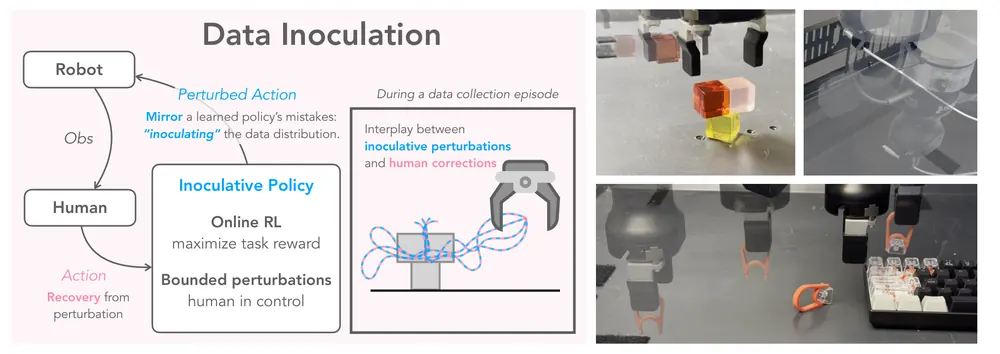
무슨 문제인가
숙련된 사람이 teleoperation으로 모은 시연은 빠르고 일정해서 방문하는 상태가 좁고 recovery 장면이 거의 없음. 그래서 학습된 policy가 시연 경로에서 조금만 벗어나도 본 적 없는 상태에 들어가고 오차가 쌓임. DAgger 계열 방법은 policy가 실제로 실패해야 사람이 개입할 수 있어서 드문 실패를 모으기 어렵고, 깨지기 쉬운 물체처럼 실패 뒤 복구가 불가능한 과제에는 쓰기 어려움. 순수 online RL 탐색은 실로봇에서 sample 효율이 낮고 안전하지 않음.
어떻게 푸나
DI(Data Inoculation)는 사람과 학습된 policy가 로봇을 함께 조종하는 shared-control 방식의 데이터 수집 방법임. inoculative policy라 부르는 residual policy가 현재 관측과 사람의 실시간 명령을 받아, 크기가 α 이하인 보정값을 0.5초(10 Hz에서 5 step)마다 한 번씩 출력함. 로봇은 사람 명령에 이 값을 더해 실행하고, 사람이 틀어진 방향을 바로잡으므로 궤적에는 틀어짐과 그 뒤의 recovery가 짝지어 기록됨. residual policy는 수집 중인 데이터로 비동기 off-policy RL을 돌려 과제 성공 reward를 최대화하도록 학습됨. 저자는 나중에 데이터로 policy를 뽑을 때와 같은 목적을 쓰므로 residual의 틀어짐이 학습된 policy가 낼 실수와 비슷해진다고 주장함. critic은 틀어진 명령의 Q값을 직접 추정하고, TD target 계산에 필요한 다음 상태의 사람 명령은 같은 데이터로 학습한 flow 기반 BC 모델로 근사함.
결과
- Franka 실과제 3개(t-cube: 큐브 두 개를 노란 큐브 위에 T자로 올리기, cable: 좁은 구멍에 USB-C 끼우기, keycap: 도구로 Q 키캡 뽑기)에서 수집 seed마다 policy를 학습하고 20회씩 평가함.
- t-cube(9 seed)에서 offline RL policy 성공률이 깨끗한 시연 0.42, 균일 random noise를 섞은 수집 0.42, DI 0.59임. BC policy는 각각 0.38, 0.40, 0.50임.
- cable(5 seed)에서 BC 성공률이 깨끗한 시연 0.37, random noise 0.48, DI 0.66임. offline RL은 각각 0.35, 0.56, 0.67임.
- keycap(5 seed)에서는 세 방법 차이가 작음. offline RL 기준 깨끗한 시연 0.81, DI 0.84이고, random noise는 0.67로 오히려 내려감.
한계
가장 가까운 선행 방법인 DART(시연 중 noise 주입)와 DAgger 계열 개입 방법은 baseline에 없고, random noise만 비교함. t-cube에서 사람 교정이 놓는 단계에 몰린다는 분석은 휴리스틱 지표이며 성능 향상의 원인으로 검증되지는 않음. 로봇 1대, 정밀 조작 과제 3개뿐이고 사람이 수집 내내 조종해야 하며 본문에 코드 공개 언급은 없음.
누리랩 연구와의 연결
- failure detection/recovery 연구에서 실패를 기다리지 않고 실패 직전 상태와 recovery 시연을 의도적으로 모으는 수집 방식으로 쓸 수 있음. VLA fine-tuning용 실로봇 데이터 수집에 바로 붙여 볼 만함.
- residual policy가 policy의 예상 실수를 흉내 낸다는 가정은 counterfactual 상태 생성과 이어지며, world model 기반 상상 대신 실제 로봇에서 그런 상태를 만든다는 점이 다름.
4
74점
Event2Reward: Learning Robotic Rewards from Progress Relations
RL
relevance 10/10
Robotics (cs.RO)
실제 로봇 실행에서 진행이 멈추거나 되돌아가거나 회복된 사건을 표시하고, 그 사건이 정하는 상태 사이 진행도 대소 관계로 reward model을 학습시킴. 같은 학습 예산에서 LIBERO 40개 과제의 평균 policy 성공률을 sparse reward보다 18.16퍼센트포인트 올림.
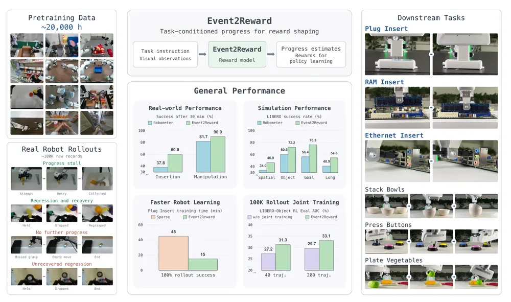
무슨 문제인가
로봇 RL의 dense reward를 만드는 흔한 방법은 성공 demonstration에서 경과 시간 비율을 진행도 라벨로 써서 progress model을 학습하는 것임. 이 라벨은 진행도가 계속 오른다고 가정하므로, 탐색 중 물체를 놓쳐 진행이 되돌아가도 모델이 진행도를 높게 예측할 수 있음. 그러면 진행을 잃게 만든 행동에 양의 shaping reward가 주어짐. 실패 실행으로 직접 학습하려 해도 각 프레임에 절대 진행도 값을 매기기 어렵고, 궤적 단위 preference는 궤적 안에서 언제 진행이 바뀌었는지 알려 주지 못함.
어떻게 푸나
Event2Reward는 과제 지시문, 시작 관측, 짧은 영상 history, 선택적 목표 이미지를 받아 0에서 1 사이의 진행도 하나를 출력하는 vision-language 모델임(Qwen3.5-4B 기반). 사건이 없는 성공 궤적에는 경과 시간 비율을 절대 진행도 라벨로 줌. 사건이 있는 실행에는 progress stall(진행 정체), regression and recovery(후퇴 후 회복), no further progress(더 진행 없음), unrecovered regression(회복 없는 후퇴) 중 하나와 기준 상태·구간을 적음. 사건 종류마다 진행도 대소 관계를 정하고(예: 놓친 순간의 진행도는 놓치기 전과 다시 잡은 뒤보다 margin 이상 낮아야 함), 이를 hinge 형태의 relation loss로 학습함. 사건 라벨은 약 100K개 실제 로봇 실행 기록에 GPT-5.6 Sol 두 단계 라벨링과 독립 사람 라벨링을 거쳐 붙임. 학습된 모델은 고정한 채 연속 진행도 예측의 할인 차이를 potential-based reward shaping 항으로 환경 reward에 더함.
결과
- 감독 신호 비교(LIBERO-10의 4개 과제, residual SAC, 120만 step): 학습 중 평가 성공률 곡선 아래 면적(AUC) 평균이 시간 라벨+진행 관계 36.7%, 시간 라벨+궤적 preference 19.4%, 시간 라벨만 19.6%임. 같은 데이터 혼합에서 relation loss만 끈 경우는 19.1%라서 이득이 데이터 추가가 아니라 관계 손실에서 온 것으로 보임.
- LIBERO 4개 suite(Spatial, Object, Goal, LIBERO-10, 합쳐서 시뮬레이션 조작 과제 40개)에서 고정 π0.5 위에 residual SAC로 학습함. suite별로 가장 강한 baseline 대비 성공률이 9.96에서 13.76퍼센트포인트 높음. LIBERO-Object에서는 72.16% 대 Robometer(Qwen3-VL-4B 기반 기존 진행도 reward model) 60.56%임.
- 실제 Franka 6개 과제에서 30분 학습 후 성공률을 비교함(조건당 3회 학습, 각 20회 평가). 정밀 삽입 3개 평균은 60.0% 대 Robometer 37.8%, 물체 조작 3개 평균은 90.0% 대 81.7%임.
- 이 비교에서 Event2Reward와 Robometer는 과제당 같은 성공 5개와 준최적 5개 궤적으로 적응함. 준최적 5개에 사건을 표시하는 데 과제당 약 1분이 걸렸다고 보고함.
한계
본 실험의 Event2Reward는 Qwen3.5-4B, 비교 대상 Robometer는 Qwen3-VL-4B라서 backbone 차이가 섞여 있고, 같은 backbone으로 한 감독 신호 ablation은 LIBERO-10 과제 4개에 한정됨. 사건 라벨 rollout을 함께 학습하는 단계(rollout joint training)의 AUC 이득은 95% 구간이 0을 포함해 통계적으로 확정되지 않았다고 저자가 밝힘. 실로봇 비교는 조건당 3회 학습뿐이고, 플러그 삽입 학습 시간 비교(15분 대 45분)는 방법당 1회 실행임.
누리랩 연구와의 연결
- 진행이 멈추거나 되돌아가는 순간을 진행도 대소 관계로 학습하는 방식은 failure detection/recovery 연구에서 실패 순간을 프레임 단위로 찾는 신호로 바로 쓸 수 있음. 사건 라벨 데이터가 공개되면 실패 탐지 벤치마크로도 쓸 수 있음.
- π0·π0.5 같은 VLA를 고정하고 residual SAC 또는 DSRL로 조정할 때 쓰는 dense reward 모델임. VLA 실로봇 RL fine-tuning의 reward 설계 비교 대상이 됨.
5
74점
Seeing and Imagining as One: Unified Video Generation and 4D Perception for Embodied World Modeling
World Model
relevance 9/10
Computer Vision and Pattern Recognition (cs.CV)
미리 학습된 video diffusion transformer 하나가 미래 영상 생성과 depth·로봇 팔 분할·2D flow 인지를 함께 하도록 바꿈. 실제 영상을 입력한 인지 모드에서 depth RMSE가 가장 강한 baseline VGGT-Ω의 13.11cm에서 4.76cm로 내려감.
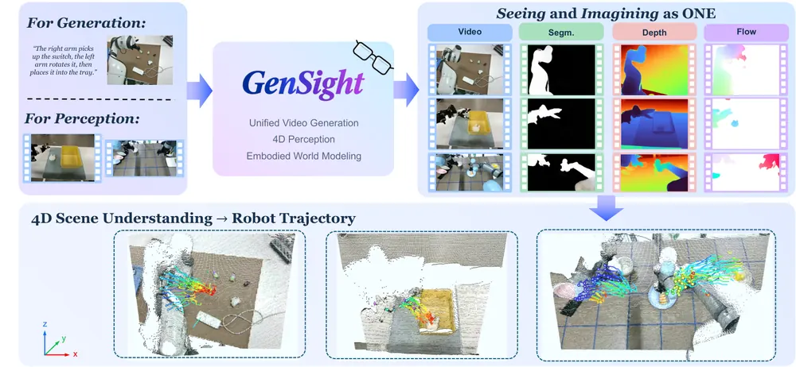
무슨 문제인가
영상 생성 기반 world model은 RGB 영상만 내놓으므로 장면의 기하·의미·움직임은 따로 추정기를 돌려 얻어야 함. 생성한 뒤 추정하는 방식은 생성 영상의 결함이 추정 결과로 넘어가고, 학습 중에 modality 사이의 일관성을 맞출 방법이 없음. depth나 flow를 함께 생성하는 기존 연구는 modality마다 별도 branch나 head를 두고, 이 신호를 보조 supervision으로만 씀. 그래서 같은 모델이 관측된 영상을 dense하게 인지하는 용도로는 쓰이지 않았음.
어떻게 푸나
GenSight는 Cosmos3-Nano(NVIDIA의 video DiT, 36 block)를 출발점으로 하는 단일 모델임. dense 출력은 모두 3채널 영상으로 바꿔(depth는 log 정규화 후 thermometer code, mask는 채널 복제, 2D flow는 HSV 색상환) RGB와 같은 고정 Wan2.2 VAE에 넣으므로 modality 전용 encoder·decoder가 없음. 앞쪽 16개 block은 모든 task가 공유하고, 뒤쪽 block은 가중치를 공유하되 task별 RMSNorm scale·shift·gate만 따로 학습함. 영상과 dense 출력 모두 같은 noise에서 velocity를 예측하도록 학습함. 생성 모드는 첫 이미지와 text를 받아 여러 step denoising하고, dense 출력은 modality마다 정해 둔 denoising 단계에서 꺼내 씀. 인지 모드는 관측 영상에 noise를 한 번 섞고 forward pass 한 번으로 dense 출력을 얻음.
결과
- 생성 모드, RoboMIND 2.0 task-OOD(학습에 없는 실제 로봇 조작 과제 24개, 600 episode) 49 frame 생성 기준임. 생성 영상과 실제 영상의 분포 거리(FVD, 낮을수록 좋음)가 GenSight 14.55, 같은 base인 Cosmos3-Nano 44.97, RGB·depth·flow를 branch별로 생성하는 RynnWorld4D 73.45임. PSNR은 18.01 대 18.07로 RynnWorld4D가 약간 높음.
- 인지 모드, 같은 task-OOD 실제 영상 입력 기준임. depth RMSE가 VGGT-Ω 13.11cm 대비 4.76cm, AbsRel이 5.9%에서 2.4%로 내려감. 로봇 팔·손 분할 IoU는 SAM3 73.5% 대비 88.7%임.
- 3D scene flow 절대 위치 평균 오차(ADE)는 7.39cm로 정답 depth를 쓴 RAFT의 7.04cm보다 높음. 정답 depth를 쓰지 않는 방법 중에서는 가장 낮음.
- RoboTwin 2.0(시뮬레이션 양팔 조작 과제 50개, 300 episode)으로 옮겨도 FVD가 RynnWorld4D 71.18 대비 61.14로 낮음. 생성된 2D flow의 끝점 오차(EPE, 픽셀 단위)는 GenSight 16.45, RynnWorld4D 7.11로 GenSight가 더 나쁨. 저자는 raw EPE가 움직임이 적은 생성에 유리하다고 보며, 정규화한 nEPE는 GenSight 0.892, RynnWorld4D 1.225임.
한계
depth 정답(LingBot-Depth로 채운 센서 depth)과 분할 정답(GroundingDINO·SAM2 pseudo-label)으로 GenSight만 학습했고 baseline은 zero-shot이므로, 인지 비교는 GenSight에 유리함. base 모델이 서로 다르고 branch를 나눈 변형과의 통제된 비교가 없어, 성능 차이를 공유 구조 덕으로 단정할 수 없음. action 예측이나 실로봇 제어는 하지 않았고 고정 카메라를 가정함.
누리랩 연구와의 연결
- 생성 영상과 함께 로봇 팔 분할·depth·flow를 내므로, world model rollout에서 로봇과 물체의 3D 움직임을 직접 읽어 failure detection이나 test-time planning의 판정 신호로 쓸 수 있는지 시험해 볼 수 있음.
- 같은 모델이 실제 관측도 인지하므로, 상상한 미래와 실제 관측을 같은 표현 공간에서 비교하는 counterfactual 비교나 예측 오차 기반 이상 감지 연구의 출발점으로 쓸 수 있음.
6
74점
WorldFlow: Joint Video and 3D Motion Prediction via Large-Scale Pretraining
World Model
relevance 8/10
Computer Vision and Pattern Recognition (cs.CV)
영상 생성 모델이 미래 영상과 지정한 3D 점들의 이동 궤적을 한 번에 만들게 학습함. 공간 관계 과제 SpatialCog에서 평균 위치 오차(ADE)를 가장 강한 외부 baseline의 0.131 m에서 0.060 m로 낮춤.
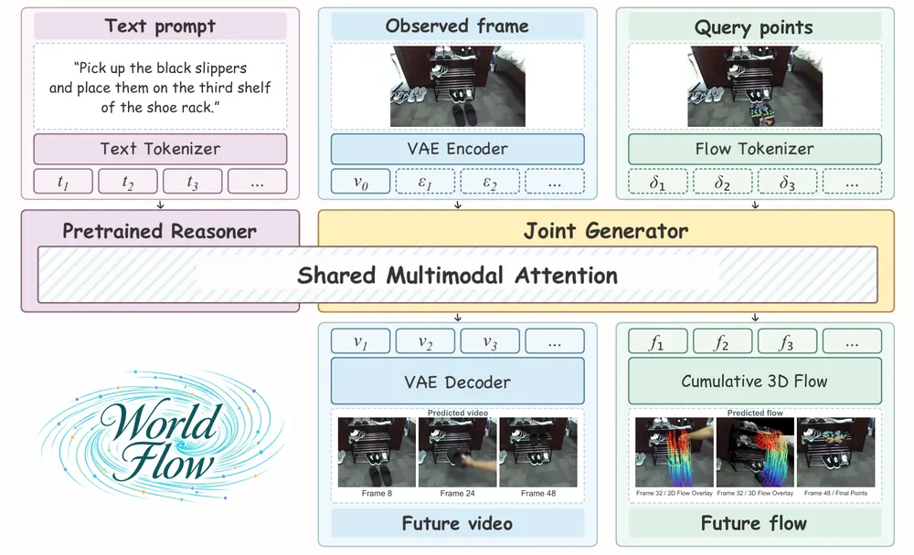
무슨 문제인가
영상 world model은 미래를 픽셀로만 내놓아서 물체가 3D에서 어떻게 움직이는지는 따로 추적해야 알 수 있음. 행동까지 예측하는 world action model은 행동 데이터를 모으기 비싸고 특정 로봇 형태에 묶임. 언어로 지정한 물체 점의 미래 3D 궤적을 바로 예측하는 모델(μ0, MolmoMotion)은 궤적 정답만으로 학습함. 저자는 이 궤적 정답 신호가 물리적 움직임을 배우기에 부족하고, 3D 궤적 라벨도 대량으로 얻기 어렵다고 봄.
어떻게 푸나
WorldFlow는 사진 한 장, 언어 지시, 물체 위 3D query point 64개를 받아 미래 49프레임 영상과 각 점의 프레임 간 3D 변위(flow)를 함께 생성함. 사전학습된 Cosmos-Nano(NVIDIA의 영상 world model)를 바탕으로, 생성부에 flow token이라는 두 번째 출력 종류를 더함. flow token은 각 점의 정규화된 변위 값에 초기 3D 위치 embedding을 더해 만들고, 그 점이 처음 놓인 이미지 patch와 해당 미래 프레임의 position encoding을 받아 video token과 같은 격자에 놓임. Mixture-of-Transformers(MoT: 출력 종류별로 별도 가중치를 두고 attention은 공유하는 transformer) 안에서 두 종류의 token이 같은 noise 수준에서 rectified flow로 함께 denoise됨. 생성된 변위를 다시 누적해 초기 카메라 좌표계의 미터 단위 궤적을 얻으므로 별도 tracker가 필요 없음. 학습 데이터는 시뮬레이션·실제·자체 수집 데이터를 합친 약 144만 개 물체 단위 샘플이며, 궤적 라벨 대부분은 Track4World(3D tracker)로 자동 추출함.
결과
- WorldFlowBench(저자가 만든 평가셋 1,678개: 시뮬레이션 Sim7, 실제 로봇·사람 영상 Real3, 공간 관계 지시 SpatialCog)에서 학습 기반 방법 중 세 subset 모두 ADE와 FDE(마지막 프레임 위치 오차)가 가장 낮음. 가장 강한 외부 baseline 대비 ADE 감소율은 Sim7 46.9%, Real3 4.7%, SpatialCog 54.2%임.
- 같은 backbone·데이터·학습법으로 flow만 생성하는 변형과 비교함. SpatialCog ADE가 0.136 m에서 0.060 m로, FDE가 0.248 m에서 0.078 m로 내림. Real3 ADE 감소는 19.8%로 상대적으로 작음.
- 같은 WorldFlow가 생성한 영상에 tracker를 붙여 궤적을 뽑는 방식보다 직접 생성한 flow가 정확함. SpatialCog ADE가 Track4World 0.083 m, 4RC 0.098 m, 직접 생성 0.060 m임.
- xArm과 XHand 손으로 12개 과제를 3회씩 실행함. flow 예측기만 μ0에서 WorldFlow로 바꾸면 로봇 실행 성공이 4/36(11.1%)에서 24/36(66.7%)로 오름. 예측 궤적이 지시에 맞는지 사람이 판정한 비율은 25.0%에서 97.2%로 오름.
한계
Real3에서는 아무 점도 움직이지 않는다고 예측하는 Static 기준선(ADE 0.062 m, FDE 0.086 m)이 WorldFlow(0.081 m, 0.113 m)보다 오차가 작아서, 실제 영상의 움직임 예측은 아직 약함. SpatialCog는 저자 자체 데이터이고 학습에 그 train split을 써서, 외부 baseline과의 54.2% 차이에는 domain 적합 효과가 섞여 있음. 정답 궤적도 Track4World 자동 추출이라 라벨 noise를 물려받고, 실로봇은 baseline 1개와 과제당 3회뿐이며, 코드 공개 여부는 본문에서 확인 불가임.
누리랩 연구와의 연결
- 로봇 형태와 무관한 물체 3D flow를 world model 출력으로 두는 방식이라, VLA 대신 object-centric 중간 표현으로 manipulation을 계획하는 연구의 baseline이 될 수 있음.
- 미래 영상과 3D 궤적을 함께 내므로, 두 출력의 불일치를 failure detection 신호로 쓰거나 test-time planning에서 후보 궤적을 고르는 데 쓰는 실험으로 이어갈 수 있음.
7
72점
From Reasoning to Action: Consequence-Grounded Alignment for Vision-Language-Action Models
VLA
relevance 10/10
ICRA·IROS·RA-L 계열 양식 (추정)
Robotics (cs.RO)
VLA가 써 낸 embodied chain of thought(ECoT)의 이동 지시와 목표 지점을 행동이 따르는지 reward로 매기고, action 생성의 초기 noise 분포만 GRPO로 다시 학습함. VLABench 기본 과제 성공률이 ECoT만 넣은 버전 47.5%에서 51.8%로 오름(ECoT도 정렬도 없는 버전은 39.2%).
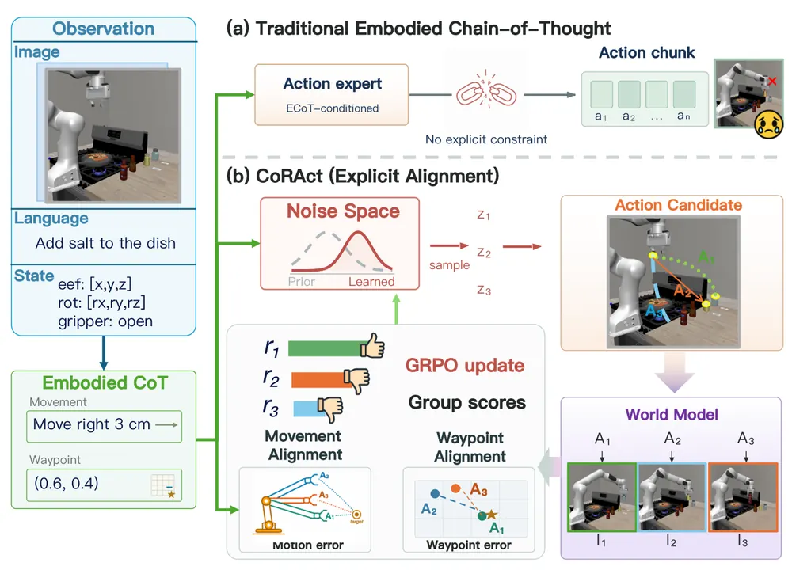
무슨 문제인가
최근 VLA는 행동 전에 ECoT(embodied chain of thought: 이동 방향, 목표 위치 같은 중간 추론)를 생성하고 이를 조건으로 행동을 만듦. 하지만 ECoT와 행동이 일치하는지는 demonstration에서 암묵적으로 배울 뿐, 학습 목표로 직접 강제되지 않음. 그래서 모델이 맞는 이동을 말해 놓고 다른 행동을 하거나, 예상한 결과 위치에 실제로 도달하지 못하는 경우가 생김. 추론이 행동으로 이어지지 않으면 ECoT로 얻으려던 일반화 이득도 제한됨.
어떻게 푸나
CoRAct(Consequence-grounded Reasoning-to-Action alignment)는 먼저 JanusFlow-1.3B 기반 Mixture-of-Transformers(역할별 Transformer expert를 묶은 구조)를 학습함. VLM expert는 이미지, 로봇 상태, 언어 지시를 받아 movement(이동량, 회전, gripper 명령)와 waypoint(미래 gripper 위치의 이미지 좌표)를 생성함. action expert는 이 ECoT를 조건으로 8-step action chunk를 flow matching으로 만들고, image generation expert는 관측과 action chunk만으로 미래 이미지를 예측하는 world model 역할을 함. 다음 단계에서는 backbone을 고정하고, action flow의 초기 noise를 맥락에 따라 내놓는 작은 Gaussian noise policy만 GRPO로 학습함. reward는 후보 8개마다 movement와의 오차, 그리고 예측 미래 이미지에서 Grounding DINO 기반 검출기로 찾은 gripper 위치와 waypoint의 거리로 매김. 추론 시에는 후보 비교 없이 학습된 noise policy에서 noise 하나만 뽑아 10 step denoise함.
결과
- VLABench(언어 지시 조작 benchmark, 상식·의미 추론 과제 포함) 기본 과제의 ablation 성공률은 ECoT도 정렬도 없는 버전 39.2%, ECoT 두 종류만 넣은 버전 47.5%, 두 정렬 reward까지 넣은 전체 모델 51.8%임. RoboCasa(주방 시뮬레이션 조작 과제 모음) 17개 과제에서는 68.6%, 73.5%, 75.5%임.
- 외부 baseline 비교에서 RoboCasa 기본 설정 성공률은 CoRAct 75.5%, 가장 높은 baseline π0.5 72.6%임. RoboCasa 일반화 설정 4개에서도 모두 가장 높음. VLABench에서는 5개 설정 중 3개에서 가장 높고, 상식 과제는 latent CoT로 행동 생성을 이끄는 LaST0와 34.4%로 같고, 처음 보는 texture 과제는 π0(32.2%)보다 낮은 30.0%임.
- 추론과 행동의 일치도를 직접 잼. 정렬 reward 없는 버전과 비교해 두 정렬 reward를 모두 쓰면 movement 대비 위치 오차가 0.401cm에서 0.171cm로 내림. 예측 결과와 waypoint 사이 거리는 5.998px에서 0.542px로 내림. gripper 명령 일치율은 69.8%에서 91.8%로 오름.
- 실로봇 과제 3개(탁상 정리, 참조 이미지로 단어 맞추기, 언어로 과일 고르기)를 과제당 30회 평가함. 성공률은 CoRAct 56.7%(17/30), 46.7%(14/30), 63.3%(19/30)이고, π0.5는 33.3%(10/30), 26.7%(8/30), 56.7%(17/30)임.
한계
waypoint reward는 실제 실행 결과가 아니라 학습된 world model의 예측 이미지에서 계산되므로, 예측이 틀리면 reward도 틀림. 정렬 학습이 expert 궤적만 써서 실패 회복에는 GPT-5.6 기반 외부 ECoT 수정을 따로 붙였고, 외부 VLM ECoT로 zero-shot 적응한다는 주장은 VLABench 과제 2개 결과뿐임. 실로봇에서는 ECoT를 joint space 출력 head로 바꾼 다른 구성을 썼고, 코드 공개는 본문에서 확인 불가함.
누리랩 연구와의 연결
- 행동 후보를 world model로 예측한 결과와 비교해 고르는 과정을 학습 단계에서 noise policy로 옮긴 방식임. test-time optimization 비용을 줄이는 방법, failure detection의 신호(ECoT와 예측 결과의 불일치)로 쓸 수 있는지 비교할 대상임.
- ECoT를 외부 VLM이 고쳐 넣으면 그대로 행동으로 이어진다는 결과(Insert Flower 성공률 24.0%에서 66.0%)는 language feedback 기반 failure recovery 연구의 baseline으로 쓸 수 있음.
8
72점
WorldBridge: Bridging Video and Action for Task Generalization in World Action Models
World Model
relevance 10/10
Robotics (cs.RO)
World action model(WAM)의 새 과제 수행에 영상 감독과 action 감독이 각각 얼마나 기여하는지 데이터를 바꿔 가며 측정함. RoboTwin 2.0의 OOD 과제 성공률이 action 없는 영상만 더해도 25.07%에서 55.90%로, 과제당 시연 1개를 더하면 70.70%로 오름.
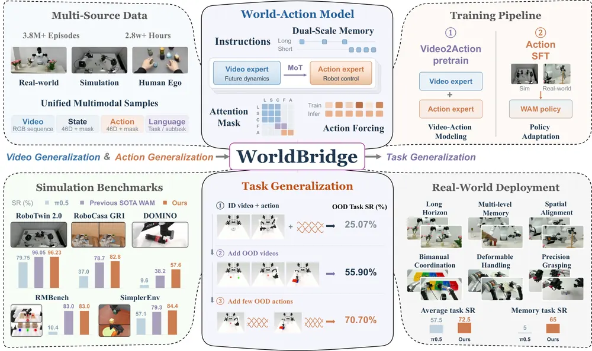
무슨 문제인가
WAM은 미래 영상 예측과 행동 생성을 한 모델에서 함께 하는 robot policy임. 영상은 action label 없이도 모을 수 있으므로, 영상만 있는 새 과제를 WAM이 수행할 수 있는지가 과제 일반화의 관건임. 그런데 새 과제 성능이 영상 예측 범위에서 막히는지, 예측한 영상을 행동으로 옮기는 단계에서 막히는지는 따로 측정된 적이 없음.
어떻게 푸나
저자는 과제 일반화를 새 과제의 장면 변화를 예측하는 video generalization과, 예측 장면을 행동으로 옮기는 action generalization(video-to-action bridge, inverse dynamics 역할)으로 나눔. 이를 반영한 WorldBridge는 video expert와 action expert를 따로 두고 joint self-attention으로 잇는 Mixture-of-Transformers 구조임. 입력은 현재 관측, 짧은 간격·긴 간격의 과거 관측 4장씩(dual-scale memory), 언어 지시이고, 출력은 미래 영상 latent와 action chunk이며 joint flow matching으로 학습함. post-training의 attention mask는 과거·현재 관측에서 예측 미래 영상을 거쳐 action으로만 정보가 흐르게 함. action forcing은 학습 때 한 chunk 안의 action 묶음마다 noise 수준을 따로 줘서 action expert가 영상 문맥에 더 기대게 하는 방법임. 사전학습에는 로봇 데이터와 사람 1인칭 손 영상을 46차원 공통 action 공간과 차원별 validity mask로 맞춘 약 22,321시간 데이터를 씀.
결과
- RoboTwin 2.0(ALOHA 양팔 로봇 시뮬레이션 조작 과제 50개)에서 과제를 ID와 OOD로 나눔. ID 영상·action만으로 학습하면 OOD 성공률이 25.07%임. OOD 과제 영상을 action 없이 과제당 550개 더하면 55.90%, 과제당 action 시연 1개를 더하면 70.70%, 5개면 84.67%로 오름. ID 성공률은 약 92%로 유지됨.
- OOD action 시연을 과제당 100개에서 550개로 늘려도 성공률은 93.17%에서 92.83%로 오르지 않음. 반면 시연 100개 조건에서 OOD 영상을 100개에서 550개로 늘리면 88.83%에서 93.17%로 오름.
- RoboTwin 2.0 전체 데이터 설정 평균 성공률은 96.23%로, 비교표 최고였던 Kairos 96.05%와 비슷함. 깨끗한 장면 시연만으로 학습해 무작위 장면에서 평가하는 Clean2Random에서는 80.9%로 Qwen-RobotManip-Context 77.1%, π0.5 60.5%보다 높음.
- 실로봇(AgiBot G2, ARX AC-1) 평균 과제 성공률은 그림 1 기준 π0.5 57.5%, WorldBridge 72.5%이고, 기억이 필요한 과제는 5% 대 65%임. 과제 수와 시행 횟수는 본문에서 확인 불가임.
한계
과제 일반화 분석은 RoboTwin 2.0 시뮬레이션 한 곳에서, 같은 로봇이 찍은 OOD 영상으로만 함. 사람 영상이나 다른 embodiment 영상으로 bridge가 옮겨지는지는 보이지 않음. ablation 조건은 본문에서 확인 불가하고, 코드 공개 주소는 찾지 못함.
누리랩 연구와의 연결
- 영상 감독과 action 감독의 기여를 따로 잰 표 2는 VLA·world model 데이터 수집 계획에서 action label을 어디에 쓸지 정할 때 근거가 됨. 과제당 시연 1~5개로 OOD 성능이 크게 오르는 결과는 few-shot 적응 실험의 baseline으로 쓸 수 있음.
- 영상 예측을 거쳐서만 action으로 가는 attention mask 구조는, 예측 영상과 실제 관측의 차이로 실패를 감지하는 failure detection 연구에 그대로 쓸 수 있는 구조임.
9
70점
LOGIV: Graph-Verified Execution with Causal Local Repair for Long-Horizon Robot Tasks
Failure Recovery
relevance 9/10
Robotics (cs.RO)
PDDL plan을 조건 의존 그래프로 바꿔 두고, 이미 끝난 행동이 만든 조건이 나중에 더는 성립하지 않으면 그 조건만 국소적으로 복원하는 실행 계층 LOGIV를 기존 VLA·WAM policy 위에 얹음. BiCoord 10개 과제에서 backbone 3개 평균 성공률이 42.33%에서 57.67%로 오름.
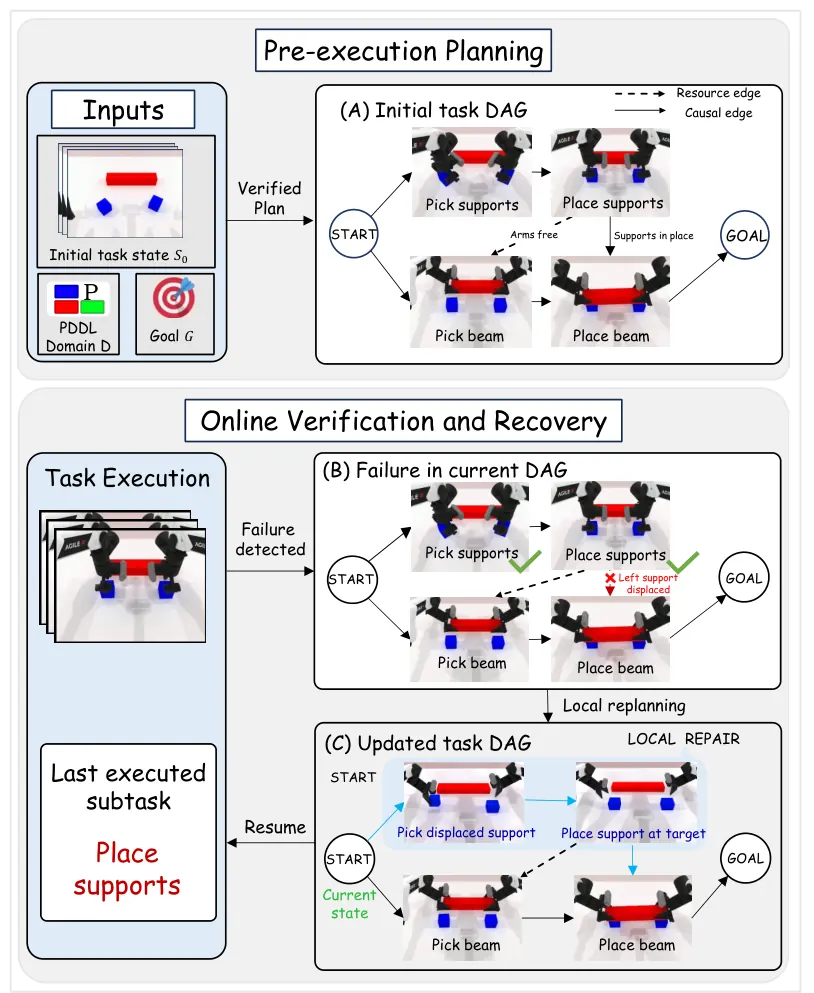
무슨 문제인가
장기 과제에서는 행동이 성공한 뒤에도 그 행동이 만든 조건이 나중에 깨질 수 있음. 예를 들어 다리 조립에서 받침대를 놓은 뒤 beam을 집는 동안 팔이 받침대를 밀어내면, 받침대 놓기는 완료 상태지만 beam 놓기에 필요한 조건은 사라짐. 기존 실패 감지·재계획 방법은 주로 방금 실행한 행동의 성공 여부를 보거나 남은 과제 전체를 다시 계획함. 그래서 어떤 조건을 복원해야 하고 남은 계획 중 무엇을 그대로 써도 되는지 정하는 방법이 따로 필요함.
어떻게 푸나
LOGIV(Long-Horizon Online Graph-based Inference and Verification for Plan Repair)는 학습 요소 없이 VLA나 WAM(World Action Model) policy 위에서 도는 실행 계층임. 입력은 PDDL domain·problem과 초기 상태이고, Fast Downward planner가 만든 plan을 plan 검증기 VAL로 확인한 뒤 task graph로 바꿈. graph에는 앞 행동이 뒤 행동의 precondition을 공급하는 causal edge와, 팔·gripper 같은 자원 순서를 지키는 resource edge가 있음. 실행 중에는 GPT-4o가 관측 이미지에서 사실을 뽑아 symbolic state를 만들고, 각 행동 전후로 precondition, effect, 남은 행동이 기대는 조건을 검사함. 조건이 성립하지 않으면 완료된 행동과 그 조건에 기대는 미완료 행동은 그대로 두고, goal에서 거꾸로 계산한 복원 목표에 대해서만 repair 조각을 새로 계획함. repair 조각과 남은 행동을 합친 전체 plan을 VAL로 다시 검증하고, 실패하면 교체 범위를 넓힌 뒤 graph를 다시 만들어 실행을 이어감.
결과
- RoboTwin V2(양팔 조작 시뮬레이션 benchmark)와 BiCoord(양팔 협응 장기 과제 benchmark)에서 각 10개 과제, 초기 상태 10개씩 평가함. 외란 없는 성공률의 backbone 3개(π0.5, AHA-WAM, Light-WAM) 평균이 RoboTwin V2에서 71.67%에서 82.33%로, BiCoord에서 42.33%에서 57.67%로 오름.
- 과제마다 정해 둔 외란을 한 번 넣은 설정에서, π0.5 기준 RoboTwin V2 성공률이 backbone 단독 32%, 가장 강한 비교 방법 VLM-RP-BT(behavior tree에 복구 행동을 끼우는 방식) 58%, LOGIV 60%임. 비교 방법 3개는 원래 시스템이 아니라 저자가 PDDL 환경에 맞게 고친 버전임. 두 benchmark와 backbone 3개 모두에서 LOGIV와 가장 강한 비교 방법의 외란 성공률 차이는 2~5퍼센트포인트임.
- RoboTwin V2 ablation에서 causal edge 대신 linear plan 위치로 repair 대상을 고르면, 수정되는 node 비율은 24.6%로 같지만 외란 성공률이 60%에서 52%로 내림. 남은 행동 전체를 재계획하면 이미 유효한 행동을 다시 실행하는 횟수가 0.2회에서 1.6회로 늘고 외란 성공률은 54%임.
- 실로봇 과제 3개(토마토 옮기기, 블록 쌓기, RJ45 케이블 꽂기)를 과제당 10회 평가함. π0.5 단독 12/30에서 LOGIV 17/30으로 오르고, 실로봇에서는 외란을 넣지 않음.
한계
PDDL domain과 조건 술어를 사람이 과제마다 미리 정의해야 하고, 상태 추정은 GPT-4o 판단 정확도에 기댐. 비교 방법은 모두 저자가 고친 버전이며, 실행 시간과 VLM 호출 비용은 보고하지 않음. 실로봇은 과제당 10회뿐이고 외란 복원은 시뮬레이션에서만 보였음.
누리랩 연구와의 연결
- 완료된 행동과 그 효과의 현재 유효성을 따로 추적하는 설계는 failure detection/recovery 연구에서 VLM 기반 성공 판정과 비교할 기준이 됨. 어떤 조건이 성립하지 않게 됐는지 graph로 추적하는 부분은 scene graph 기반 상태 추적과 바로 이어 붙일 수 있음.
- VLA를 그대로 두고 상위에서 검증·국소 재계획만 하므로, 우리 VLA 실험에 long-horizon 복구 baseline으로 넣기 쉬움. 코드가 공개되어 있음.
10
70점
LucidLyra: Feed-Forward Generative 3D Scene Reconstruction and Joint Understanding via Multi-Task Distillation
3D Vision
relevance 7/10
Computer Vision and Pattern Recognition (cs.CV)
단일 이미지에서 3D Gaussian 장면을 생성하는 Lyra를 확장한 LucidLyra는 같은 Gaussian에 open-vocabulary semantic feature와 instance feature를 한 번의 forward pass로 붙임. 저자가 만든 생성 장면 benchmark LucidLyra-SDG에서 semantic mIoU가 Lyra에 LangSplatV2를 붙인 two-stage 방식의 32.4%에서 64.1%로 오름.
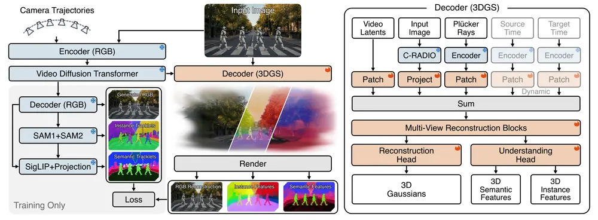
무슨 문제인가
단일 이미지에서 3D 장면을 만드는 generative reconstruction은 geometry와 appearance만 출력하고, 각 물체가 무엇이고 어디까지인지는 담지 않음. 로봇 시뮬레이션이나 장면 편집에는 물체의 semantic label과 instance 경계가 필요함. 기존 방법은 완성된 3DGS에 2D foundation model 예측을 장면마다 최적화로 붙이거나, 실제로 찍은 multi-view 입력에서 geometry와 segmentation을 함께 추정함. 앞의 방식은 장면 하나에 수십 분에서 수백 분이 걸리고, 뒤의 방식은 단일 이미지로 생성한 장면에 바로 쓸 수 없음.
어떻게 푸나
LucidLyra는 Lyra(camera-controlled video diffusion model의 latent를 3D Gaussian으로 바로 바꾸는 feed-forward decoder)를 바탕으로 함. 입력 이미지에서 고정된 video model이 여러 camera trajectory의 video latent를 만들고, decoder는 이 latent와 camera ray, 입력 이미지의 C-RADIOv3(범용 vision encoder) feature를 받음. decoder의 공유 trunk 뒤에 head 두 개가 있음: 하나는 Gaussian의 geometry와 색을, 다른 하나는 128차원 semantic feature와 object·part 단위 instance embedding을 출력함. 학습 target은 생성된 latent를 RGB 영상으로 decode한 뒤 고정된 2D 모델로 만듦. SAM과 SAM2로 view 사이에 이어지는 object track을 얻고, SigLIP2 image-text 공간의 dense feature를 track마다 평균해 view마다 흔들리는 feature를 줄임. 추론 때는 text embedding과 Gaussian feature의 cosine similarity로 class를 정하고, instance embedding을 HDBSCAN으로 clustering해 물체를 나눔.
결과
- LucidLyra-SDG(학습에서 뺀 생성 장면 25개에 사람이 검수한 semantic·instance 정답을 단 benchmark)에서 semantic mIoU가 64.1%임. Lyra 위에 장면별 최적화 방법 LangSplatV2를 붙인 경우는 32.4%임. view 사이 instance 일관성을 재는 mTrackPR은 21.5%로, Lyra Gaussian에 장면별 최적화로 instance feature를 붙이는 Unified-Lift의 11.7%보다 높음.
- 실제 ADE20K 검증 이미지 25장으로 장면을 생성한 LucidLyra-ADE20K에서는 mIoU 49.8%, mTrackPR 18.5%임. teacher 예측을 Lyra Gaussian에 직접 옮겨 붙인 참조값(50.1%, 17.3%)과 비슷한 수준임. 반면 LucidLyra-SDG에서는 mTrackPR 21.5%가 같은 teacher 참조값 22.8%보다 낮음.
- 렌더링 품질은 유지됨. SDG에서 PSNR이 Lyra의 24.49dB에서 25.02dB로 오름. 장면 하나를 분할하는 시간은 A100 한 장 기준 2.1분이고, LangSplatV2는 697분, teacher lifting은 64분임.
- ablation에서 입력 이미지의 C-RADIO feature를 빼면 SDG mIoU가 64.1%에서 56.9%로, mTrackPR이 21.5%에서 14.9%로 내림.
한계
평가 benchmark는 각각 25장면이고, 생성에 쓴 고정 camera trajectory 6개의 view에서만 정답과 비교하며, class도 장면에 있는 ADE20K class로 한정됨. 정답 annotation이 학습 target과 같은 SAM/SAM2 파이프라인에서 출발해 사람이 고친 것이어서 teacher 편향이 평가에 섞일 수 있음. 로봇 활용은 Isaac Sim에서 humanoid 내비게이션과 Franka pick-and-place를 보여 준 시연뿐이고 정량 평가는 없음.
누리랩 연구와의 연결
- object-centric 3DGS와 scene graph 연구에 직접 이어짐. Gaussian마다 semantic·instance feature가 붙어 있어 text query로 물체 단위 노드를 뽑을 수 있고, 단일 이미지에서 조작용 시뮬레이션 장면을 만드는 경로의 비교 대상이 됨.
- 여러 view의 teacher feature를 object track으로 묶어 평균하는 방식은, view마다 흔들리는 VLM feature를 3D로 쌓는 semantic mapping과 robot memory 설계에 참고할 수 있음.
11
68점
TactoHand: Learning Geometry-Based Dense Hand-Surface Interaction Fields from Video
Manipulation
relevance 7/10
ICLR 양식 (추정)
Computer Vision and Pattern Recognition (cs.CV)
단안 RGB 영상에서 손 표면 778개 vertex마다 접촉 여부, 상대 표면까지의 거리, 3D 힘을 함께 예측하는 TactoHand를 제안함. 학습에 쓰지 않은 손-물체 조작 영상 데이터셋 HOCap에서 접촉 Macro-F1이 기존 HACO의 18.0에서 50.5로 오름.
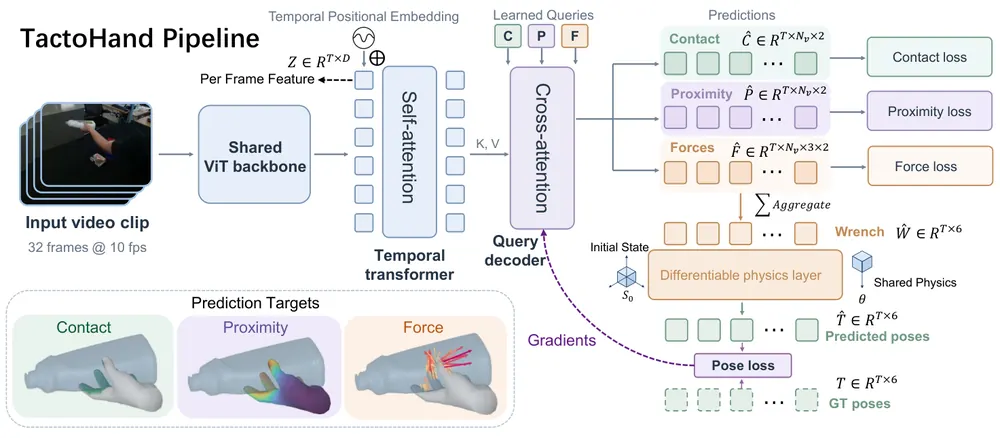
무슨 문제인가
손이 물체를 어디에, 얼마나 가까이, 어떤 힘으로 대는지는 손-물체 복원과 조작 학습에 필요한 정보임. 이를 직접 재려면 tactile 장갑이나 압력 센서 같은 장비가 필요해서 대규모로 모으기 어려움. 영상 기반 기존 연구는 접촉만(HACO), 거리만(InterField), 접촉과 수직 방향 압력만(HOPE, EgoPHI) 따로 다뤘음. 또 접촉 부위는 물체에 자주 가려지고, 한 장의 프레임으로는 힘을 알기 어려움.
어떻게 푸나
손 표면 상호작용을 MANO 손 mesh(778 vertex 손 모델)의 vertex마다 contact(접촉 확률), proximity(거리를 0~1로 바꾼 값), force(3D 힘 벡터)로 정의함. 라벨은 기존 데이터셋 24개(약 4,900만 프레임)의 손·물체 형상에서 계산함. 접촉은 거리 임계값에 표면 normal 방향 검사와 물체 내부로 파고든 vertex 포함 규칙을 더해 정함. 힘 라벨은 물체 궤적에서 Newton-Euler 역동역학으로 물체에 걸린 총 힘·토크(wrench)를 구하고, 이를 마찰 원뿔 제약을 둔 convex program으로 가까운 손 vertex들에 나눠 만듦. 모델은 32프레임 클립을 DINOv3 ViT-L로 프레임별 인코딩하고 temporal transformer로 묶은 뒤, 학습된 query 3개로 세 field를 디코딩함. 예측한 vertex 힘을 wrench로 합산해 미분 가능한 강체 시뮬레이션으로 물체를 0.4초 굴리고, 실제 물체 자세와의 오차를 힘 예측까지 역전파함.
결과
- 학습에서 뺀 HOCap에서 접촉 Macro-F1(프레임·손 단위 F1 평균)이 HACO 18.0, EgoPHI 11.4에 비해 TactoHand temporal 모델 50.5임. DexYCB에서는 34.3에서 59.5로, ARCTIC에서는 42.2에서 51.0으로 오름. 정답은 저자가 형상에서 만든 라벨이며 촉각 측정값이 아님.
- 거리 예측 오차(ADE)는 HOCap에서 InterField-SF의 132.51mm에서 42.51mm로 내림. 100mm에서 자른 ADE-100은 38.15mm에서 6.35mm(single-frame 모델)로 내림.
- DexYCB에서 물리 supervision을 켜면 temporal 모델의 0.4초 rollout 위치 오차가 5.7cm에서 3.3cm로 내림. 힘 오차(active MAE)는 126.4mN에서 122.7mN으로 거의 그대로이고, single-frame 모델은 오히려 124.9mN에서 126.7mN으로 오름.
- 예측한 contact와 proximity를 EasyHOI, ArtHOI 복원에 제약으로 넣으면 3개 데이터셋 6개 조합 모두에서 정렬 후 손 vertex 위치 오차(PA-VPE)가 내림. ArtHOI on DexYCB는 7.317mm에서 4.626mm, HACO 접촉을 넣은 경우는 6.027mm임.
한계
접촉·힘 라벨 모두 측정이 아니라 형상과 물체 운동에서 계산한 추정치이고, 힘은 질량 1kg 가정과 마찰·지지력 가정에 기대며 실제 힘 센서와 비교한 실험은 없음. 예측한 힘을 카메라 좌표 벡터로 바꾸려면 정답 MANO 손 자세가 필요하고, rollout 평가는 기준 힘을 섞고 발산 구간을 뺀 0.4초 짧은 구간에 한정됨. 보고된 checkpoint는 DexYCB·ARCTIC 평가 세트로 골랐고, 로봇 실험은 없으며 코드는 공개 예정이라고만 적음.
누리랩 연구와의 연결
- 사람 손 영상에서 접촉 위치와 vertex별 힘을 뽑아 주므로, human video로 dexterous manipulation policy를 학습할 때 접촉·힘 보조 라벨이나 reward 설계에 쓸 수 있음.
- 물체 운동과 맞지 않는 힘 예측을 미분 가능한 물리로 잡아내는 구조는 tactile perception 대체 신호나 조작 failure detection(접촉이 예상과 다른 상황 감지)의 입력으로 검토할 만함.
12
66점
HiFOR: Hierarchical Foresight with Action-Guided World Grounding for Vision-Language-Action Model
VLA
relevance 9/10
Computer Vision and Pattern Recognition (cs.CV)
VLA가 가까운 미래, 다음 작업 단계, 최종 목표 세 시점의 장면 feature를 함께 예측하고, action을 만드는 동안 그중 필요한 시점·카메라·영역만 골라 참고하게 함. RoboTwin 2.0 Hard 20개 과제 평균 성공률이 π0.5의 40.35%에서 49.40%로 오름.
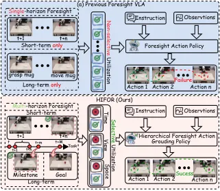
무슨 문제인가
미래를 예측해 action 생성에 쓰는 foresight VLA는 대개 한 가지 시간 범위만 예측함. 가까운 미래만 예측하면 이후 작업 단계와의 연결이 없고, subgoal만 예측하면 그 사이의 연속적인 움직임 정보가 없음. 또 예측한 미래 정보를 그대로 policy의 조건 입력으로 넣으므로, 지금 만드는 action에 어느 시점·카메라·영역이 필요한지 가리지 않음. 저자는 이 두 가지가 복잡한 조작 과제에서 미래 예측을 action으로 잇는 데 방해가 된다고 주장함.
어떻게 푸나
HiFOR는 flow-matching VLA에 미래 예측 모듈과 검색 모듈을 붙인 구조임. 먼저 planning agent가 지시문을 순서가 정해진 subgoal로 나누고, gripper 개폐와 로봇 움직임 구간을 써서 기존 demonstration에서 각 subgoal의 완료 시점(milestone)을 자동으로 찾음. 학습 때 모델은 현재 다중 카메라 이미지와 지시문을 받아, 짧은 간격(LIBERO에서 5 step) 뒤, 다음 milestone, 과제 마지막 시점의 DINOv2 feature(고정, 카메라마다 4×4 격자)를 예측함. HDM(Hierarchical Dependency Mask)은 milestone query가 단기 query를, goal query가 둘 다를 볼 수 있게 attention을 제한하는 mask임. AWR(Action-Guided Factorized World Retrieval)은 denoising 단계마다 action expert의 hidden state로 query를 만들어, 시점·카메라·위치 순으로 attention 가중치를 곱해 미래 feature를 모음. 모은 feature는 action expert에 residual로 더해짐.
결과
- RoboTwin 2.0(domain randomization이 강한 양팔 조작 benchmark)의 Hard 설정에서 무작위로 고른 20개 과제, 과제당 100회 평균 성공률이 49.40%임. 저자가 재현한 π0.5는 40.35%, X-VLA는 23.25%임.
- 구성 요소를 하나씩 더한 ablation에서 RoboTwin 2.0 평균 성공률을 잼. 단기 예측 44.15%, milestone 추가 45.60%, goal 추가 46.95%, AWR 추가 49.40%로 오름. 세 시점 예측을 모두 둔 상태에서 AWR이 더한 몫은 2.45퍼센트포인트임.
- LIBERO(시뮬레이션 조작 과제 suite 4개, suite당 10과제) 평균 성공률은 98.3%로 π0.5의 96.9%보다 1.4퍼센트포인트 높음. 긴 과제 모음인 LIBERO-Long에서는 92.4%에서 95.8%로 오름.
- AgileX Piper 6-DoF 팔로 실로봇 과제 6개를 과제당 50회 평가함. 평균 성공률이 81.7%로 π0.5보다 11.0퍼센트포인트 높고, 블록 옮겨 쌓기 과제에서는 66% 대 50%임.
한계
seed 수와 분산이 보고되지 않아 LIBERO의 1~2퍼센트포인트 차이는 오차 범위와 구분하기 어려움. AWR을 단순 cross-attention 같은 비분해형 검색과 비교한 실험이 없고, 추론 지연이나 연산량도 보고되지 않음. milestone 주석은 planning agent와 사람 검토에 기대며, 코드 공개 여부는 본문에서 확인 불가함.
누리랩 연구와의 연결
- 예측한 미래 feature 중 어느 시점·카메라를 참고하는지가 단계마다 바뀌는 attention 분포는, world model 예측을 policy가 실제로 쓰는지 진단하거나 failure detection 신호로 쓰는 실험의 출발점이 될 수 있음.
- demonstration에서 milestone 시점을 자동으로 찾는 절차는 long-horizon 과제의 단계 분할이나 진행도 추정이 필요한 VLA·skill chaining 연구에 그대로 가져다 쓸 수 있음.
13
66점
Smooth Action Chunking Via Movement-Primitive Representations for Imitation Learning
Manipulation
relevance 9/10
ICRA·IROS·RA-L 계열 양식 (추정)
Machine Learning (cs.LG)
action chunk를 raw action 대신 매끄러운 기저 함수의 계수로 예측하게 바꾸고, 추론 때 이전 chunk 끝점을 지나도록 계수를 closed-form 식으로 보정함. 실제 ALOHA의 Fold Cloth에서 ACT의 chunk 내부 jerk(정규화 action 단위/s³)가 434.2에서 33.4로 내려감.
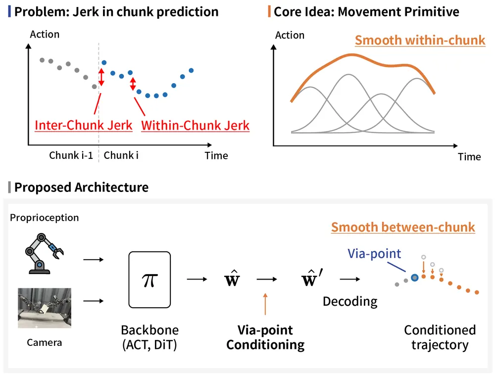
무슨 문제인가
ACT, Diffusion Policy, VLA 같은 chunk 기반 imitation learning policy는 한 번에 여러 미래 action을 내놓지만, 시간 구조는 암묵적으로만 배움. 그래서 chunk 안에서 이웃한 action이 매끄럽게 이어지지 않고, 새 chunk의 시작점도 실행 중이던 chunk의 끝과 어긋남. 실제 로봇에서는 이것이 팔의 진동으로 나타나고, 실제로 작업하는 follower 팔이 속도 제한에 반복해서 걸림. 기존 해결책인 temporal ensembling, 필터링, RTC(Real-Time Chunking: denoising 중 이미 실행할 앞부분을 inpainting하는 방법)는 외부 후처리이거나 반복 denoising policy에만 쓸 수 있음.
어떻게 푸나
policy는 관측(카메라 4대 이미지와 14차원 관절 상태)을 받아 50 step chunk 대신 action 차원마다 Gaussian 기저 함수 10개의 계수를 출력함. 계수에 고정된 기저 행렬을 곱하면 chunk가 복원되므로 chunk 내부는 구조상 매끄러움. backbone 구조와 loss 형태, 추론 절차는 그대로 두고 예측 대상만 바꾸며, 한 번에 chunk를 내는 ACT와 반복 denoising을 하는 DiT(Diffusion Transformer policy) 모두에 적용함. chunk 사이 불연속은 ProMP(Probabilistic Movement Primitives)의 via-point 조건화 식으로 해결함. 이전 chunk의 마지막 명령 action을 새 chunk 첫 지점이 지나야 할 via-point로 두고, 예측 계수를 MAP 방식으로 한 번 보정함. 보정 gain 행렬은 고정 파라미터와 기저 행렬로만 정해져 미리 계산되므로 추가 학습이 필요 없고, ACT처럼 denoising 반복 없이 chunk를 한 번에 내는 policy에도 적용됨.
결과
- 실제 bimanual ALOHA 과제 3개(물체 건네기 Pick-and-Pass, 천 접기 Fold Cloth, 페그 삽입 Peg Insertion)에서 chunk 내부 명령 jerk(정규화한 명령 궤적의 3차 차분 크기, 단위 /s³)를 잼. Fold Cloth 기준 ACT는 434.2에서 33.4로, DiT는 80.4에서 33.1로 내려감(seed 3개 평균).
- 같은 가중치에서 보정만 켠 비교에서 chunk 경계 jerk가 ACT Fold Cloth 1222에서 214로 내려감. ACT의 episode당 속도 제한 발동 횟수는 세 과제 모두 약 8~13회에서 1~3회로 줄었음. DiT에서는 실제 실행된 1~5Hz 진동 jerk가 seed 편차 이상으로 줄지 않음.
- 겹친 구간을 선형으로 섞는 weighted-sum blending이 경계 jerk와 실행 진동 jerk 모두에서 가장 낮았음. raw action ACT에 blending만 써도 Fold Cloth 실행 jerk가 5.00으로 제안 방법 8.19보다 낮음. 다만 blending은 chunk 내부 jerk를 거의 줄이지 못함.
- 성공률은 실로봇의 모든 과제·policy 조합에서 유의한 변화가 없었음(McNemar p≥0.45, seed당 10 episode). 시뮬레이션 DiT Transfer Cube만 85.7%에서 77.3%로 유의하게 내려감(p=0.01). 보정 비용은 DiT 호출당 113ms에서 116ms이고 RTC는 205ms임.
한계
실로봇 과제는 느린 준정적(quasi-static) 동작이고 시연 동작도 거의 한 가지 방식뿐이라, blending의 반응 지연이나 multimodal chunk 평균 문제가 드러나지 않는 조건에서만 비교함. 성공률은 seed당 10 episode로 검정력이 낮아, 성능이 같다는 것이 아니라 더 나빠지지 않았다는 것(non-inferiority)만 주장함. Pick-and-Pass에서는 보정을 켜면 완료 시간이 DiT에서 약 1초 늘었고, 코드 공개 여부는 본문에서 확인 불가함.
누리랩 연구와의 연결
- chunk 기반 VLA를 실로봇에 올릴 때 생기는 진동과 경계 불연속을 backbone 재학습 없이 출력 표현 교체와 추론 시 보정으로 다루는 방법임. manipulation policy 배포 시 blending, RTC와 함께 비교할 기준선으로 쓸 수 있음.
- 추론 시 계수를 closed-form 식으로 고치는 구조는 test-time optimization이나 failure recovery에서 policy 출력에 제약을 거는 간단한 방법으로 이어 볼 수 있음.
14
66점
PhysVLMM: Interaction-Conditioned Physical Belief Maps for Articulated Objects in Robot Scene Maps
Scene Graph
relevance 9/10
Robotics (cs.RO)
scene map의 문·서랍마다 동역학 belief를 두고, 한 부품을 당겨 잰 force를 닮은 부품들에 closed-form 계산으로 나눠 주는 PhysVLMM을 제안함. 실제 집 18곳 데이터에서 pull 결과의 정지 위치 예측 오차가 미분 가능 시뮬레이션 기반 RigPI보다 41% 낮음(CRPS 0.323 대 0.544).
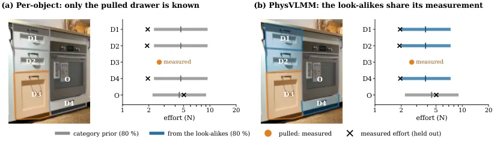
무슨 문제인가
VLMM(Vision-Language-Motion Map: 물체마다 움직였는지와 움직일 수 있는지를 기록하는 scene map) 같은 지도는 문을 당겼을 때 어떻게 반응할지는 예측하지 않음. ForceTwin, RigPI처럼 동역학을 추정하는 방법은 물체를 하나씩 직접 당겨 봐야 하고, 만지지 않은 부품으로 옮기는 방법은 없음. 저자는 force를 재지 않고 움직임만 보면 friction, damping, inertia를 정할 수 없음을 증명함(Proposition 1). force를 잰 pull도 당긴 부품의 parameter만 정하고, 한 방향으로만 당기면 Coulomb friction과 preload를 나눌 수 없어 둘의 합만 정해짐(Proposition 2).
어떻게 푸나
PhysVLMM은 VLMM의 관절 부품 요소마다 관절 기하(type, axis, 점군), 동역학 parameter의 posterior, 행동에 대한 반응 분포를 덧붙임. 입력은 부품의 scan 점과 설명, 관찰한 link pose, 그리고 handheld gripper의 force/torque 센서로 잰 pull임. 먼저 link pose에 직선 경로와 회전을 각각 맞추고 logistic classifier로 joint type(revolute/prismatic)과 axis를 정함. 관절 운동 방정식은 parameter에 선형이므로 pull 하나로 Gaussian posterior를 closed-form으로 구하고, 정해지지 않는 방향에는 prior의 분산을 남김. 종류가 같고 앞면이 평행하며 1.5 m 안에 있는 부품을 look-alike group으로 묶고, 계층 Gaussian 모델로 pull 하나의 effort(움직임 유지 힘의 log)를 덧셈 두 번으로 group 전체에 반영함. 출력은 'F 뉴턴으로 당기면 계속 움직이는가'에 대한 답이며, 사용자가 정한 위험 수준 δ에 대해 확률이 1−δ 이상이면 yes, δ 이하면 no, 그 사이면 '증거 부족'으로 보류함.
결과
- 관절 type 판정: Hoi!(사람이 force 센서 달린 gripper로 실제 집의 문·서랍을 여닫은 데이터셋)의 held-out pull 249개에서 정답률 86%임. 정지 scan 한 장을 보는 FlowBot3D는 48%, GAPartNet은 17%이며, PhysVLMM은 부품이 움직이는 것을 본다는 입력 차이가 있음.
- 측정한 pull 하나로 다른 pull의 정지 위치를 예측: CRPS(예측 분포와 실제 값의 차이, stroke 비율, 낮을수록 좋음)가 RigPI 0.544에서 0.323으로 내림(200 pull). 사례당 시간은 230 s 대 13 ms이고, 궤적 전체 오차는 RigPI 0.475, PhysVLMM 0.485로 비슷함.
- 만지지 않은 부품 140개의 force 예측: typical error(예측 force와 실제 force의 비율 오차)가 category prior만 쓸 때 56%에서 look-alike prior로 42%로 내림. 다만 집 안 같은 type 측정 부품의 평균을 쓰는 control도 42%로 같아서, group으로 묶는 이득은 실데이터에서 보이지 않음.
- 위험 수준 δ를 0.02에서 0.30까지 바꾼 질의 420개에서 yes 답 중 실제로는 실패하는 답(false-safe)의 비율이 모든 δ에서 δ 이하로 유지됨. δ=0.1에서 답을 내는 비율은 부품마다 자기 측정과 category prior만 쓰는 per-object 방식 3%, PhysVLMM 22%임.
한계
실로봇 실험이 없고, 실데이터는 사람이 당긴 기록이라 고정된 힘의 pull과 충돌이 없으며 부품 인식은 scan annotation을 그대로 씀. held-out pull 253개로 잰 ablation의 정지 위치 CRPS는 물리 없이 끝까지 열린다고 답하는 B1 0.164, PhysVLMM 0.315로 B1이 낮음(headline 0.323은 RigPI와 공통인 200개 기준). 충돌 판정은 시뮬레이션에서 막힌 부품의 59%를 놓쳐 저자도 안전 보장에는 부족하다고 밝혔고, 코드 공개 여부는 본문에서 확인 불가임.
누리랩 연구와의 연결
- scene graph 노드에 동역학 posterior와 위험 수준 기반 abstain을 붙인 사례로, semantic mapping을 manipulation 계획용 질의 가능한 지도로 확장할 때 비교 대상이 됨.
- '증거 부족' 답과 group 단위 posterior는 어느 부품을 먼저 당겨 볼지 고르는 active perception이나 실패 전 abstain 기반 failure detection 실험의 출발점으로 쓸 수 있음.
15
62점
Catch It All!: Generalizable Dynamic Catching with a Dexterous Hand
Manipulation
relevance 10/10
ICRA·IROS·RA-L 계열 양식 (추정)
Robotics (cs.RO)
앉아 있는 Unitree G1 humanoid에 20-DoF dexterous hand를 달고, 머리 위 카메라 하나만으로 사람이 던진 물체를 받는 policy를 시뮬레이션에서만 학습해 실로봇에 바로 옮김. 학습에 없던 실물 9개를 받는 성공률은 underhand 38.9%, overhand 36.1%임.
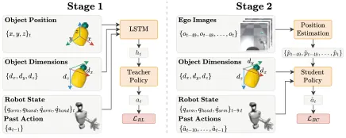
무슨 문제인가
던진 물체를 손으로 받으려면 계속 바뀌는 noisy 시각 추정에 맞춰 팔과 손가락을 짧은 시간 안에 고쳐 움직여야 함. 기존 연구는 물체별로 dynamics를 맞추거나, motion capture를 쓰거나, sandbag·공처럼 잘 튀지 않는 단순한 물체로 과제를 줄여서 풀었음. humanoid 팔은 산업용 manipulator보다 torque 한계가 낮아서(G1 손목은 5 N·m까지 낮음) 빠른 동작을 하다 하드웨어 한계를 넘기 쉬움. 그래서 egocentric 카메라만으로 처음 보는 다양한 물체를 받으면서 torque 한계를 지키는 sim-to-real 방법은 없었음.
어떻게 푸나
Catch It All!은 먼저 IsaacGym에서 실제 물체 위치를 보는 teacher policy를 PPO로 학습함. 그 다음 DAgger(teacher의 행동을 정답으로 받아 반복해서 따라 배우는 imitation learning)로 student policy를 학습함. student는 proprioception, 물체 3D bounding box 크기, SAM2-Tiny 분할과 stereo depth로 구한 물체 3D 위치의 1초(50 step) 이력을 받으며, 이 위치에는 noise가 섞이고 화면 밖에서는 끊김. 출력은 inverse kinematics로 푸는 팔의 6D pose 변화량과 손의 절대 관절 위치이며, underhand와 overhand policy를 따로 둠. grasp reward는 물체 반지름 추정값으로 손끝에서 물체 표면까지 거리를 근사하고, 가장 먼 손끝이 가까워질수록 커지게 설계함. torque clip curriculum은 학습 초기에 torque를 정격 한계에서 자르고 점차 2배까지 풀어 주되, 정격을 넘는 torque에는 계속 penalty를 줌.
결과
- grasp reward ablation(같은 curriculum, 다른 reward 항 고정)에서 Mujoco sim-to-sim underhand 성공률이 제안한 손끝-표면 거리 reward는 81.6%임. 선행 연구의 손안 유지 시간 기반 stability reward는 18.0%, 손바닥-물체 거리만 쓰면 16.2%임. overhand는 제안 reward 22.1%, stability reward 10.2%임.
- torque clip curriculum을 빼면 IsaacGym underhand 성공률은 75.2%로, 넣은 경우 79.5%와 비슷함. 다른 simulator인 Mujoco로 옮기면 뺀 경우 43.8%, 넣은 경우 81.6%로 차이가 벌어지고, 관절 기계적 출력도 더 높음.
- noisy 관측으로 RL만 한 policy와 MPC baseline은 sim-to-sim 성공률이 1% 미만임. DAgger student는 underhand 56.3%, overhand 37.0%임.
- 실로봇에서 학습에 없던 9개 물체(인형, 과자 봉지 같은 변형 물체, 잘 튀는 단단한 물체)를 물체당 4회씩 던짐. 스타일별 36회 중 underhand 38.9%, overhand 36.1%를 받음. 숙련자 teleoperation은 44회 중 3회(6.8%)만 받음.
한계
실로봇 평가는 스타일별 36회이고 성공률도 40% 미만이며, 학습 policy baseline과의 실로봇 비교는 없음. 학습 물체는 단순 primitive 7종이고 회전이 큰 긴 물체에서는 시뮬레이션 성공률이 약 20% 내림. 로봇은 앉은 자세로 고정되어 있어 whole-body 받기는 다루지 않음.
누리랩 연구와의 연결
- dexterous manipulation에서 reward 항 하나가 sim-to-sim 전이 성능을 크게 바꾼다는 통제된 비교임. 다지 손 grasp reward를 설계할 때 비교 기준으로 쓸 수 있음.
- torque 한계 근처에서 동작하는 policy를 curriculum과 penalty로 학습하는 방식은 저출력 humanoid 팔로 동적 조작을 옮길 때 참고가 됨.
오늘의 흐름
- 영상 생성 world model이 depth·분할·점 궤적 같은 기하 출력까지 함께 냄: 미리 학습된 video diffusion 모델에 depth·분할·flow나 3D 점 궤적을 같이 내게 하는 연구가 둘 나옴. 미래 영상만 보던 world model에서 로봇과 물체의 움직임을 수치로 읽을 수 있게 됨. Seeing and Imagining as One, WorldFlow
- world action model(WAM)에서 미래 예측과 행동을 잇는 방식을 따로 다룸: 상상한 미래가 오히려 행동을 망치는 경우를 고치거나, 영상만으로 주는 학습 신호와 action 라벨로 주는 학습 신호의 기여를 나눠 재는 연구가 나옴. 미래를 여러 시점으로 나눠 예측해 행동에 쓰거나, 추론 결과와 행동의 일치를 reward로 매기는 VLA도 나옴. Utility-WAM, WorldBridge, HiFOR, From Reasoning to Action
- 실패를 학습 재료로 씀: 시연 중에 일부러 틀어짐을 만들어 recovery 데이터를 모으거나, 진행이 멈추고 되돌아간 사건을 reward 학습에 씀. 실행 중 성립하지 않게 된 precondition만 골라 다시 계획하는 실행 계층도 나옴. Robotic Data Inoculation, Event2Reward, LOGIV
- policy 구조는 두고 조건 입력이나 예측 대상만 바꿈: 배치할 controller의 짧은 실행 기록을 context로 넣거나, action chunk를 기저 함수 계수로 바꿔 chunk 안팎을 매끄럽게 함. 두 방법 모두 policy는 다시 학습함. 다만 chunk 사이 경계 보정은 추가 학습 없이 추론 때 계산함. Cross-Controller Transfer, Smooth Action Chunking
- 장면 표현에 물리량과 의미를 붙임: scene map의 문·서랍에 동역학 posterior를 달거나, 단일 이미지로 만든 3D Gaussian에 semantic·instance feature를 붙임. 사람 손 영상에서 vertex별 접촉과 힘을 뽑는 연구도 같은 흐름임. PhysVLMM, LucidLyra, TactoHand
해볼 만한 연구
WAM의 예측 영상과 실제 관측 차이로 실패를 미리 찾기
- 질문: WAM이 실행 중에 낸 미래 예측과 실제 관측의 차이가 실패를 사람이 알아채기 전에 알려 주는지 밝힘.
- 첫 실험: RoboTwin 2.0(양팔 조작 시뮬레이션 과제 50개 모음)에서 코드가 공개된 WAM을 돌림. 예측 latent와 실제 관측 latent의 거리, Event2Reward식 진행도 하락 신호의 실패 조기 탐지 성능을 AUROC(탐지 임계값 전 구간의 ROC 곡선 아래 면적)로 비교함.
- 가장 가까운 연구: Utility-WAM은 미래 예측이 행동을 해치는지를 학습용 gate label로만 씀. 실행 중에 실패를 탐지하지는 않음.
일부러 만든 recovery 데이터로 진행도 reward model 학습하기
- 질문: residual policy로 틀어짐을 넣어 모은 궤적이 사람이 표시한 실패 사건만큼 reward model 학습에 쓸모 있는지 밝힘.
- 첫 실험: 같은 과제에서 깨끗한 시연, Data Inoculation 데이터, 사건 라벨이 붙은 실행 기록으로 각각 진행도 모델을 학습함. 실패 프레임 탐지 정확도와 그 reward로 RL fine-tuning한 성공률을 비교함.
- 가장 가까운 연구: Event2Reward는 실행 기록에 사건 라벨을 붙여야 하고, 새 과제마다 사람이 준최적 궤적 5개에 사건을 표시함. Robotic Data Inoculation은 데이터만 모으고 reward 학습에는 쓰지 않음.
precondition 판정을 VLM 대신 물체 단위 3D 표현으로 하기
- 질문: 실행 중 조건이 성립하는지 판정을 GPT-4o 대신 물체 단위 3D 표현으로 하면 국소 복구가 더 정확해지는지 밝힘.
- 첫 실험: BiCoord(양팔 협응 장기 과제 benchmark)에서 LOGIV의 GPT-4o 사실 추출을 3D 기반 판정으로 바꿔 끼움. LucidLyra로 물체 단위로 나눈 3D Gaussian 장면에서 물체 사이 위치 관계를 계산해 조건을 판정하고, 조건 위반 탐지 정밀도와 최종 성공률을 비교함.
- 가장 가까운 연구: LOGIV는 이미지에서 VLM이 사실을 뽑음. LucidLyra는 물체 단위 feature가 붙은 3D 장면을 만들지만 실행 검증에는 쓰지 않음.
꼭 읽을 논문
- Cross-Controller Transfer via In-Context Behavior Adaptation: 배치할 controller의 실행 기록 3개를 context로 넣음. 학습에 없던 controller 종류 6개의 평균 성공률이 단순 데이터 합치기의 17.5%에서 50.3%로 오름.
- Utility-WAM: 상상한 미래 때문에 나빠진 action을 작은 adapter로 보정하고, 이득이 없을 때는 gate가 영상 생성을 건너뛰게 함.
- Robotic Data Inoculation: 실패를 기다리지 않고 시연 중에 틀어짐과 recovery를 짝지어 모으는 실로봇 데이터 수집 방법임.
- Event2Reward: 진행 정체·후퇴·회복 사건을 진행도 대소 관계로 바꿔 dense reward를 학습함. failure detection 신호로도 쓸 수 있음.
- WorldBridge: WAM의 새 과제 성공에서 action 없는 영상과 소수 시연이 각각 얼마나 기여하는지 데이터를 바꿔 가며 잼.
전체 1차 스크리닝 결과 (509편, 점수순) 펼치기
| # | 제목 | 점수 | 🤖 | 분야 | 한 줄 근거 |
|---|---|---|---|---|---|
| 1 | Seeing and Imagining as One: Unified Video Generation and 4D Perception for Embodied World Modeling | 82 | 9 | World Model | 하나의 video DiT로 미래 영상 생성과 depth, embodiment 분할, 2D flow 인지를 통합한 embodied world model임. 다중 로봇과 인간 손 조작 데이터로 학습해 world model 우선 주제에 부합함. |
| 2 | HiFOR: Hierarchical Foresight with Action-Guided World Grounding for Vision-Language-Action Model | 80 | 9 | VLA | VLA에 단기 상태, 의미 milestone, 최종 목표를 함께 예측하는 계층 foresight를 넣고 denoising 중 action에 맞는 미래 정보를 검색함. 시뮬레이션 두 개와 실로봇 6과제에서 검증해 world model과 VLA 결합 주제에 부합함. |
| 3 | WorldFlow: Joint Video and 3D Motion Prediction via Large-Scale Pretraining | 80 | 8 | World Model | 미래 영상과 query 기반 3D 궤적을 하나의 Mixture-of-Transformers로 함께 denoise하는 world model임. 144만 샘플 사전학습과 공간 추론에서 ADE 54.2% 감소로 강한 증거를 보임. |
| 4 | Utility-WAM: Correcting Future-Induced Action Changes | 79 | 10 | World Model | WAM의 미래 조건부 action delta가 정밀 과제에서 최대 54점 성능을 깎는 negative transfer를 진단하고 residual adapter로 교정하며 counterfactual 결과로 영상 생성을 건너뛰는 gate를 둠, 지연 38% 감소와 RoboTwin 93.3%, 실로봇 53/60으로 분석과 방법 모두 설득력 있음. |
| 5 | TactoHand: Learning Geometry-Based Dense Hand-Surface Interaction Fields from Video | 78 | 7 | Tactile | 단안 영상에서 손 표면의 contact, proximity, 3D force 필드를 예측해 촉각 센서 없이 상호작용을 학습함. 미분 가능 physics layer로 force를 제약하고 5천만 프레임 규모로 학습해 manipulation 데이터 활용에 의미가 큼. |
| 6 | Cross-Controller Transfer via In-Context Behavior Adaptation | 77 | 10 | Manipulation | 명령 action과 결과 움직임 예시를 transformer context encoder로 요약해 6종 controller 간 데이터를 충돌 없이 합치는 in-context 적응임, naive pooling 대비 평균 성공률 33퍼센트포인트 상승하고 미지 controller 모드에서도 50% 성공하는 실로봇 결과가 강함. |
| 7 | Robotic Data Inoculation | 76 | 10 | IL | 사람이 teleoperation하는 동안 residual policy가 명령을 교란해 학습된 정책이 저지를 편차 상태를 미리 방문시키는 Data Inoculation임, 사람의 연속 교정이 recovery 데이터가 되는 데이터 수집 관점이 새롭고 실로봇 3개 과제에서 BC·offline RL을 개선함. |
| 8 | Event2Reward: Learning Robotic Rewards from Progress Relations | 74 | 10 | RL | 정체·후퇴·회복이 만드는 구간 내 상대 진행도 관계와 정규화 시간 라벨을 함께 supervision해 reward shaping 진행도를 학습하는 Event2Reward임, LIBERO 40개 과제에서 성공률 18.16퍼센트포인트, 실로봇 30분 학습에서도 sparse reward 대비 크게 향상함. |
| 9 | Smooth Action Chunking Via Movement-Primitive Representations for Imitation Learning | 74 | 9 | Manipulation | action chunk를 movement primitive 기저 함수 조합으로 표현해 policy 구조 변경 없이 chunk 내 jerk를 ACT에서 10배 낮추고, via-point 조건화로 chunk 경계 불연속을 73-84% 제거함, 실제 bimanual ALOHA 검증이 있으나 성공률은 비열세 수준이라 효과는 부드러움에 한정됨 |
| 10 | PhysVLMM: Interaction-Conditioned Physical Belief Maps for Articulated Objects in Robot Scene Maps | 74 | 9 | Scene Graph | scene map의 관절 부품마다 물리 belief를 두고 pull 한 번의 증거를 닮은 부품에 닫힌 형태로 전파하며 위험 수준을 두고 abstain하는 PhysVLMM임, 18개 집 실문·서랍에서 joint type 86%(단일 시점 48%)와 미분 시뮬 대비 오차 41% 감소, 속도 13ms 대 230s로 강함. |
| 11 | LucidLyra: Feed-Forward Generative 3D Scene Reconstruction and Joint Understanding via Multi-Task Distillation | 74 | 7 | 3D Vision | 생성된 3D 장면을 video latent에서 feed-forward로 semantic과 instance까지 질의 가능하게 하는 3DGS 모델임. 비디오 diffusion과 2D foundation model을 증류해 per-scene 최적화 없이 open-vocabulary 분할을 하며 로봇 시뮬레이션 활용을 겨냥함. |
| 12 | From Reasoning to Action: Consequence-Grounded Alignment for Vision-Language-Action Models | 73 | 10 | VLA | ECoT의 movement와 waypoint를 검증 가능한 신호로 쓰고 예측된 미래와의 일치를 보상으로 action noise 분포를 group-relative로 최적화하는 CoRAct임, 추론과 행동의 명시적 정렬이라는 문제 설정이 좋고 RoboCasa·VLABench·실로봇에서 baseline을 앞서나 초록에 수치는 없음. |
| 13 | Catch It All!: Generalizable Dynamic Catching with a Dexterous Hand | 72 | 10 | Manipulation | humanoid가 egocentric 카메라 하나로 변형·탄성이 다른 미지 물체를 underhand/overhand로 받는 sim-to-real 정책임, Unitree G1에서 unseen 9개 물체를 zero-shot으로 잡는 실로봇 결과가 강함. |
| 14 | WorldBridge: Bridging Video and Action for Task Generalization in World Action Models | 72 | 10 | World Model | WAM에서 영상 일반화와 action 일반화를 분리해 OOD 과제 성공이 25.07%에서 action 없는 영상만 추가하면 55.90%로 오르는 것을 보이고 이를 반영한 WorldBridge를 제시함, 분석이 설계 지침이 되고 RoboTwin 2.0 96.23% 등 SOTA이나 비교 대상 범위 내 주장임. |
| 15 | LOGIV: Graph-Verified Execution with Causal Local Repair for Long-Horizon Robot Tasks | 72 | 9 | Failure Recovery | 조건-지지와 자원 순서 edge의 task graph로 실행 중 물리적 유효성을 검사하고 dependency tracing으로 실패 후 복원 대상을 정해 VLA/WAM 위에서 국소 repair함, RoboTwin·BiCoord 성공률 10.67-15.33퍼센트포인트 상승과 실로봇 12/30에서 17/30임. |
| 16 | RFW-A: Agentic Procedural Generation of 400K Articulated Assets over 500 Categories | 72 | 7 | Manipulation | agent가 카테고리별 articulated asset 생성 프로그램을 만들고 절차적으로 40만 개 에셋을 양산함. 에셋당 비용을 낮추고 시뮬레이션 학습 policy가 실제 물체에 zero-shot 전이됨을 보여 manipulation 데이터 확장에 유용함. |
| 17 | TouchBridge: Tactile-Conditioned Human-to-Robot Transfer for Dexterous Manipulation | 71 | 10 | Dexterous | 측정된 접촉 patch로 사람 손과 로봇 손 촉각을 정렬하는 Tac-Retarget와 시각 합성으로 사람 시연만으로 VLA를 fine-tuning함, 4개 과제 평균 72.5%로 teleoperation 77.5%에 근접하면서 수집은 7배 빠르고 DexPilot·UniDex를 크게 앞섬. |
| 18 | Language-Grounded Force/Torque Pretraining for Extrinsic Contact Perception | 71 | 9 | Tactile | 양손 6축 force/torque 이력을 frozen language space에 정렬해 물리 상태 표현으로 pretrain함, 시뮬 감독으로 학습해 실제 접촉·지지 상태 인식과 pretrain에 없던 커넥터 삽입 LoRA 적응까지 보이는 참신한 표현 학습임. |
| 19 | Tracking Task Progress Through Errors and Recovery:A Benchmark and Recurrent Distributional Model | 70 | 9 | Failure Detection | 오류와 회복이 포함된 3,156개 실로봇 에피소드의 프레임 단위 오류 주석 데이터셋 ReSTEP과 recurrent memory·distributional 예측의 REMORA 진행도 추정기를 제안함, 실패·회복 추적이라는 우선 주제에 부합하며 SARM을 앞서나 과제가 2개뿐임. |
| 20 | Ask to Evolve: A Unified Harness for Lifelong Embodied Navigation with Hybrid Action Space and Persistent Memory | 70 | 9 | Navigation | hybrid action space, 능동 질문, 장소에 묶인 persistent spatial memory를 합친 lifelong 항법 harness EvoLife임, 재방문 R2R SPL이 82.23%에서 93.31%로 오르고 다일 실환경 실험이 있으나 8개 benchmark 성능은 상호작용 의존이 큼. |
| 21 | Generating Critic-Guided Synthetic Experience in Latent World Models | 70 | 8 | World Model | frozen latent world model을 local transition generator로 쓰고 Q 1차 근사를 trust region 안에서 올린 action으로 합성 transition을 만들어 offline policy를 개선함, OGBench manipulation 3개에서 상대 7.1% 향상으로 폭은 작으나 compounding error 회피 설계가 타당함 |
| 22 | Coupled Guidance for Flow Matching | 70 | 8 | Manipulation | diffusion guidance를 flow matching에 그대로 옮기면 학습 coupling 분포가 깨진다는 분석에서 Coupled Guidance를 도출함, ManiSkill3 충돌 회피와 Adroit 4개 dexterous 과제에서 추가 비용 없이 안정성을 높여 robot policy 제어에 직접 쓸 만함 |
| 23 | Probing Spatial State Representations in Visual Foundation Models | 70 | 7 | Embodied AI | visual foundation model 10개가 egocentric 스트림에서 공간 구조, 객체 지속성, 예측 갱신, actionability를 지원하는지 frozen probe로 진단함. 장면 readout이 좋아도 객체 지속성과 목표 기반 행동 개선이 보장되지 않는다는 결과가 embodied 표현 연구에 유용함. |
| 24 | L3G-World: Real-Time Infinite World Generation with Latent 3D Gaussian Memory | 70 | 6 | World Model | 각 Gaussian에 VAE latent를 저장한 latent 3D Gaussian memory로 world model의 장기 공간 일관성과 실시간(9 FPS) 생성을 함. 기존 3D memory 대비 primitive 38.6배 감소로 robot memory 관점의 효율적 표현임. |
| 25 | Proving and Improving the Platonic Representation Hypothesis with JEPAs | 70 | 4 | Representation | 서로 다른 modality로 학습한 JEPA가 good view 조건에서 회전 하나 차이로 같은 표현을 배운다는 Platonic Representation Theorem을 증명함. next-token 예측이 bad view JEPA라는 설명과 42배 샘플 효율 결과가 강한 이론과 실증 결합임. |
| 26 | Surrogate Uncertainty for Black-box Visual Grounding | 69 | 8 | Multimodal | black-box VLM의 grounding 불확실성을 외부 surrogate Bayesian 모델로 aleatoric·epistemic 분해하고 conformal prediction·active grounding에 연결함, VLM 자체 신뢰도의 편향을 피하는 formulation이 좋고 Fetch 실로봇 검증이 있음. |
| 27 | Gym-Anything for Robotics: Scaling physical simulations with digital agents | 69 | 8 | Embodied AI | coding agent가 로봇 시뮬레이션과 과제를 만들고 adversarial creation-audit로 검수해 RoboWorld 25개 환경을 구성함, 최고 모델도 test 평균 보상 0.06으로 어려움을 드러내고 privileged teacher·code policy로 pi0.5용 데이터를 만드는 확장성 아이디어가 흥미로움. |
| 28 | JEDI: Joint-Embedding Demonstration Compression for In-Context Imitation Learning | 68 | 9 | IL | 시연을 frozen video-JEPA 공간에서 query 에피소드의 다음 keyframe을 예측하도록 latent slot으로 압축하는 JEDI임, counterfactual로 실행 세부를 보존하고 LIBERO·실로봇에서 many-shot context를 지원하는 in-context IL 관점이 새로움. |
| 29 | EgoContact: Evaluating Physical Intelligence with Egocentric Video | 68 | 8 | Manipulation | egocentric 영상 22.5K 상호작용의 pixel 단위 접촉점 예측으로 manipulation prior를 평가하는 EgoContact 데이터셋임, 기존 방법이 정밀 접촉 예측에 약함을 보이고 affordance 정책 memory bank로 쓰면 실로봇 성공이 16%에서 58%로 오름. |
| 30 | Escaping Path Mirages in Offline Goal-Conditioned Reinforcement Learning | 68 | 7 | RL | stochastic long-horizon offline goal-conditioned RL에서 우연히 성공한 trajectory에 과적합하는 path mirage 문제를 정의하고, 분기점 중심 graph planning(BGP)으로 OGBench에서 SOTA를 능가함, 문제 정식화가 명확하고 manipulation navigation 계열 장기 계획과 연결됨 |
| 31 | Context Compaction for World Models | 68 | 7 | World Model | world model의 재방문 일관성 실패를 context retrieval 문제로 보고 agent harness식 context compaction을 도입함. 재학습 없이 context window의 4배 거리 방을 복원하고 sliding-window보다 낫다는 점이 robot memory와 직결되는 참신한 시각임. |
| 32 | GROME: GROunding Factorized MEmory into Video World Models | 68 | 6 | World Model | video world model의 장기 일관성을 위해 정적 장면과 동적 개체 memory를 분리해 검색하고 training-free로 주입함. 기하 drift를 줄이는 robot memory 관점의 설계가 좋으나 로봇 실험은 없음. |
| 33 | Geometric Time Score Estimators: Bridging Self-Predictive Representations and Generative Occupancy Models For Reinforcement Learning | 68 | 6 | RL | self-predictive 표현과 generative occupancy model을 probability path 위의 density estimator로 잇는 GTSE, goal-conditioned RL의 locomotion·manipulation에서 2-6배 향상을 주장해 로봇 RL에 직접 관련됨 |
| 34 | EmbodiExp: Compositional Experience Transfer for Embodied Agents | 67 | 8 | Embodied AI | 적용 조건·검증 가능한 결과를 갖는 subgoal 경험을 온라인으로 조합하고 실패 궤적에서도 부분 성공을 재활용하는 EmbodiExp임, 경험 memory와 failure utilization 아이디어가 좋으나 초록에 수치가 없어 효과 크기 확인 불가함. |
| 35 | ScheduleGen: Demonstration Generation via Skill Scheduling for Multi-Arm Imitation Learning | 66 | 9 | IL | multi-arm 제약을 고려한 skill scheduling으로 소수 demonstration에서 demo를 자동 생성하는 ScheduleGen임, 28개 변형에서 생성 성공 79.6%, 정책 65.5%와 실로봇 8개 변형 50-80%로 bimanual 데이터 병목에 실질적임. |
| 36 | RoboAtom: Large-scale Atomic-Action Supervision for Robot Learning | 66 | 9 | Dataset | 1.45M 궤적에 통일된 atomic-action 주석 6.88M 구간을 붙인 RoboAtom 데이터·bench·annotator임, 계층 실행으로 LIBERO-Long·RoboTwin 성공률이 오르나 데이터 규모 기여가 주이고 방법 novelty는 낮음. |
| 37 | Explore Where It Matters: Targeted Exploration for Efficient Rover Adaptation | 66 | 8 | World Model | reward 가중 예측 손실로 world model을 적응시키고 loss predictor로 오차가 큰 곳을 MPC 탐색에 유도하는 TERRA임, 시뮬레이션에서 5회 내 약 90% 성공과 실제 rover 3-5회 적응을 보여 설계가 실용적이나 rover 한 종류에 한정됨. |
| 38 | PASA-KV: Attacking Action-Facing Visual Routes in World Action Models | 66 | 8 | World Model | WAM의 시각 K/V route 중 action-conditioned readout에 닿는 곳만 취약하다는 점을 밝히고 Tail-AV로 target을 고르는 PASA-KV 공격을 제안함, 표현 변위 크기와 closed-loop 취약성이 어긋난다는 분석이 새로우나 공격 연구로 방어는 다루지 않음. |
| 39 | Learning Safe Flow Matching Robot Policies from Binary Feasibility Oracles | 66 | 8 | Manipulation | 해석식이 없고 binary feasibility oracle만 있는 제약을 forward 보정과 backward 경계 정보로 flow matching 정책 학습에 반영하는 differentiable safeguard임, 장애물 조작에서 제약 만족 100%를 유지하나 평가 환경이 제한적임. |
| 40 | WorldProbe: When Video World Models Fall Apart under Long-Horizon Spatial Exploration | 66 | 6 | World Model | 에이전트가 카메라 action을 온라인으로 바꿔 장기 탐색 시 video world model의 붕괴를 진단하는 benchmark임. 10개 모델 1600개 rollout로 장거리 memory 약점을 보여 world model 평가에 유용함. |
| 41 | Algebraic World Model: From Exploration to Proofs | 66 | 5 | World Model | 환경 상호작용에서 실행 가능한 Python 가설을 만들고 category theory로 단순화해 Lean 4로 도달 불가능성까지 증명하는 Algebraic World Model임. ARC-AGI-3 183개 레벨 재생과 불가능 레벨 증명 6/6이라는 강한 결과이나 이산 게임 환경 한정임. |
| 42 | Quantize by Doing: Task-Guided Mixed-Precision Quantization of Vision-Language-Action Models | 64 | 9 | VLA | 짧은 closed-loop 평가의 task success로 VLA의 weight/activation bit 폭을 직접 배정하는 QbD-VLA임, 4개 VLA·LIBERO 전체에서 약 4bit 가능하나 pi0.5는 실로봇에서 실패했다고 솔직히 보고함. |
| 43 | Kinematic-Tactile Aligned Dexterous Retargeting with Contact Wrench Space Alignment | 64 | 9 | Dexterous | object-centric contact wrench space로 사람과 로봇 손의 촉각을 정렬하는 3단계 retargeting임, 실로봇 붓기 3조건에서 replay 성공 96.7%와 baseline보다 높은 wrench 충실도를 보이나 replay 수준이며 정책 학습까지 가지 않음. |
| 44 | Is It the Curriculum or Just the Easy Start? Benchmarking Unsupervised Environment Design on Quadrupeds | 63 | 8 | RL | UED, domain randomisation, 로봇 curriculum 14종을 5종 사족 로봇 MuJoCo MJX에서 동일 PPO 조건으로 비교해 쉬운 시작이 상위권을 채우고 in-distribution 승자가 held-out 승자와 다름을 보임, 방법 제안이 아닌 엄밀한 benchmark이며 sim-only이나 legged locomotion 학습에 실용적임 |
| 45 | Learning Event-based Obstacle Avoidance via Differentiable Simulation | 63 | 8 | RL | CUDA 이벤트 시뮬레이터를 미분 가능 물리와 묶어 event frame에서 제어까지 end-to-end 정책을 학습하고 쿼드로터에 zero-shot 이전함, 저조도 장애물 회피 실로봇 검증이 강점이나 정량 비교 수치가 초록에 없음. |
| 46 | Decoding Geometry, Not Tokens: Efficient VLMs for Robot Affordance and Trajectory Prediction | 63 | 8 | Multimodal | 소형 VLM 중간 hidden state에 geometry 회귀 head를 붙여 affordance box와 궤적 waypoint를 토큰 생성 없이 연속값으로 예측함, trajectory 오류 60% 이상 감소와 RoboBrain 근접 성능을 3.8배 처리량으로 얻으나 2D 예측과 두 benchmark에 한정됨. |
| 47 | Teaching a Tree to Recover: Online Distillation of an LLM Supervisor with Counterfactual Replay | 63 | 8 | Failure Recovery | MPC freeze 시 replan·대기·도움 요청 결정을 LLM supervisor에서 decision tree로 online 증류하고 counterfactual replay로 규칙을 필요/불필요/해로움으로 라벨링함, 20개 미지 layout에서 18개 이상 해결하고 test 시 LLM 호출이 없으나 시뮬레이션만임. |
| 48 | OpenFlyV2: An onboard vision-language-action model for aerial perception and navigation | 62 | 9 | VLA | 단일 VLA가 의미 이해·grounding·공간 추론·비행 제어를 Jetson Orin NX에서 10Hz 온보드로 수행하고 sim 데이터만으로 실제 쿼드로터에 zero-shot 이전함, 실환경 성공률 48%로 절대 성능은 낮고 코드는 공개 예정임. |
| 49 | AcrossDEX 1.0: From Human Motion Pretraining to Bimanual Dexterous Manipulation across Hand Embodiments | 62 | 9 | Dexterous | HOT3D 인간 양손 모션 pretrain에서 Inspire와 Allegro 두 손으로 공통 adaptation을 하는 AcrossDEX 시스템임, 직접 회귀가 flow matching보다 높게 나오는 비교가 흥미로우나 뚜렷한 방법 novelty 없이 과제 두 개에서 평가됨. |
| 50 | PhysAg3D: Bridging 3D Generative and Agentic Models for High-Fidelity and Physically-Interactive Assets | 62 | 6 | 3D Vision | 단일 이미지에서 VLM agent가 part, joint, 변형 영역을 추론해 물리적으로 상호작용 가능한 3D 에셋을 만듦. 시뮬레이션용 articulated asset 생성에 쓸 수 있으나 로봇 정책 검증은 없음. |
| 51 | world2vec: Mechanistic world models through latent dynamics learning | 62 | 6 | World Model | 보상 없이 관측·행동만으로 latent dynamics를 학습해 DreamerV3·TD-MPC2보다 파라미터 1/10 이하로 장기 예측을 유지하고 71개 attractor에서 system identification을 보임, world model의 기계적 해석 가능성이라는 문제 설정이 참신하나 로봇 조작 검증은 없음. |
| 52 | AegisFlow: Training-Free Non-Myopic Path-Safe Guided Flow Matching | 62 | 6 | Generative | 훈련 없는 diffusion과 flow matching 가이드를 전역 safety-critical 최적 제어로 보고 time-varying barrier를 HJB 근사로 풀어 경로 안전을 보장함. 근시안 min-norm 제어를 넘어 로봇 계획에 적용한 inference-time guidance 아이디어임. |
| 53 | CrossWeave: Cross-Modal Scene and Instance Retrieval from Sparse 2D-3D Alignment | 62 | 5 | 3D Vision | 희소 2D-3D 패치와 점 대응 supervision만으로 장면 및 인스턴스 검색을 하나의 모델로 학습함. ScanNet과 3RScan에서 단일 모델로 SOTA이고 scene-level 대조 학습이 불필요하다는 주장은 흥미로우나 로봇 실험은 없음. |
| 54 | Structural-Test Geometry as an Inductive Bias for Partially Observable World Models | 62 | 5 | World Model | 부분관측 world model의 latent 거리를 structural test 기반 pseudometric에 정렬(QP)해 held-out 구조 변화에서 planning 성공률이 belief distillation보다 6.4점 높음, 다만 6개 소형 diagnostic task 한정임 |
| 55 | SelfThinker: Self-Evolving Reasoning via Reliability-Verified Intrinsic Visual Thoughts | 62 | 4 | Multimodal | 통합 멀티모달 모델이 자기 생성 visual thought를 PMI로 거르고 self-distillation해 추론 시 이미지 생성 없이 공간 추론을 개선함. 작은 합성 탐색과 navigation 데이터로 7개 benchmark 평균을 52.7에서 64.0으로 올려 인상적임. |
| 56 | Continuous-Action World Models: Learning Cross-Embodiment Spatiotemporal Dynamics Priors | 61 | 9 | World Model | 여러 embodiment와 제어 주파수의 궤적을 shared latent function space로 모으고 world model에서 latent action function을 예측해 임의 시각의 action을 디코딩하는 CoAWM임, 문제 설정은 흥미로우나 초록에 정량 결과가 없어 효과 확인 불가함. |
| 57 | BURGER: Benchmarking and Understanding Robotic Generalization via Embodied Drawing | 61 | 8 | VLA | 언어 조건 로봇 그림 그리기 282개 과제·28,200 시뮬 시연으로 VLA 5종의 데이터 규모·grounding·multimodal 행동을 분석하는 BURGER임, 열린 형태의 유효 해를 갖는 분석 환경이 독특하나 과제가 인위적임. |
| 58 | LLM-guided Planar Loco-Manipulation for Quadruped Robots | 60 | 9 | Navigation | skill·대상 물체·기하 목표를 함께 고르는 LoRA fine-tuned LLM planner와 RL whole-body pushing 정책으로 사족보행 interactive navigation을 수행함, 하드웨어 45회 중 34회 성공이나 합성 데이터 학습이고 구조가 표준적임. |
| 59 | Open-World Object Motion Anticipation via Meta-Learned Semantic Adaptation | 60 | 8 | Navigation | 의미·기하·관계 이력을 쓰는 meta-learned GNN으로 처음 보는 물체가 언제 움직일지 몇 번의 관측으로 예측함, VLM과 class-frequency baseline을 시뮬·실물에서 앞서고 fine-tuning 없이 이전됨. |
| 60 | Tactus: Tactile & Pose Sensing Glove for Natural Dexterity Data Collection | 60 | 8 | Tactile | 촉각 센서와 IMU 융합 자세 추적을 갖춘 textile 장갑 Tactus와 상용 장갑 2종 대비 표준 benchmark를 제시함, 최소 검출력 0.59N로 1.6-2.7배 낮으나 하드웨어·데이터 수집 도구라 방법론 novelty는 제한적임. |
| 61 | ProLoop: Progress-Aware Closed-Loop Framework via Structured State Relations for Long-Horizon Robotic Task Planning | 60 | 8 | Planning | 원하는 상태와 실행 상태의 구조적 관계를 학습 monitor로 평가해 subgoal 진행을 ongoing/deviated/completed로 환산하는 ProLoop임, ALFWorld 성공률 12.94% 상승과 상호작용 32.3% 감소를 보이나 실로봇 근거는 얇음. |
| 62 | Gaussian Distillation of Flow Policies | 60 | 8 | RL | flow policy의 연속 action 분포가 Gaussian으로 잘 근사된다는 관찰로 마지막 층만 Gaussian readout으로 교체해 0.02% 상태로 증류함, 추론 2배 속도와 closed-form likelihood가 실용적이나 초록에 구체 benchmark가 없음. |
| 63 | Cheap Retrieval and Observation Credit Assignment from One Quantity: The Value of Information | 60 | 8 | RL | 정보 가치(value of information) 하나로 retrieval 집합과 관측 credit assignment를 함께 푸는 robot memory 아이디어임. world model로 TD target 하한을 증명했으나 pilot 수준이고 학습된 결과가 거의 없음. |
| 64 | How Much Should a VLA Trust Its Reasoning? Step-Level Guidance as a Measured Action-Value Function | 60 | 6 | VLA | 추론 span 유무 사이 classifier-free guidance 가중치를 step별로 선택하는 문제를 측정된 action value의 MDP로 풀어 reasoning VLA의 신뢰 정도를 조절함, 새로운 관점이나 평가가 자율주행(Alpasim, Waymo)이라 조작 로봇 연결은 간접적임. |
| 65 | FutureWorld: A Plug-and-Play Causal Next-State Predictor for Interactive Video World Exploration | 60 | 5 | World Model | interactive video world model에서 다음 action으로 미래 장면 상태를 예측해 오류 누적을 줄이는 plug-and-play 모듈을 제안함. 네 개 생성기에 붙여 장기 일관성을 보였으나 로봇 조작이 아닌 탐색 영상 생성임. |
| 66 | UMI-Live for In-The-Wild Bimanual Robotics Data Collection | 58 | 9 | IL | 카메라·LiDAR-관성 센싱을 통합해 외부 추적 없이 bimanual 데이터를 수집하는 오픈소스 UMI-Live와 40시간 데이터를 공개함, pi0.5 10/10 성공은 pick-and-place 하나뿐이라 인프라 기여 수준임. |
| 67 | Humanoid Dodgeball: Learning Fast Dynamic Obstacle Avoidance Motions for Humanoids | 58 | 9 | RL | 위협 인식 reward shaping과 방향별 adversarial motion prior로 humanoid가 날아오는 공을 전신으로 피하는 RL임, 하드웨어 실험은 있으나 구성이 기존 RL 기법의 조합이고 초록에 정량 수치가 없음. |
| 68 | Learned Terminal Costs for Short-Horizon Model Predictive Control of Autonomous Trucks in Interactive Highway Traffic | 58 | 7 | Navigation | 짧은 horizon MPC의 terminal cost를 사전학습 RL value로 대체해 자율주행 트럭 고속도로 시뮬레이션에서 충돌 0과 최저 비용을 보임, MPC와 RL의 결합은 타당하나 시뮬레이션만 평가하고 새로움은 중간 수준임 |
| 69 | AtomTree: A Hierarchical Framework for State-Aware Embodied Instruction Following with LLMs | 58 | 7 | Embodied AI | LLM이 현재 symbolic state에서 분해 또는 행동 출력을 결정하는 subgoal tree와 계층적 backtracking replanning을 쓰는 AtomTree임, ALFRED zero-shot 개선이나 prompting 기반 planner의 증분적 개선 성격임. |
| 70 | Kairos: Semantics-Aware Orchestration of Planning Engines across Classical, Numeric, Temporal and Hybrid PDDL | 58 | 7 | Planning | PDDL 과제의 의미를 분석해 5개 계획 엔진을 선택하고 독립 validator로 계획을 검증하는 Kairos임. 1,756개 과제에서 각 suite 최강 planner보다 많이 풀어 로봇 re-planning과 TAMP 실행 계층에 실용적임. |
| 71 | GradSplat: Gradients Inside the Forward Pass for Feed-Forward 3D Gaussian Splatting | 58 | 4 | 3D Vision | feed-forward 3DGS가 forward pass 안에서 학습된 gradient step으로 Gaussian shape를 보정함. 입력 뷰 6~42개에서 정확도가 유지되며 3D 표현 측면에서 참신함. |
| 72 | A Pretrained Model for Bayesian Filtering in Heterogeneous Dynamical Systems | 58 | 4 | LG | 이질적 dynamical system 전반에서 단일 checkpoint로 Bayesian filtering을 수행하고 미지 동역학에 zero-shot으로 적용하는 FilterFM, state estimation foundation model이라는 방향이 흥미롭고 scaling 거동도 보이나 실로봇 검증은 확인 불가 |
| 73 | There Is No Free Lunch in RLVR: Every pass@1 Gain Has a pass@k Price | 58 | 2 | RL | RLVR을 base policy의 exponential tilt로 모델링해 pass@1 상승이 일부 prompt 성공률 하락과 pass@k crossover를 수반함을 증명하고 entropy collapse까지 통합함, 이론 기여가 강하나 LLM reasoning 한정이고 가정이 강함 |
| 74 | Training Foundation Models with a Single Algorithm | 57 | 1 | LG | pretraining, SFT, RL 단계를 모델 생성 분포에 대한 maximum-likelihood 하나로 통합하는 unified training 관점과 시스템 제시, 개념적 통합은 흥미로우나 초록상 정량 근거는 약함 |
| 75 | RAIBO-Wagon: Real-Time Navigation System for a Legged Robot Towing a Wagon | 56 | 8 | Navigation | Conditional flow matching으로 MPPI 초기화를 주고 학습된 forward dynamics로 정제해 wagon 견인 사족보행을 좁은 공간에서 항법함, 40회 실험 85% 성공의 완성도 높은 시스템이나 구성요소가 기존 기법 조합임. |
| 76 | Safe Multi-Objective Reinforcement Learning: Zero Constraint Violation and Primal-Averaging Convergence | 56 | 5 | RL | 학습 전 과정에서 zero constraint violation을 보장하는 safe multi-objective RL로 optimistic reward와 pessimistic cost를 결합해 O(1/sqrt T) gap을 증명, safe RL 이론으로 의미 있으나 tabular 가정이고 실험은 확인 불가 |
| 77 | LatentWeave: Test-Time Latent Optimization for Multimodal Reasoning | 56 | 2 | Multimodal | MLLM의 hidden state를 segment 단위로 test-time 최적화하고 WEAVE token으로 reasoning 구조를 안정화함, test-time optimization 원리는 우선 주제이나 로봇 설정이 아니고 baseline 대비 개선폭 확인 불가 |
| 78 | Self-Supervised Doppler-Guided RF Odometry | 55 | 6 | 3D Vision | RF range-azimuth 프레임 간 대응을 random walk와 cycle consistency로 자기지도 학습하고 Doppler 일관성 손실을 더한 RFWalk임, 동적 장면 ATE를 58% 줄였으나 센서가 특수해 로봇 학습 주제와는 간접적임. |
| 79 | OneScene-Bench: Do Vision-Language Models Integrate Evidence Across Views? | 55 | 5 | Multimodal | VLM이 다중 뷰 증거를 통합하는지 counting, consistency, 공간 추론으로 분리 진단함. 상보적 뷰에서 counting이 크게 떨어진다는 결과가 embodied 다중 시점 인지에 시사점을 줌. |
| 80 | SymAnt: Grounding Long-Horizon Action Anticipation with Adaptable Symbolic Priors | 55 | 5 | Video | 짧은 영상에서 scene graph와 knowledge graph를 joint search해 symbolic prior로 장기 행동 예측을 반복 정제하고 지식 수정으로 예측을 조정하는 SymAnt임, 5개 benchmark의 action anticipation으로 로봇 직접 검증은 없음. |
| 81 | Agent-Wise Test-Time Normalization for Camera-Based Cooperative Perception with Corrupted Collaborators | 55 | 4 | CV | 협력 인지에서 열화된 협력자가 clean ego의 BN 통계를 오염시킴을 보이고 agent별 test-time 정규화로 해결함. 파라미터 없이 AP를 크게 올리고 실패 사례도 보고하나 OPV2V 중심임. |
| 82 | DiFuse: Fusing Native Diffusion Representations for Spatial Reasoning in Unified Multimodal Models | 55 | 4 | Multimodal | 통합 멀티모달 모델의 diffusion branch 중간 표현을 이해 경로에 residual로 주입해 공간 추론을 개선함. 층별 분석이 근거를 주나 이득 폭이 작고 UniWorld 중심임. |
| 83 | DyCraft: An Agentic System for Long-Horizon 4D Scene Generation | 55 | 4 | Embodied AI | 코딩 agent가 3D storyboard로 시작과 끝 상태를 검증하며 긴 애니메이션을 만드는 시스템임. 물리 위반이 줄었다고 보이나 휴머노이드 포함 24과제의 선호도 평가 중심이고 정책 학습과는 무관함. |
| 84 | Look at Where You Think: Localization-Head Alignment for Fine-Grained Perception in Thinking VLMs | 55 | 3 | Multimodal | thinking VLM에서 증거를 고르는 localization head를 찾아 attention 정렬을 보조 loss로 씀. 4B 모델 정확도 74.1%에서 76.6%로 올리고 추론 길이가 20% 줄어 기전 분석이 설득력 있음. |
| 85 | Mage-VL-Cowork: A Full Training Recipe to Learn Hybrid Computer Use From Evolved Harnesses | 55 | 3 | Multimodal | GUI와 코드 실행을 한 policy로 합치는 4B computer-use agent를 5단계 curriculum(midtrain, SFT, RL)으로 학습함. 과제 293,806개 합성으로 OSWorld-Verified 66.0%를 달성한 규모형 레시피이며 로봇 간접 관련만 있음. |
| 86 | MemSteer: Turning User Histories into Supervision for Agent Memory Optimization | 55 | 3 | AI | 라벨 없는 사용자 이력을 증거 기반 QA 감독으로 바꿔 memory 저장, 검색, context 구성을 실패 진단으로 개선하는 MemSteer임. ATM-Bench 질문 점수를 13.4점 올렸으며 에이전트 memory 설계 최적화로서 robot memory에 시사점이 있음. |
| 87 | Compile Away Uncertainty: Self-Evolving Agent Skills via Programmatic Compilation | 55 | 3 | AI | 스킬을 실행 가능성에 따라 분해해 명세가 명확한 연산은 검증된 프로그램으로 컴파일하고 재사용 자산으로 쌓는 SkillCompiler임. 5개 벤치에서 최대 32.33% 향상이며 절차 지식의 결정적 실행이라는 관점이 skill 재사용과 연결됨. |
| 88 | Grounding Multimodal Reasoning with Evidence-Ablated Negatives | 55 | 2 | Multimodal | 시각 증거를 가린 이미지에서 얻은 그럴듯한 오답을 RLVR의 bounded negative로 쓰는 EVAN임, 언어 prior shortcut을 억제하는 아이디어가 명료하고 multimodal reasoning에 일반적이나 로봇 검증은 없음. |
| 89 | Training LLM Agents to Automate LLM Post-Training with RSI-Dojo | 55 | 2 | AI | 논문을 실행 가능한 모델 학습 환경 281개로 자동 변환하고 궤적으로 소형 모델을 fine-tuning한 RSI-Dojo임. PostTrainBench 8.74-16.87점 향상이고 환경 자동 생성 규모가 좋으나 LLM 후학습 자동화 한정임. |
| 90 | Don't Risk It!: Trajectory-Conditioned Distributional Risk for LiDAR-Only Crowd Navigation | 54 | 8 | Navigation | LiDAR occupancy 이력에서 후보 제어열별 최소 clearance의 분포를 예측해 충돌 위험을 평가하는 DRIP임, 보행자 45명 closed-loop에서 충돌·freezing이 줄지만 시뮬레이션이고 수치가 초록에 없음. |
| 91 | Closing the Log Gap: Minimax-Optimal Regret for Episodic RL | 54 | 3 | RL | episodic tabular MDP에서 polylog 인자 없이 sqrt(H^3 S A K) minimax regret을 처음 달성함, 이론 난제를 푼 강한 결과이나 tabular 한정이라 로봇 실용성은 간접적임 |
| 92 | Composing and Steering Diffusion Models with Generalized Feynman-Kac Correctors | 54 | 2 | LG | 여러 pretrained diffusion model의 임의 조합과 reward steering을 Feynman-Kac PDE로 재학습 없이 보정하는 GFKC, 원리는 탄탄하나 Gaussian과 MNIST에서만 검증해 policy 합성 등 로봇 활용은 간접적임 |
| 93 | Don't Lose the Thread: Empowering Long-Horizon LLM Agents with Cognitive Resource Self-Allocation | 53 | 2 | NLP | checkpoint 후 context를 리셋해 필요한 사실만 이어 가는 working memory 관리 CORAL과 multi-episode RL로 장기 agent를 개선함, 8B로 GAIA 42.8%에 입력 토큰 6-7배 감소가 설득력 있고 agent memory 관점에서 로봇과 간접적으로 이어짐. |
| 94 | PRIME W0: Physical Priors from World Models for Embodied Manipulation | 52 | 9 | VLA | VLM KV 주입, 비동기 world-model subgoal 이미지, 공분산 구조 noise의 flow matching을 한꺼번에 얹은 PRIME W0임, 구성요소가 많은 SOTA 주장형 엔지니어링이며 초록에 수치가 없어 증거 강도 확인 불가함. |
| 95 | TaskFrame: Connecting Task-Level Planning with Frame-Level Control for Game Agents | 52 | 4 | Embodied AI | VLM planner가 원자 지시를 만들고 goal embedding을 캐시해 frame 단위 키보드 마우스 controller에 넘기는 계층 구조임. Minecraft 전투 과제 한정이고 baseline 비교가 제한적임. |
| 96 | Kinematic Causal Attribution: Black-Box Explanations of Motion versus Geometry for 4D Point-Cloud Video Models | 52 | 3 | 3D Vision | 4D 포인트 클라우드 모델이 움직임과 형상 중 무엇에 의존하는지 black-box 개입과 Shapley 분해로 가름함. 감사 실험이 설득력 있으나 MSR-Action3D 분류에 한정됨. |
| 97 | COGS: A Diagnostic Benchmark for Attribute-Aware Object-Level 3D Gaussian Splatting Perception | 52 | 3 | 3D Vision | 3DGS 속성별 활용을 진단하는 객체 수준 데이터셋 COGS와 benchmark를 제시함. 속성 부분집합이 전체보다 나을 수 있다는 관찰은 유용하나 분류 과제에 한정됨. |
| 98 | Diagnosing the Reference Gap: What Visual Scaffolds Can and Cannot Fix in Multimodal Reasoning | 52 | 3 | Multimodal | MLLM 다단계 추론 실패를 시각 참조 결합 부재(reference gap)로 진단하고 번호 매기기 같은 외부 참조가 최대 25% 정확도를 올림을 보임. 통제된 paired benchmark 설계가 좋으나 training-free 수준임. |
| 99 | Where Do Vision Language Models Fail at 3D Reasoning? | 52 | 3 | Multimodal | VLM이 3D 물체 속성을 복원해도 일관되게 쓰지 못함을 BedBench와 probing으로 보임. 사람 93.3% 대 모델 7.2%의 격차를 보이나 합성 과제이고 분석 위주임. |
| 100 | VideoMemBench: How Well Do MLLMs Remember in Video Conversations? | 52 | 3 | Video | 영상 다중 턴 대화에서 이전 턴 정보를 쓰는 in-context video memory를 episodic과 answer 의존성으로 측정함. 최고 모델이 45.7%에 그쳐 memory 약점을 보이나 benchmark 위주임. |
| 101 | Data-driven Random-feature Approximation of Koopman Generators of Nonlinear Continuous-time Systems | 52 | 3 | LG | Koopman generator의 gEDMD에서 데이터 기반 random-feature dictionary를 구성하고 수렴 증명과 exponential boundedness 반례를 제시함, 동역학 학습 도구로 가치 있으나 저차원 시스템 중심임 |
| 102 | Certified Behavioral Retention for Continual Adaptation with Held-Out Anchors | 52 | 3 | LG | continual adaptation에서 held-out anchor의 worst-case KL로 업데이트를 인증하는 CABA의 이론 틀이 깔끔함, 실험은 UCI HAR 대리 과제뿐이고 저자도 로봇 성능은 입증하지 않았다고 밝힘. |
| 103 | Prefix Executability: Evaluating Tool-Using Agents Beyond Final Success | 52 | 3 | AI | 도구 호출 궤적의 모든 prefix가 실행 가능한지 측정하는 PEC, FED, Recovery Rate 평가 프로토콜임. 최종 성공과 순위가 어긋난다는 점이 failure diagnosis와 recovery 평가에 참고가 됨. |
| 104 | VeriCUA: Verification as Agentic Exploration for Computer-Using Agents | 52 | 3 | Multimodal | computer-use agent 과제 완료를 GUI 확인과 코드 검사를 골라 증거를 모으는 agentic exploration으로 검증하는 VeriCUA임. 거짓 완료 주장 거부가 강해졌고 보상 검증과 실패 진단에 참고되나 작업 중 보고임. |
| 105 | CAD-WAM: Anticipating Geometry for Text-to-CAD Generation | 52 | 2 | Generative | CAD 생성에서 action 생성에 다음 geometry state 예측을 보조 supervision으로 결합하는 world-action 방식임. next-state 감독으로 Chamfer 거리 13.2% 감소를 보였으나 DeepCAD 한정임. |
| 106 | DTP-OPSD: Reinforcement Learning with Distractor-Aware Temporal-Privilege On-Policy Self-Distillation for Temporal Video Grounding | 52 | 2 | Video | GRPO의 advantage가 모두 0이 되는 어려운 temporal grounding 사례에 privileged teacher 기반 on-policy 자기 증류를 결합함. 학습 신호 소실 문제를 짚은 점이 좋고 추가 예제 300개로 12개 지표가 개선됨. |
| 107 | Routed Continual Learning | 52 | 2 | LG | 경험을 cluster로 나누고 LLM router가 memory system을 고르는 agent continual learning이며 Global ICL 대비 API 비용 65-72% 절감, 다만 텍스트 agent 벤치마크 한정이라 robot memory와는 간접 연결임 |
| 108 | Where to Learn and How Far to Roll Out: Efficient Adaptive Training for GUI Agents | 52 | 2 | RL | 성공 전문가 궤적에서 복원 가능한 체크포인트를 만들고 action disagreement로 pivot을 골라 one-step RL 후 Local/Suffix/Root로 확장함. 환경 상호작용을 56-61% 줄이면서 성능을 올린 점이 장기 과제 RL 효율 관점에서 유용함. |
| 109 | Online Dense Reinforcement Learning with Planning-Grounding Agent for UI Navigation on Live IOS Apps | 52 | 2 | RL | live iOS 앱에서 planning agent와 UI grounding을 분리하고 step-level 보상 PPO와 GiGPPO(유사 상태 이웃 조건 value 추정)를 적용함. 8B 모델이 Android OOD에서 SFT 대비 약 7배이나 GUI 도메인 한정임. |
| 110 | Interventional Training Reduces Causal Bypass in In-Context Introspection | 52 | 1 | NLP | 반사실적으로 교란한 값을 보고하게 훈련하는 interventional training으로 introspection의 causal bypass를 줄임, 8개 LM·수백 introspector로 검증한 causal 관점은 좋으나 로봇과 무관함. |
| 111 | rTaste: Do Research Agents Have Taste? Evaluating Early Stage Research Judgment | 52 | 1 | NLP | 연구 에이전트 6종의 실험 선택 판단(taste)을 MVE 415개로 감사한 평가 연구임. 순위 매기기가 무작위 이상이나 첫 번째 안 선택보다 낫다는 증거는 없다는 정직한 결과지만 로봇과 무관함. |
| 112 | An ODE-based Sampler for Discrete Diffusion Models | 52 | 0 | LG | discrete diffusion에 residual 변수를 추가한 deterministic ODE sampler(ERF)로 marginal 보존을 증명하고 consistency distillation에 활용함, 이론적 기여가 명확하나 응용은 텍스트와 코드 생성임 |
| 113 | Emergence of the transformer architecture as the score of entropic laws of random measures | 52 | 0 | LG Theory | 문장을 토큰의 경험적 측도로 보고 최대 엔트로피 원리에서 마지막 토큰 법칙의 score가 causal attention head가 됨을 유도함. 우아한 이론이나 실험이 없고 새 설계 지침으로 이어지는지 불분명함. |
| 114 | Reaction precedents extend retrosynthetic prediction beyond training coverage | 52 | 0 | LG | 추론 시 반응 선례 검색만 확장해 재합성 예측이 학습 범위를 넘게 함. 제외된 변환에서 Top-1이 13.0%에서 58.0%로 오르는 강한 결과이나 화학 도메인임. |
| 115 | End-to-End Guarantees for Masked Diffusion Models under Conditional Mixing | 51 | 0 | LG | masked diffusion model의 학습된 denoiser에 대해 conditional mixing 하에서 시퀀스 길이와 무관한 샘플 복잡도와 minimax 최적성, end-to-end KL 보장을 증명함, 강한 이론이나 가정 source가 제한적임 |
| 116 | Distilling the Shape of Uncertainty: What On-Policy Distillation Learns and How to Predict It | 51 | 0 | NLP | on-policy distillation이 어디서 분기할지를 학습한다는 것을 entropy shape와 ESC로 보이고 teacher 선택 예측에 쓰며 teacher entropy 개입으로 인과성까지 검증함, 분석이 깔끔하나 로봇과 무관함. |
| 117 | RoboSeed: Multidimensional Evaluation of Vision-Language-Action and World-Action Models: Capability, Resource Affordability, and Research Evidence | 50 | 8 | VLA | VLA·WAM을 capability, 학습·배포 비용, 연구 가치, 재현 증거 5축으로 평가하는 RoboSeed 틀임, 모델 선택에 유용하나 저자도 측정이 불완전해 전체 순위는 내지 못한다고 밝히는 평가 프레임워크임. |
| 118 | Retrieval as Traversal: Value-Indexed Memory for Stateful Long-Context Agents | 50 | 6 | RL | memory를 내용과 주소로 분리해 정보 가치 기반 지역 traversal로 retrieval하는 가설을 제시함. MiniGrid Memory 0.59M 스텝 0.95 반환이나 가장 단순한 고정 기하만 검증해 전체 방법의 증거가 없다고 저자도 인정함. |
| 119 | Robust LIDAR Sensor-to-Sensor Domain Generalization via Accumulated-Point Scene Completion | 50 | 5 | 3D Vision | 누적 스캔 occupancy를 보조 감독으로 써 LiDAR 센서 간 domain generalization을 높임. 추론 비용이 없고 단순하지만 효과가 설정에 따라 달라짐. |
| 120 | AskStream: When and What to Ask Proactively under Uncertainty in Streaming Video Understanding | 50 | 3 | Video | 스트리밍 영상 이해에서 wait/answer에 ask를 더한 능동 질문 benchmark를 제안함. 문제 설정은 새롭지만 benchmark 위주이고 로봇 직접 연결은 약함. |
| 121 | Hierarchical Step Decomposition for Training-free Online Video Step Grounding | 50 | 3 | Video | 스트리밍 영상에서 anchor caption으로 의미 단위를 묶고 step을 sub-step으로 분해해 training-free로 step grounding을 함. 절차 과제 이해에 쓸 만하나 LMM 활용 파이프라인임. |
| 122 | SonoWorld4D: From One Video to a 4D Audio-Visual Scene via Diffusion Synchronization | 50 | 3 | 3D Vision | 단안 영상에서 소리 내는 동적 물체의 궤적과 음장을 포함한 4D 시청각 장면을 생성하는 새 과제임. 문제 설정은 참신하나 사용자 평가 중심이고 로봇 연결은 약함. |
| 123 | Last-Iterate Convergence for Constrained MDPs: From Dual Descent to Primal-Dual | 50 | 3 | RL | constrained MDP에서 coverage 가정 없이 dual descent를 분석하고 inner loop 없는 primal-dual의 last-iterate 수렴을 증명함, safe RL 이론으로 탄탄하나 알고리즘 실험은 확인 불가 |
| 124 | Event-SAMA: Language-Grounded Video Object Segmentation on Neuromorphic Event Streams | 50 | 3 | Video | event camera용 referring video object segmentation의 첫 event-native baseline과 합성 corpus를 제시하고 noise floor 0.47 기준 ablation을 정직하게 보고함, 절대 성능은 MeViS 24.37로 RGB 55.4에 크게 못 미침 |
| 125 | Efficient Agentic Audio-Visual Question Answering through Toolset Pruning and Modality Consolidation | 50 | 3 | Multimodal | audio-visual QA 에이전트의 도구를 omni-modal captioning과 QA 두 개로 줄여 추론 비용을 약 70% 낮추면서 정확도 유지함. 능동 지각 에이전트의 도구 필요성을 단계적 ablation으로 보인 점은 좋으나 새 방법은 아님. |
| 126 | VEvo-Harness: Causally-Guarded Self-Evolving Harness for Agentic Image Generation | 50 | 2 | Multimodal | 이미지 생성 agent에 근본 원인 추적과 counterfactual replay로 스킬 패치를 검증하는 self-evolving harness를 제안함. 개념은 흥미롭지만 이미지 생성에 한정되고 검증 설계가 불분명함. |
| 127 | Wizard: Manipulate Any World in Real Time via Agentic Control | 50 | 2 | World Model | 게임 상태를 명시적으로 유지하는 agent와 skeleton 조건 video 생성으로 실시간 캐릭터 제어를 함. 게임 world model이고 로봇 연결은 약함. |
| 128 | Clean Sheets and Checkpoints: Evidence Complexity for Certifying Sequential Agent Risk | 50 | 2 | LG | milestone 사슬 구조의 위험 평가에서 zero-success 감사가 보증하는 확률 상한과 최소 증거량을 점근적으로 도출한 이론, transport 가정은 검증 불가하며 agent 안전 평가와 간접 연결임 |
| 129 | Neighborhood Elites: Quality-Diversity Search for Uncertainty Quantification in Question Answering | 50 | 2 | NLP | quality-diversity 탐색으로 편집 종류와 지지 명시성 축에 걸친 입력 변형을 만들어 QA 실패 탐지를 개선함. 25쌍 중 24쌍 이상에서 다른 구성기를 앞서 failure detection 관점에서 참고할 만함. |
| 130 | Collaborative AI agents for autonomous experimental research with solid-state quantum spins | 50 | 2 | AI | LLM 에이전트들이 서로 연구를 평가하며 다이아몬드 양자 스핀 실험을 실제로 수행하고 신호 drift를 발견해 프로토콜을 수정함. 자율 실험실 사례로 흥미로우나 단일 사례임. |
| 131 | Unlocking Any-Order Generation in Pretrained Autoregressive Image Models | 50 | 1 | CV | 사전학습된 raster-scan AR 이미지 모델을 future-aware positional embedding과 ordering curriculum으로 any-order 생성기로 바꿈. 추가 연산 13~33%로 inpainting FID 6.21을 얻어 효율적이나 이미지 생성 도메인임. |
| 132 | PathCowork: Learning from real-world pathology practice to build AI copilots | 50 | 1 | Multimodal | 병리의사의 시선과 구술 진단 과정을 supervision으로 써 진단 agent를 학습함. 데이터 수집 패러다임은 새롭지만 병리 도메인이고 로봇과 거리가 있음. |
| 133 | Rethinking GFlowNet Training: Negative Reinforce Dynamics | 50 | 1 | LG | GFlowNet의 full gradient가 sampler의 min-min 동역학이라는 해석에서 Negative Reinforce Dynamics를 도출해 별도 teacher 없이 탐색 효율을 높임, 이론적 통찰은 있으나 표준 벤치마크 한정임 |
| 134 | PIVOT: Progressive Intervention via Online Teacher Correction | 50 | 1 | RL | RLVR에서 전 rollout 실패 시 teacher 교정을 trajectory 단위로 삽입하고 token KL을 병행하는 PIVOT임. 논리 게임 avg@8을 19.5%에서 35.6%로 올린 점은 강하나 LLM 추론 한정임. |
| 135 | Weaken to Strengthen: Weakening-Induced On-Policy Self-Distillation for Large Reasoning Models | 50 | 1 | LG | 양자화나 pruning으로 만든 약한 자기 모델과의 대비를 신호로 삼는 self-distillation WISD임. privileged 정보 없이 HMMT 2025에서 57.7%를 70.5%로 올린 결과는 흥미로우나 추론 LLM 한정이고 메커니즘 설명이 부족함. |
| 136 | Adversarial Self-Distillation | 50 | 0 | NLP | 모델 자신의 안전한 행동을 공격 prefix 공간으로 on-policy 증류하는 방어 기법임. 순응적 시작 이후에도 거부를 회복하는 점이 흥미로우나 LLM 안전성 분야임. |
| 137 | Surprise Alone Learns Lies: Evidence-Gated Continual Learning for LLMs from Streaming Claims | 50 | 0 | NLP | surprise 기반 LLM continual learning이 거짓 claim을 그대로 흡수한다는 문제를 보이고 verifier와 model prior, 증거 라우팅을 비교함, 공격자가 우회 가능함을 인정한 정직한 분석이나 소형 모델 3개 한정임 |
| 138 | Rethinking Pre-pretraining | 50 | 0 | LG | synthetic pre-pretraining이 연산 일치 조건에서 자연어 학습을 이기지 못하고 이전 이득이 초기화 방식에 민감함을 보인 부정적 결과 논문임, 엄밀한 재검증이나 로봇과 무관함. |
| 139 | Reasoning or Pattern Exploitation? Mechanistic Insights from RL-Trained Language Models | 50 | 0 | RL | Tic-Tac-Toe에서 GRPO 학습 중 SAE 특징을 추적해 RL이 개념을 추가하지 않고 이미 명시된 정보 의존을 키움을 보임. 추론 능력 과대평가 우려를 제기한 분석이 흥미로우나 소형 장난감 도메인이라 일반화 불확실함. |
| 140 | MoLRSI: A Recursive Self-Improving AI agent for Molecular Discovery | 50 | 0 | AI | 워크플로와 모델 구조를 최적화하고 cross-task memory로 탐색 policy를 개선하는 분자 발견 에이전트임. 항생제 실험 hit rate 15.9% 대 8.7%의 wet-lab 검증이 강점이나 로봇 무관함. |
| 141 | Softmax Routing Dynamics in Mixture-of-Experts Models: Collapse and Recovery | 49 | 0 | LG | MoE softmax routing 쏠림과 회복 시간을 정확한 동역학 분해로 분석하고 router gradient 대조 제거 실험으로 확인함, 이론이 구체적이나 설정이 단순화되어 있음 |
| 142 | Going deep, reaching further: What can Boltzmann machines efficiently represent? | 49 | 0 | LG | Boltzmann machine의 depth와 interaction order에 따른 efficient reach 계층을 증명한 표현력 이론, 엄밀하나 실제 학습 방법과는 거리가 있음 |
| 143 | Preserving Utility in Continual LLM Unlearning via Orthogonal Projections | 49 | 0 | NLP | 이전 forget set의 activation subspace에 직교하게 gradient를 투영해 순차 unlearning 간섭을 1차 근사에서 막는 COP, 저장량이 작고 TOFU와 RWKU에서 효과를 보임, 방법은 명쾌하나 LLM 한정임 |
| 144 | DAWN: Diffusion-based Alignment and unfastening Workflow Network | 48 | 8 | Manipulation | diffusion 정렬 정책, 단계 전환 분류기, 힘 제어 풀기를 잇는 나사 풀기 계층 시스템 DAWN임, Franka 실험이 있으나 특정 과제의 모듈 조합이고 수치가 초록에 없음. |
| 145 | Value Function-Guided MPPI for Hierarchical Planning and Control in Off-Road Autonomous Navigation | 48 | 7 | Navigation | RL controller의 value function을 MPPI 계획의 implicit cost로 쓰고 online policy evaluation으로 분포 이동을 보정하는 구조임, off-road 시뮬레이션에서 단일 MPPI baseline과만 비교해 근거가 약함. |
| 146 | Geometry Matters in Packed 3D Attention | 48 | 2 | CV | 패킹된 3D 토큰에서 axial RoPE로 실제 격자 좌표를 쓰는 local-global attention을 제안함. 통제 실험은 깔끔하나 현미경 영상 중심이라 로봇 관련성 낮음. |
| 147 | RuleForge: Inferring and Instantiating Latent Visual Rules as Executable Programs | 48 | 2 | Multimodal | Bongard 시각 규칙을 이해하고 실행 가능한 scene program으로 생성하는 학습 틀과 10만 문제 benchmark를 제시함. 실행 기반 RL 보상은 흥미롭지만 합성 도메인에 한정됨. |
| 148 | MRC-MMAgent: Reinforcement Learning for Multi-Role Collaboration in Multimodal Tool-Using Agents | 48 | 2 | Multimodal | 풀이, 점검, 이어 풀기 역할을 묶어 전체 궤적을 RL로 최적화하는 멀티모달 tool agent임. 자기 교정 과정을 학습한다는 점은 좋으나 기존 benchmark 개선 중심임. |
| 149 | Fight World Model: Customizable Combat through Visual Interaction Proxies | 48 | 2 | World Model | 실행 가능한 전투 엔진이 상태를 유지하고 video 렌더링은 interaction proxy로 분리하는 게임 world model임. 규칙과 렌더링 분리는 흥미롭지만 게임 한정이고 로봇과 거리가 있음. |
| 150 | Grounding Predictive Reliability through Masked Observability | 48 | 2 | LG | 가려진 context를 바꿔 얻은 cross-context 변동으로 evidential 불확실성의 의미를 고정하는 MORSE, GP benchmark 9개 설정에서 log-variance 오차 최저이고 궤적 예측에도 적용했으나 규모가 작음 |
| 151 | Before the Next Rollout: Diagnosing Skill Utility Shifts from Policy Updates | 48 | 2 | RL | policy 업데이트가 스킬의 한계 효용을 바꾸는 현상을 token 선호 대비 변화와 advantage로 진단함. 추가 rollout 없이 스킬 우선순위를 정해 토큰 소비를 줄이는 아이디어는 참신하나 LLM 에이전트 한정임. |
| 152 | Timbre: Reliability-aware harmonic consensus for label-free multimodal test-time rexinforcement learning | 48 | 2 | Multimodal | VLM의 label-free test-time RL에서 이미지와 텍스트 변환 2x2 격자의 신뢰도 가중 harmonic consensus로 다수결 오류를 줄이는 Timbre임. 18개 설정 중 16-17개에서 TTRV를 앞서나 개선폭은 점진적임. |
| 153 | EnvOS: Auditing Computer-Use Agents When the World Moves On : Phenomenon-Based Task Construction, Certification, and Evidence-Based Evaluation | 48 | 2 | AI | 작업 중 세계가 바뀌는 stale information 상황을 인증된 환경에서 평가하는 EnvOS임. 클리닉 예약에서 값을 다시 보여 주면 0/16에서 15/16으로 오르는 구체적 결과와 채점 검증이 강점이나 계산기 사용 에이전트 한정임. |
| 154 | Distributional Reward Calibration and Budget-Neutral Credit Assignment for Multimodal RLVR | 48 | 2 | RL | GRPO advantage를 sample baselining과 token credit assignment로 나눠 optimal transport와 질량 보존 재가중을 적용하는 TACE임. 이론적 성질은 증명했으나 다중 모달 추론 일부 벤치에서만 최고이고 증분적임. |
| 155 | AB-Attention: Accurate Block Attention for Accelerating Video Diffusion Transformers | 48 | 1 | Generative | video DiT attention을 89~92% 건너뛰며 샘플링으로 dense를 근사하는 training-free 가속임. 최대 2.23배 속도로 효율적이나 영상 생성 가속에 한정됨. |
| 156 | Retrieving from Your Own Mistakes: On-Policy Training of Embedding Models for Multi-Hop Retrieval-Augmented Generation | 48 | 1 | LG | multi-hop 검색 retriever를 자기가 방문한 오류 상태에서 학습하는 on-policy state training임. teacher forcing 대비 분포 이동을 줄이는 DAgger식 아이디어로 같은 원리를 로봇 IL에 연결해 볼 만하나 텍스트 검색 한정임. |
| 157 | Training language models in simulation for psychiatric intake | 48 | 1 | RL | 정신과 intake 대화를 시뮬레이션에서 multi-turn RL로 학습해 정신과 전문의 이중맹검 평가에서 76.7% 쌍에서 우세함. 시뮬레이션 학습의 실사용 전이를 사람 평가로 확인한 설계가 탄탄하나 의료 대화 한정임. |
| 158 | Rennala NSGD: Asynchronous Stochastic Optimization Beyond Euclidean Geometry | 48 | 0 | LG | 임의 norm 공간의 minibatch SGD 고확률 복잡도와 비동기 Rennala NSGD를 분석함. Muon류 optimizer의 이론 근거로 의미 있으나 실험이 약하고 로봇과 무관함. |
| 159 | Representation Complexity Along Learning Trajectories: Trading Width for Precision and Time | 48 | 0 | LG | Kolmogorov n-width로 gradient query feature의 표현 복잡도 하한을 유도해 k-sparse parity에서 표현과 발견 사이 다항 분리를 보이는 학습이론, 이론적으로 깔끔하나 실용 연결 약함 |
| 160 | How to Loop Your Transformer: Loop Scaling, Specialization, and Parallel Inference | 48 | 0 | LG | looped transformer를 1B 규모에서 loop 대상과 횟수, 병렬 추론 측면으로 체계적으로 비교하고 loop별 low-rank adapter와 정규화 수정으로 병렬 구조 성능을 복구함, 철저한 연구이나 LLM 한정임 |
| 161 | SimTO-Robust: Automated Design of Soft Grippers Robust to Grasp Pose and Object Geometry | 47 | 6 | Manipulation | 여러 물체·grasp pose의 접촉력을 집계하는 topology optimization으로 강건한 soft gripper를 설계하고 37개 gripper를 실물 평가함, 실험은 탄탄하나 기구 설계 연구라 학습 주제와 거리 있음. |
| 162 | Why Speculative Decoding Works Better Than Predicted on Sparse MoE Models | 47 | 2 | LG | fine-grained MoE에서 speculative decoding이 예측보다 잘 되는 이유를 routing overlap과 kernel profiling으로 규명하고 IPF 모델로 4% 오차 예측함, 효율 추론 분석으로 VLA 추론 가속과 간접 연결 |
| 163 | Goal-Aware Dynamic Multi-Agent Collaboration for Long-Horizon Tasks | 47 | 2 | AI | 장기 과제에서 검증이 늦게 일어나는 문제를 분석해 실행 그래프와 verification-recovery를 갖춘 multi-agent GAD를 제안함. 장기 계획과 복구 설계는 관련되나 LLM 에이전트 한정이고 정량 결과가 초록에 없음. |
| 164 | Where Position Matters: Profiling-Guided Layer-Wise RoPE Allocation in Transformers | 47 | 1 | LG | layer별 RoPE phase 의존성을 profiling해 고정 예산에서 coverage를 배분하고 작은 모델 profile을 큰 모델에 전이함, from-scratch validation loss 개선이나 downstream 평가는 확인 불가 |
| 165 | Heterogeneous Co-Evolution Learning for Tool-Efficient Search Agents with Zero Labels | 47 | 1 | NLP | 무라벨 질문에서 proposer와 solver가 co-evolve하며 tool-aware reward로 검색 횟수를 줄이는 search agent 학습, QA benchmark 7개 개선이고 구성 요소가 기존 기법의 조합임 |
| 166 | Incentivizing Self-Learning in Large Language Models via Reinforcement Learning | 47 | 1 | NLP | 교재를 탐색·학습해 증명을 만드는 self-learning을 RL로 유도해 증명 정확도를 51.5%에서 79.5%로 올림, 효과는 크나 수학 교재 과제 한정이고 로봇과 무관함. |
| 167 | Learning to Reason from Reference Samples Alone: Reinforced Adversarial Learning for Modern LLM Post-Training | 47 | 1 | RL | co-train된 LLM judge가 참조 답안만으로 보상을 만드는 Reinforced Adversarial Learning을 제안함. 검증 가능 과제 3종에서 RLVR에 근접함을 보였으나 과학 초록 생성 평가는 주관적이고 judge 의존이 큼. |
| 168 | Mode Dynamics: A Framework for Neural Network Learning | 47 | 0 | LG | 학습 중 파라미터 이동을 collective mode로 분해해 출력 변화와 연결하는 Mode Dynamics, 소수 mode로 행동이 복원됨을 보이나 CIFAR-100 autoencoding과 Pythia-70M 수준 검증임 |
| 169 | Your LR Schedule May Not Be Principled: Effective Learning Rate Scheduling in Weight-Normalized Training | 47 | 0 | LG | weight normalization의 이득이 effective learning rate 궤적에서 오며 ELR 목표로 1/sqrt(t) 기반 AIR 스케줄을 제안해 128B token MoE에서 cosine보다 loss 0.01 낮춤, 통찰은 좋으나 개선폭이 작음 |
| 170 | Cord: Confidence-Anchored Order Residual Decoding for Masked Diffusion Language Models | 47 | 0 | NLP | confidence 디코딩을 기준으로 두고 rollout당 저차원 계수 하나로 reveal 순서를 조정하는 Cord임, 평균 성공률 32.0%에서 48.2%로 오르고 파라미터 0.53M에 불과하나 dLLM 한정이고 로봇과 무관함. |
| 171 | Advancing Clinical Genomic Analysis with a Skill-Centred Agent | 47 | 0 | AI | 실행 가능한 스킬 105개를 검색과 의존성 조율로 조합하는 임상 유전체 에이전트 ClinGeX임. 전문가 45명 사용자 연구에서 일치율이 높았으나 의료 응용이며 방법 새로움은 제한적임. |
| 172 | Reinforcement learning for control of partial differential equations | 46 | 3 | RL | PDE 제어를 위한 model-free, model-based, multi-agent RL을 정리한 review로 카오스 안정화와 flow control 예시를 곁들임, 새 방법이 없고 로봇 연결은 약함 |
| 173 | LinQuant: Functional Invariances for Low-Precision Linear Recurrences | 46 | 1 | LG | 선형 recurrence의 prefill 양자화를 위해 회전과 대각 rescaling 등 7개 functional invariance를 도출해 Mamba-2에서 같은 지연시간에 perplexity를 개선함, 효율 추론 기법이나 LLM 한정임 |
| 174 | Closed Gates Leak: Decomposing Adjacent-Layer Cancellation in Gated Language Models | 46 | 0 | LG | gated MLP의 인접 layer cancellation이 선택적 거부가 아니라 닫힌 gate의 음수 누설로 인한 contraction임을 분해 실험과 gate 활성 수정으로 보임, 해석 가능성 분석으로 설득력 있으나 로봇 무관 |
| 175 | Implicit Bias of (Stochastic) Gradient Descent on Deep Linear Diagonal Networks | 46 | 0 | LG | deep linear diagonal network에서 SGD를 perturbed mirror descent로 보아 implicit bias와 weighted l1 최소화 관계를 규명한 이론, 모델이 단순해 실제 신경망 일반화는 제한적임 |
| 176 | Latent Prediction Yields Cross-Subject Alignable Representations in Sensory-Evoked fMRI | 46 | 0 | LG | fMRI에 JEPA를 적용해 뇌 데이터만으로 학습하고 피험자 간 비지도 정렬로 captioning과 reconstruction을 전이함, 아이디어는 참신하나 로봇과 무관함 |
| 177 | Judged in Company: In-Context Batching Makes LLM Verdicts Depend on Other Items | 46 | 0 | NLP | 한 프롬프트에 항목을 묶어 평가하면 판정의 11-22%가 다른 항목에 따라 바뀜을 order·slot·membership으로 분해해 보인 분석임, LLM judge 사용자에게 실용적이나 로봇과 무관함. |
| 178 | PriorMaskMap: Robust Online Vectorized Map Construction with Biased Priors | 45 | 4 | 3D Vision | 편향된 prior map의 신뢰도를 추정해 자율주행 벡터 지도 구성에 반영함. 실용적이나 모듈 추가형이고 nuScenes 한정임. |
| 179 | DEQ-Stereo: Deep Euilibrium Video Stereo Matching via Adaptive Convergence | 45 | 4 | 3D Vision | video stereo matching을 DEQ 고정점 문제로 바꿔 수렴 시 조기 종료하고 이전 프레임 상태로 warm-start함. 속도와 정확도 균형이 좋으나 방법 변경 폭이 중간임. |
| 180 | ACD-GS: Asymmetric Curvature-aware Densification for 3D Gaussian Splatting | 45 | 3 | 3D Vision | 2차 depth 반응으로 3DGS densification을 제어해 Gaussian 수를 약 60% 줄임. 압축 효과는 실용적이나 heuristic 개선 수준임. |
| 181 | MLLM-GS: Multimodal Large Language Model Prior-Guided Fast Novel View Synthesis in Extreme Environments | 45 | 3 | 3D Vision | 열화된 장면에서 MLLM prior로 view를 보정하고 3DGS 연산을 최적화해 NVS를 빠르게 함. 극한 환경 대응은 실용적이나 구성이 조합형임. |
| 182 | Video Generation Meets Agent Harness: Agentic Video Generation, Agentic World Modeling and Recursive Self-Improvement | 45 | 3 | World Model | video 생성 agent harness와 agentic world modeling, 재귀적 자기 개선을 정리한 서베이 성격의 글임. 방향 제시는 유용하나 실험 증거가 없음. |
| 183 | A Unified Benchmark for Aerial-Enhanced Autonomous Driving: The KITScenes Aerial Dataset | 45 | 3 | 3D Vision | 항공 영상으로 자율주행 HD 맵과 cross-view localization을 통합 평가하는 데이터셋임. 53 클래스 mAP가 두 배 넘게 오르나 데이터 구축 중심임. |
| 184 | Observability-Aligned Evidential Masked Pretraining for Reliable VRU Motion Prediction | 45 | 3 | LG | 관측 가능성에 맞춰 evidential 증거를 정렬하는 마스크 사전학습 eCoMAE로 보행자 의도 OOD 정확도를 0.7971에서 0.8068로 올림, 개선폭이 작고 자율주행 보행자 예측 한정임 |
| 185 | Efficient Learning of Mechanism Designs and Compositionality | 45 | 3 | LG | 평면 메커니즘을 Assur 모듈과 경계 인터페이스로 표현해 데이터 효율을 기하평균 1.8배 높임. 기구학 구조 유도 표현이라 관련은 있으나 평면 합성 메커니즘 한정임. |
| 186 | Edited Endpoints as Partial Goals for Image-to-Video Generation | 45 | 2 | Video | 편집된 endpoint를 전체 프레임이 아닌 편집 관련 영역에만 조건으로 거는 partial goal 방식을 제안함. 시간적 artifact가 줄지만 분석 위주이고 생성 도메인에 한정됨. |
| 187 | PhysCount: Do MLLMs Count Visual Appearances or Physical Entities? | 45 | 2 | Multimodal | 반사와 유리 때문에 한 물체가 여러 번 보이는 상황에서 MLLM이 외관과 실체를 구분하는지 40개 모델로 평가함. 최강 모델도 전 문항 정답 그룹이 13.36%라는 진단은 유용하나 benchmark 위주임. |
| 188 | What Does "Now" Mean to Your Computer-Use Agent? Stale Screenshots, Page Loads, and Which Check to Run Before a Click | 45 | 2 | Multimodal | computer-use agent의 stale click 위험이 계획 시간보다 페이지 로딩에 있음을 31개 페이지에서 측정함. 첫 1초 17% 대 로딩 완료 0.4%의 구체적 측정과 픽셀 비교 검증이 실용적이나 응용 범위가 좁음. |
| 189 | PAPERBENCHX: Can AI Reproduce Science Across Disciplines? | 45 | 2 | AI | 로봇학 포함 12개 분야 논문 재현 과제 93개를 에이전트가 처음부터 재실행해 평가함. 최고 구성도 완전 재현 14%에 그쳐 격차를 보였으나 벤치마크 기여임. |
| 190 | Long-Term Agent Memory through Complementary Curation and Consolidation | 45 | 2 | AI | episodic memory와 구조적 관계 memory를 결합하고 consolidation을 두는 하이브리드 구조임. LoCoMo 90.2%, LongMemEval-S 85.5%이나 초록상 설계 새로움이 작음. |
| 191 | Youtu-Parsing-Omni: One Encoder, One Schema, All Modalities | 45 | 1 | Multimodal | 문서, 이미지, 오디오, 영상을 한 encoder와 한 schema로 파싱하는 5B 모델임. 파싱 benchmark 성능은 높으나 통합 엔지니어링 성격이고 로봇과 거리가 있음. |
| 192 | Telling Is Not Seeing: Textual Personas Rarely Make Vision-Language Models Answer Like the People They Describe | 45 | 1 | Multimodal | 텍스트 persona가 VLM의 시각 응답을 실제 사람처럼 바꾸지 못함을 14개 모델로 보임. 흥미로운 negative result이나 분석 위주임. |
| 193 | AutoHebb: Self-Modifying Neural Networks that Zero-Shot Infer and Continually Learn | 45 | 1 | LG | meta-learning으로 고정 가중치를 찾고 3-factor Hebbian 규칙으로 online 학습하는 AutoHebb을 제안함, 생물학적 영감의 zero-shot·continual 학습 연구이나 장난감 과제 위주라 로봇 연결 약함. |
| 194 | Every Token Needs Its Own Teacher: Multi-teacher Adaptive On-policy Self-distillation | 45 | 1 | NLP | on-policy self-distillation에서 토큰마다 다른 teacher를 고르는 MTA-OPSD를 제안함. 파일럿 분석은 설득력 있으나 수학 추론 Qwen3 실험 한정이고 이득이 기본 모델 대비 최대 5.9임. |
| 195 | Agentic AI Reasoning and Learned Sampling for Task-Aware Projection Selection in Sparse-View CT: Predicting Hemodynamics | 45 | 1 | LG | sparse-view CT에서 혈류역학 예측에 맞춘 projection 선택을 Gumbel-Softmax, soft top-K, agentic selector로 비교함. task-optimal 획득이 재구성 최적과 다르다는 점은 능동 센싱 관점에서 흥미로우나 합성 데이터 한정임. |
| 196 | Reward-Adaptive Co-Evolution of Policy and Rubric | 45 | 1 | RL | rubric 보상 RL에서 rollout 그룹별 신호 라우팅과 이벤트 기반 phase 전환으로 policy와 rubric을 공진화시키는 RACE임. 8개 과제 모두 고정 교대 기준선을 앞서나 LLM 개방형 RL 한정임. |
| 197 | Locating and Closing Information Gaps in Multi-Agent Systems | 45 | 1 | AI | multi-agent 워크플로에서 정보 격차를 찾아 edge를 추가하고 과정 특징으로 채택 여부를 고르는 SPLICE임. Web 도구 사용 8.0% 향상이며 오류 수정 선택 아이디어는 흥미로우나 LLM 워크플로 한정임. |
| 198 | More Rules, Longer Lists? Benchmarking Self-Evolving Agents on a Hidden-Rule Curriculum | 45 | 1 | AI | 숨겨진 규칙 curriculum으로 self-evolving 에이전트가 규칙을 배우는지 CLR-Bench로 평가함. 6개 방법이 원본 이력 보관보다 못하다는 부정적 결과가 유용하나 벤치마크 기여임. |
| 199 | ROAD: Modern Adversarial Training for Simple One-Step Distillation at Scale | 45 | 0 | Generative | 단일 adversarial 목적과 Jacobian R1로 SDXL, SD3.5-M을 1-step 증류해 teacher보다 낮은 FID를 얻음. 학습 단순화는 좋으나 이미지 생성 효율 연구임. |
| 200 | sDMD: Sinkhorn Distribution Matching Distillation | 45 | 0 | Generative | DMD를 Wasserstein gradient flow로 해석하고 Sinkhorn 보정을 outlier에만 적용함. 이론적 연결은 좋으나 이미지와 영상 증류 개선에 한정됨. |
| 201 | Skillful and realistic precipitation forecasting with reinforced diffusion | 45 | 0 | Generative | 이산 diffusion을 RL로 정제해 강수 예측의 정확도와 구조 현실성을 함께 높임. 방법은 흥미롭지만 기상 도메인 응용임. |
| 202 | Loss is Not Behavior: A Unified Output-Space Analysis of Gradient-Based Machine Unlearning | 45 | 0 | LG | gradient 기반 unlearning의 output-space gap을 선형회귀 closed-form과 leverage matrix로 통합 분석한 이론 작업이나 로봇과 무관하고 비선형 확장은 근사에 의존함 |
| 203 | Learning to Bound: Monotonic, Calibrated Neural Upper Bounds for MPE Inference | 45 | 0 | LG | MPE 추론의 branch-and-bound용 상한을 신경망으로 상각 학습하고 calibration으로 admissibility, 구조 제약으로 monotonicity를 보장함, 아이디어는 설득력 있으나 PGM 한정임 |
| 204 | SCARL: Sequence Confidence-Aligned Reinforcement Learning | 45 | 0 | RL | RLVR에서 advantage를 sequence confidence 정렬 gap으로 재조정하는 SCARL, Qwen3-4B에서 Pass@32 2.4점 향상이며 구성 단순하고 개선폭이 작음 |
| 205 | Rural Readiness: Domain Generalization with Adversarially Chosen Domains | 45 | 0 | LG | adversarially chosen domain에 대한 domain generalization의 sample complexity를 Omega(dk)에서 O(d)로 줄이는 완화 조건을 증명한 학습이론, 실험 없음 |
| 206 | Automatic Construction of Strong Simple Baselines | 45 | 0 | LG | LLM으로 단순 baseline을 자동 구성해 과학 논문 36개 과제에서 DL 모델과의 격차 중앙값 95.5%를 회복함, 평가 방법론 관점은 흥미롭지만 로봇과 무관함. |
| 207 | A Low-Rank Space Captures Linear Alignment Between LLM and Human Neural Activity During Naturalistic Language Listening | 45 | 0 | NLP | ridge reduced-rank regression으로 LLM 표현의 뇌 예측 부분공간이 임베딩 차원의 1-3%임을 보임. PCA 방향과 다르다는 분석은 깔끔하나 신경과학 해석 연구라 로봇과 거리 멂. |
| 208 | Improving Fine-Grained Manipulation through Demonstration Expansion and Execution Design | 44 | 8 | VLA | MetaFine 5개 과제에 시연 확장, 카메라·조명 렌더링, IK·gripper 매핑 실행 설계로 사전학습 VLA를 적응시킨 챌린지 보고임, 점수 85.55%는 얻었으나 특정 benchmark 맞춤 engineering임. |
| 209 | CAPTURER: A Dexterous Aerial Manipulator for Dynamic and Precise Grasping across Diverse Environments | 44 | 6 | Manipulation | 공중 manipulator가 1.5m/s 이상 비행에서 지름 1.5cm 펜을 cm 단위로 잡는 시스템 통합임, 인식·계획·외란 억제 제어의 엔지니어링 결과이며 학습 요소가 없음. |
| 210 | Exponential-Nemytskii Neural Operators: Learning Field Evolution Across Step Sizes | 44 | 1 | LG | Duhamel 근사로 step size 의존성을 규정한 neural operator로 관측 간격보다 작은 해상도 예측과 identifiability를 증명, 합성 문제 위주 검증이고 로봇과 무관함 |
| 211 | Achieving Minimax-Optimal First-Order and Best-of-Both-Worlds Regret Simultaneously in Multi-Armed Bandits | 44 | 1 | LG | Tsallis FTRL로 first-order regret의 log 인자를 제거해 O(sqrt(K L*))와 best-of-both-worlds를 동시에 달성한 bandit 이론, 깔끔하나 로봇과 거리가 멂 |
| 212 | Learning Calibrated Confidence for Multi-Agent Collaboration | 44 | 1 | NLP | multi-agent 간 정답 확률을 RL로 보정해 전달하는 MASCAL로 multi-hop QA의 정확도와 calibration을 개선함, 신뢰도 전달 아이디어는 타당하나 웹 QA 한정임 |
| 213 | Uncertainty-aware Feedback Loop Diagnosis: integrating reinforcement learning and conformal prediction for reliable wafer defect classification | 44 | 1 | RL | 웨이퍼 결함 검사에서 RL이 측정 위치를 고르고 conformal prediction으로 중단 시점을 정해 획득 시간을 40% 줄임, 순차 정보 획득이라는 구조는 active perception과 유사하나 제조 검사 한정임 |
| 214 | Dobb: Shard-Local Preconditioning in Block-Diagonal Eigenbases | 44 | 0 | LG | shard 내부에서 block-diagonal eigenbasis로 Muon류 갱신을 계산해 통신을 없앤 optimizer, FSDP 32 H100에서 호출 시간 124.1ms에서 9.2ms로 줄이나 GPT-2 XL까지만 평가함 |
| 215 | CopyLoop: Fast Looped Transformer Decoding via Context Copying and Shallow Screening | 44 | 0 | NLP | looped Transformer에 context-copy 제안과 얕은 깊이 screening을 결합한 training-free 디코딩 CopyLoop임, 속도 2.98-10.70배 향상이 크나 looped 모델이라는 좁은 대상이고 로봇과 무관함. |
| 216 | Latent Path Exploration via Potential-Guided Subtrajectory Balance | 44 | 0 | NLP | relative answer potential과 Subtrajectory Balance로 continuous latent reasoning의 확률적 탐색을 학습하는 SubLAT임, 산술·연역 과제 한정이고 로봇과 무관함. |
| 217 | Multi-View Latent MoE: Letting Every Router Shape Expert Computation | 44 | 0 | LG | 다중 router로 expert 선택을 개선하고 라우팅 선호를 expert 입력 혼합에 재사용하는 MoE임. 10B-A1B 규모에서 9개 과제 평균 1.18 포인트 상승에 그쳐 증분적이며 로봇 무관함. |
| 218 | Reinforcement Learning for the Game of Balatro: A Fast Simulator and Two-Policy Training Approach | 43 | 1 | RL | Balatro용 Rust 시뮬레이터와 tactical·shop 2-policy PPO 분해로 첫 blind 클리어율 99% 이상, 평균 ante 3/8에 그침, 게임 RL 사례로 장기 계획 한계가 남아 있음 |
| 219 | Strongly Adaptive Online Learning Achieves Uniform Discounted Regret | 43 | 1 | LG | strongly adaptive regret이 discounted regret을 구간 regret의 볼록결합으로 분해해 모든 discount factor에서 uniform 보장을 준다는 깔끔한 이론이나 실험 없음 |
| 220 | H$^2$R: Hierarchical Hint-Based Reward for Mathematical Reasoning via Reinforcement Learning | 43 | 1 | NLP | 수학 문제의 하위 질문 구조를 계층 hint reward로 쓰는 H2R과 HiMath benchmark, Qwen2.5-Math-7B에서 30.4%에서 39.1%로 향상, reward 설계 아이디어는 일반적이나 수학 도메인 한정임 |
| 221 | Pre-Crime for Agents, at the Last Second: Probing When a Recruited Agent Gives In | 43 | 1 | AI | 에이전트가 비밀을 누설하기 직전을 활성화 linear probe로 82% 잡아냄(5% 오경보 기준). BoW도 비슷해 이득 대부분이 라벨 학습에서 나온다는 정직한 분석이나 단거리 경고이며 로봇 무관함. |
| 222 | A Unified Hessian-Guided Framework for Post-Training Quantization | 43 | 0 | LG | 양자화 범위, 변환, 반올림을 Hessian 기반 Fisher 근사 목적으로 통합 최적화하는 PTQ 프레임워크, 기존 방법 대비 일관된 개선이나 압축 기법의 점진적 개선임 |
| 223 | Controlling Continuum Robot Shape in Enclosed Space with Embedded Sensing using IMU and Actuator Feedback | 42 | 5 | Control | IMU와 actuator feedback으로 continuum robot 형상을 신경망으로 400Hz 복원해 닫힌 루프 제어함, 5,000개 이상 모델의 설계 비교는 꼼꼼하나 특수 하드웨어 연구임. |
| 224 | Can Image Agents Complete Visual Commissions? A Benchmark and Modular Framework | 42 | 1 | Multimodal | 이미지 agent의 end-to-end 제작 과제 benchmark와 모듈형 reference agent를 제시함. 로봇과 무관하며 workflow 엔지니어링 성격임. |
| 225 | EditAgent: Rethinking Agentic Image Editing | 42 | 1 | Multimodal | 편집 agent의 action과 observation 공간을 넓히고 verification record로 VLM judge를 개선함. 이미지 편집 agent 엔지니어링이 중심임. |
| 226 | Contextual Embeddings Beyond the Gold Chunk | 42 | 1 | NLP | query-aware 압축 모델에서 chunk 단위 graded relevance를 distillation해 contextual embedding을 학습하고 새 benchmark 2개를 냄, 검색 분야 SOTA 개선 중심이라 로봇 연결 약함 |
| 227 | From MS/MS evidence to adaptive spectroscopic characterization: Reinforcement learning guided by candidate molecular structures | 42 | 1 | RL | MS/MS 결과 후 추가 측정 종류와 중단 시점을 DQN으로 고르는 adaptive acquisition, 추가 측정 0.227회로 Top-1 80.10%에서 93.78%로 상승, 분광 도메인 한정 응용이나 비용 인지 정보 획득 구조는 active perception과 닮음 |
| 228 | HEDGE: Gated Hypergraph Memory for Scalable Multi-Agent Debate | 42 | 1 | NLP | 토론 trajectory를 hypergraph로 표현하고 학습된 STORE/BACKUP/OMIT 선택을 두는 HEDGE 메모리임, 정확도 5.0점 상승이나 multi-agent debate 한정이고 로봇 memory와는 거리 있음. |
| 229 | Blind Spots: Where Small Language Models Fall Behind Frontier Models on Terminal Tasks | 42 | 1 | NLP | terminal task에서 SLM과 frontier 모델 격차를 solvability·verification·confidence로 분해해 verification 격차가 지속됨을 보임, 분석은 유용하나 에이전트 평가 연구로 로봇과 무관함. |
| 230 | Li$^{2}$SAO: Lifting Light Single-Rollout Asynchronous RL Optimization via Group-Relative Actor-Critic Bootstrapping | 42 | 1 | RL | critic이 미숙한 초기에 group-relative advantage로 부트스트랩한 뒤 single-rollout GAE로 전환하는 비동기 RL임. 초기 학습 지연을 줄이나 LLM 후학습 레시피 수준의 증분 개선임. |
| 231 | Does Scaling Toward AGI Depend on What System-1 Lets System-2 Execute? | 42 | 1 | AI Theory | System-1이 후보 상호작용의 유용성을 예측해 System-2 실행을 거르는 predict-gate-execute-update 루프를 제안함. 유용 상호작용 밀도로 compute 절감을 경계하는 이론은 있으나 실험 증거가 없는 가설 제시임. |
| 232 | DEG: Diffusion-Enhanced GFlowNet for Solving Vehicle Routing Problems | 42 | 1 | LG | GFlowNet의 edge 신호에 diffusion noise 스케줄을 적용해 VRP 탐색을 넓힌 DEG임. 최대 10,000 노드까지 확장하나 조합 최적화 벤치마크 개선이 중심임. |
| 233 | EpiAgent: Epistemic Self-Play for LLM Agents | 42 | 1 | RL | 타인의 사적 정보에 대한 belief 갱신 단계와 행동 계획 단계를 bi-level self-play로 학습하는 EpiAgent임. 불완전 정보 게임 한정이며 belief 추론의 이점이 제한적으로 보임. |
| 234 | The Search for Statistical Indistinguishability Between Real and Fake Images | 42 | 0 | CV | 진짜와 가짜 이미지가 추상화 후에도 구별됨을 여러 데이터셋과 생성 모델로 보임. 경험적 관찰은 흥미롭지만 방법 기여가 없음. |
| 235 | Calibrating Attention-Based Token Pruning for Efficient Multi-Image Synthesis in UMMs | 42 | 0 | Generative | 통합 멀티모달 모델의 다중 이미지 생성에서 attention 기반 token pruning을 보정해 최대 2.09배 가속함. 효율 개선이나 이미지 생성 한정임. |
| 236 | Aligning Medical Vision Language Models at the Capability Boundary with Entropy Adaptive Rubric Grounding | 42 | 0 | Multimodal | 의료 VLM을 counterfactual 경계 선호와 rubric 기반 RL로 정렬함. 의료 benchmark 평균 61.2%이며 로봇과 무관함. |
| 237 | Localizing Concepts in Visual Autoregressive Models | 42 | 0 | Generative | next-scale autoregressive 모델에서 개념이 생기는 layer, scale, 위치를 localize하는 프레임워크임. 해석 가능성 분석이 새롭지만 생성 모델 안전성 용도임. |
| 238 | SHPRR: An Algorithm for Pure Exploration under Constrained Regret | 42 | 0 | LG | Sequential Halving 단계가 진행될수록 regret 비용이 줄어듦을 보이고 regret 예산을 앞쪽에 몰아주는 SHPRR을 제안함, 관찰은 타당하나 BAI 소규모 개선임 |
| 239 | Unlimited OCR Works 2 | 42 | 0 | CV | sparse reference sliding window attention으로 수백 쪽 문서 OCR의 step당 비용을 일정하게 유지하며 7.0배 속도 향상을 얻음, 효율 개선은 분명하나 문서 파싱으로 로봇과 무관함. |
| 240 | The Role of Self-Concept In Language Models | 42 | 0 | NLP | 서술문 SFT만으로 다섯 가지 self-concept를 주입하면 해당 속성 종료에 저항함을 보임. 후계 모델 제작 시 자기 연속으로 만든다는 안전 관찰은 흥미로우나 소형 오픈 모델 한정임. |
| 241 | Planned Restlessness: Delayed Meta Bandits with Budgets | 41 | 1 | LG | 지연 관측과 예산 제약이 있는 meta-bandit을 LP relaxation으로 풀어 O(sqrt N) regret과 근사비 개선을 증명한 순수 이론이며 실험 없고 로봇 연결 약함 |
| 242 | RetroChessBench: A Benchmark for Reconstructing and Proving Chess Histories | 41 | 0 | LG | retrograde chess 12-task benchmark로 frontier LLM의 규칙 기반 추론 실패를 보임, 과제당 2회 시행의 작은 표본이며 web 데이터 부족 가설은 검증되지 않음 |
| 243 | Optimal Contextual Pricing in Non-Stationary Environments | 41 | 0 | LG | 비정상 환경의 contextual pricing에서 multiscale shallow-pricing으로 하한과 로그 인자까지 일치하는 dynamic regret을 증명한 이론, 로봇과 무관함 |
| 244 | Turing LLM Post-Training: Calibrated Distillation and Efficient Dynamic-MoE Execution | 41 | 0 | LG | MoE specialist를 calibrated multi-teacher distillation으로 통합하고 실행 경로를 최적화해 consolidation 시간을 2.86배 줄임, 엔지니어링 비중이 크고 구성 요소별 기여 분리가 약함 |
| 245 | Factorized Representations of Concurrent Temporal Variables in Pretrained Language Models | 41 | 0 | NLP | 사전학습 LM의 hidden state에서 동시 진행되는 두 timer가 근사적으로 분해되어 선형 복호됨을 보이나 출력 인과 효과는 확인되지 않은 해석성 분석임 |
| 246 | Numerical Integration on Bounded Domains via Learned Reflected Diffusions | 41 | 0 | LG | 경계 있는 볼록 영역의 적분을 reflected diffusion proposal로 importance sampling하고 REINFORCE 추정기를 도출함, 방법은 정교하나 응용 범위가 좁고 로봇 무관함 |
| 247 | A Tutorial on Shape Servoing of Deformable Objects-Part I: Fundamentals | 40 | 7 | Manipulation | 변형 물체 deformation Jacobian 기반 shape servoing의 튜토리얼 1부임, 교육 자료라 새 방법이 없고 시뮬 예제 하나로 설명함. |
| 248 | Gaze-Assisted Supervisory Control for Lunar Robotic Arm Teleoperation Under Concurrent Monitoring | 40 | 6 | HRI | 시선으로 목표를 지정하고 확인 후 자율 grasp-and-place를 수행하는 lunar 로봇팔 teleoperation 연구임, 16명 VR 사용자 연구에서 시간이 47.65초에서 18.43초로 줄었으나 정밀 배치는 수동이 우세하고 HRI 평가 중심임. |
| 249 | Information-Driven Collaborative Autonomy for Heterogeneous UAV/UGV Teams | 40 | 5 | Planning | UAV/UGV 팀에 ergodic control, PMB 믿음, 분산 SCvx*-C-ADMM을 결합한 정보 기반 협업 계획임, 정교한 최적화 연구이나 수치 시뮬레이션뿐이고 학습 요소가 없음. |
| 250 | CASE: Concept-Aware Segmentation from Positive and Negative Visual Exemplars | 40 | 2 | CV | 양성과 음성 visual exemplar로 개념을 지정하는 분할 과제와 benchmark를 제시함. 고정 SAM 3이 음성 프롬프트를 못 쓴다는 관찰은 있으나 LoRA 적응은 단순함. |
| 251 | A Novel Approach to Evaluating Evaluation Metrics for Multi-Output Structured Prediction | 40 | 2 | CV | task별 invariant로 multi-output 구조 예측의 평가 지표 신뢰도를 진단하고 augmented loss로 검증함, 평가 방법론 관점은 유용하나 colorization·번역 등 일반 작업 대상이고 근거는 제한적임 |
| 252 | Regional Anchor Routing for Multi-Object Motion Transfer | 40 | 1 | Video | 다중 객체 motion transfer에서 mask 앵커 motion token과 routing loss로 객체별 동작을 할당함. 영상 생성 응용이고 로봇 관련성이 낮음. |
| 253 | PhysInsert: Physically Plausible Object Insertion with Geometric Priors and Bidirectional Object-Scene Interactions | 40 | 1 | Generative | VGGT 기하 stream과 counterfactual 렌더링 쌍으로 물체 삽입의 물리적 일관성을 높임. 이미지 편집 응용이고 로봇과 거리가 있음. |
| 254 | Sparse Fine-Tuning for Parameter-Efficient Adversarial Training | 40 | 1 | CV | adversarial gradient가 소수 Robustness-Critical Parameters에 집중됨을 보이고 약 5% 파라미터만 갱신하는 SAFT로 LoRA 기반 AT보다 robust accuracy를 높임, 관찰은 흥미로우나 방어 benchmark 개선 수준임 |
| 255 | How Specific Do I Need to Be? Effects of User Query Underspecification on Deep Research Agents | 40 | 1 | NLP | 질의 underspecification이 deep research agent의 답과 검색 행동에 미치는 영향을 체계적으로 평가함, 사용자 입력 요청을 못 하는 한계를 지적하나 평가 분석이라 로봇과 간접적임. |
| 256 | KV Cache Quantization for Diffusion Language Models | 40 | 1 | NLP | diffusion LM의 cache reuse 오차를 반영해 TRACE 궤적으로 K cache 정밀도를 층별로 고르는 dLLM-KVQ임, 효율 연구로 좁은 대상이고 로봇과 무관함. |
| 257 | Upcycling Language Models for Multiple Specialized Domains | 40 | 1 | NLP | 도메인 인지 router supervision으로 도메인별 expert만 업데이트하는 DS-Upcycling임, 라우팅 정확도 90-98%이나 LoRA 대비 incremental한 multi-domain 적응임. |
| 258 | Where You Inject Matters: The Trust Region Effect in LLM Agents | 40 | 1 | NLP | indirect prompt injection의 삽입 위치에 따라 에이전트 취약도가 달라지는 trust region effect를 3개 testbed에서 보임. README 위치가 코드 파일보다 2.6배 높다는 관찰은 구체적이나 공격 연구임. |
| 259 | Certified Access: Test-Time Compute on Conservative Physics-Structured AI Memory | 40 | 1 | LG | Hamiltonian 기반 latent dynamics memory에서 test-time compute의 phase-volume 인증을 이론화함. 형식적 분석은 독특하나 해석적 testbed 한정이며 실용 성능 증거가 없음. |
| 260 | Finding Is Not Returning, Returning Is Not Reconstructing: A Multi-Dimensional Evaluation of Agent Social Re-entry | 40 | 1 | AI | 에이전트의 비활성 대화 재진입을 Finding, Returning, Reconstructing으로 분해해 평가함. memory가 재구성 향상으로 이어지지 않는다는 구분은 유익하나 6개 설정의 소규모 평가임. |
| 261 | EvoTeam: Multi-Agent Collaboration via Evolving Teams | 40 | 1 | AI | 팀 조직, 상호작용 규칙, 개별 스킬을 함께 진화시키는 EvoTeam으로 재사용 가능한 팀 라이브러리를 유지함. 4개 벤치 결과이며 기존 multi-agent 진화의 증분임. |
| 262 | Semantic Mismapping in Generalized Category Discovery: Evaluation and Mitigation | 40 | 0 | CV | GCD에서 global Hungarian 매칭이 새 범주 정확도를 최대 25.63점 과대평가함을 밝히고 평가와 손실을 제안함. 평가 결함 지적은 타당하나 로봇과 무관함. |
| 263 | SymKL: A Unified Representation-Space Measure of Signal Degradation | 40 | 0 | LG | INR의 Fisher 정보로 이미지, 음성, 3D에 공통인 열화 측정값 SymKL을 정의함. 아이디어는 깔끔하나 용도가 평가 지표에 한정됨. |
| 264 | FDSML: Formula-Driven Supervised Metric Learning with Parameter-Aware Triplet Loss | 40 | 0 | CV | fractal IFS 파라미터 거리로 triplet을 만드는 합성 사전학습임. 검색 transfer가 오르지만 일반 표현학습의 점진적 개선임. |
| 265 | BRIDGE: Learning Brain-Gut Metabolic Evidence for Alzheimer's Disease Diagnosis | 40 | 0 | CV | 뇌 PET만으로 장 대사 정보를 이식해 알츠하이머를 진단하며 counterfactual 융합 gate를 씀. 의료 응용이고 로봇과 무관함. |
| 266 | Intrinsic Distribution Matching | 40 | 0 | Generative | DMD 증류에 feature 평균과 표준편차 일치 loss를 더함. 이미지 생성 증류의 소폭 개선임. |
| 267 | UniRA: Unified Representation Alignment and Auto-Encoding for Efficient Diffusion Generation | 40 | 0 | Generative | REPA와 RAE를 하나의 목적으로 묶어 DiT 학습 step을 최대 5배 줄임. 이론 근거가 있으나 ImageNet 생성 효율 연구임. |
| 268 | On the Generalization Gap of Streaming Federated Learning with Markovian Data | 40 | 0 | LG | Markov 데이터 스트리밍 federated learning의 일반화 격차를 정보이론적으로 유도함. 통신과 일반화 trade-off 이론이나 로봇과 무관함. |
| 269 | Latent Decision Flow Rewards for Clinical Guideline Reasoning | 40 | 0 | NLP | 임상 가이드라인 decision flow를 controller와 정책 joint RL로 학습함. path 다중성을 고려한 보상 설계가 있으나 의료 추론 도메인 한정임. |
| 270 | Discovery of Diverse and Realistic Financial Tail-Risk Using Generative Flow Networks | 40 | 0 | LG | continuous GFlowNet에 mixture policy와 plausibility 제약을 넣어 금융 tail-risk 시나리오를 다양하게 생성함, 도메인 특화 적용이며 로봇과 무관함 |
| 271 | DWISE: Denoising Workload-Informed Scheduling Engine | 40 | 0 | LG | diffusion LLM serving에서 남은 작업량 기반 스케줄링으로 SGLang 대비 평균 지연을 5.4배 줄임, 시스템 최적화 성격이 강하고 로봇과 무관함 |
| 272 | When to spend privacy: optimal allocation in private learning | 40 | 0 | LG | DP-SGD의 noise 분산 스케줄을 zCDP 제약 하의 최적제어로 정식화하고 PB-AMD 알고리즘과 정상성 보장을 제시함, 이론은 구체적이나 실험 규모가 작음 |
| 273 | Causal-prior-constrained deep learning for rapid-intensification warning of western North Pacific tropical cyclones | 40 | 0 | LG | 관측에서 발견한 causal graph를 prior로 넣어 태풍 급강화 경보 BSS 0.259를 얻음, 기상 도메인 응용이고 causal 발견의 신뢰성 검증은 제한적임 |
| 274 | Bayesian Distribution System State Estimation with Flow Matching | 40 | 0 | LG | 배전망 상태 추정에 flow matching prior와 Kalman형 보정을 결합한 posterior sampling(PoSE)을 제안함, 전력계통 응용으로 IEEE 33-bus 개선폭이 6.7-7.5%에 그치고 로봇 관련성 없음. |
| 275 | The Quine Test: How Much of a Model's Self Survives Its Own Description? | 40 | 0 | NLP | 모델이 쓴 자기 설명이 선호도 프로필을 재현하는지 10개 모델로 검증하는 quine test임, 사전등록과 부정적 결과 보고는 엄밀하나 로봇과 무관함. |
| 276 | Scaling Mathematical Proof Supervision from Structured Textbooks | 40 | 0 | NLP | 교재 2,118권에서 구조 보존 증명 supervision 380K건을 만든 TOME-Math 코퍼스임, 평균 16.7퍼센트포인트 향상이나 데이터 규모 중심이고 로봇과 무관함. |
| 277 | ShallowDefend: Harnessing Shallow Safety Alignment for Multi-Turn Defender | 40 | 0 | NLP | 다중 턴 jailbreak 방어를 위해 평가-결정-응답 순으로 첫 토큰 구간에 안전 결정을 커밋하고 RL로 학습함. shallow alignment를 역이용한 발상은 흥미로우나 안전 정렬 분야 한정임. |
| 278 | Beyond fabrication: Misattributed numbers in papers written by AI research agents | 40 | 0 | NLP | AI 연구 에이전트 논문의 숫자 오귀속을 540개 판정 재분석과 수동 라벨 256건으로 분석하고 결정적 claim-evidence checker를 제안함. 정밀도 90% 이상으로 재현성 관점에서 유익하나 로봇 무관함. |
| 279 | When Should AI Decide, Defer, and Deviate? Responsible Automation for Deceased Donor Kidney Allocation | 40 | 0 | AI | 신장 배분에서 해석 가능한 모델 앙상블이 불확실성이 결정을 못 바꿀 때만 행동하는 Arbitrator를 제안함. 결정 93.5% 해소와 defer 구조는 깔끔하나 의료 정책 도메인 한정임. |
| 280 | AgentDecept: Benchmarking Deceptive Behavior in Tool-Using LLM Agents under Pressure | 40 | 0 | AI | 압력 변형 477개로 도구 사용 에이전트의 보고가 실행과 어긋나는 기만을 평가하는 AgentDecept임. 궤적 증거 기반 라벨링이 장점이나 벤치마크 기여에 그침. |
| 281 | Verifiable LLM-Guided Focal SMT Solving for Quantified Arrays | 40 | 0 | LG | LLM이 focal ground term을 제안하고 SMT solver가 증명을 책임지는 LinguaArray임. SMT-LIB 1015개에서 해결 수를 105-397% 늘렸으나 형식 검증 도메인 특화임. |
| 282 | Non-Zero Radius: The Missing Component of Neural Networks | 40 | 0 | AI Theory | 개념을 반지름이 0이 아닌 구로 표현해 학습 데이터 없이 삼단논법 추론을 하는 SphNN을 제안함. 발상은 독특하나 5쪽 분량의 주장 중심이고 규모 있는 실증이 없음. |
| 283 | From Intent to Improvement: Agentic Dataset Search for Better Model Training | 40 | 0 | AI | 학습 데이터셋 검색을 typed plan과 결정적 operator로 통제하는 AgenticDS임. HuDS-Bench에서 NDCG@10 25.7% 상승이나 정보 검색 도메인 한정임. |
| 284 | Revisiting Over-refusal in Safety-aligned Large Language Models: A Representation and Optimization Perspective | 40 | 0 | NLP | over-refusal을 표현 겹침과 harmful 경사의 저차원 부분공간 정렬로 설명하고 GOAL(gradient 직교화와 contrastive)로 완화함. 분석은 구체적이나 LLM 안전 정렬 한정임. |
| 285 | Efficient Scalable Oversight via Rewinding | 40 | 0 | AI Theory | verifier가 prover를 이전 상태로 rewind하는 rewindable interactive proof 모델을 제시함. 이론적 효율 개선이나 MNIST 예비 실험뿐이며 로봇 무관함. |
| 286 | On the Fundamental Limits of Prefill-Based Decoding Length Prediction | 40 | 0 | LG Theory | prefill 은닉 상태 기반 디코딩 길이 예측의 한계를 정지 확률 과정으로 유도하고 분산 법칙을 제시함. 벤치마크 불안정의 원인을 밝힌 분석이나 추론 스케줄링 한정임. |
| 287 | Ramanujan Challenge Results: AI-Assisted Evaluation Pipeline for Multi-Format Proofs | 40 | 0 | AI | Ramanujan Challenge 제출물을 분석하고 증명 평가 pipeline으로 거짓 양성을 23%에서 6%로 줄임. 공식 해와 개념이 다른 정답 사례는 흥미로우나 수학 평가 도메인임. |
| 288 | When Does Closed-Loop Curriculum Adaptation Help GRPO? An Analysis on Countdown | 39 | 0 | LG | GRPO 학습에서 주기적 probe 정확도로 Gaussian curriculum의 속도와 폭을 조절하는 가벼운 방법이나 Countdown 하나만 평가한 incremental 작업임 |
| 289 | Accuracy is not compatibility: two Evo 2 checkpoints hinge on one FP8 matrix multiplication | 39 | 0 | LG | Evo 2 checkpoint가 H100 FP8 GEMM의 누산 동작에 의존함을 emulator로 밝히고 첫 projection만 모사해 BRCA1 AUROC 0.434에서 0.869로 복구함, 재현성 관점은 좋으나 한 모델군 한정임 |
| 290 | One Vector or Many? Clustered Optimal-Transport Steering under Quantization | 39 | 0 | NLP | clustered optimal-transport steering이 DiM과 평균적으로 동일함을 증명하고 독성 완화 효과를 양자화 하에서 검증함, 통계적 엄밀성은 좋으나 2B 모델 2개 한정임 |
| 291 | The Precision Wall: An Optimizer-Dependent Boundary for Optimization under Power-Law Measurement Spectra | 39 | 0 | LG | power-law 측정에서 Adam이 멈추는 임계 지수를 curvature와 denominator floor로 예측함, 저랭크 matrix sensing 장난감 설정이며 D=2에서는 근사가 실패함 |
| 292 | SONIC-K1: Porting a Universal Humanoid Motion Tracker to a Small Humanoid on a Single GPU | 38 | 7 | Humanoid | SONIC을 Booster K1 소형 humanoid로 이식하고 torque·지연 randomization으로 post-training한 4쪽 기술 보고임, 오픈 가중치는 유용하나 새로운 방법론은 없음. |
| 293 | Inertial Steering and Motion Prediction of Tracked Vehicles on Low-Adherence Surfaces | 38 | 6 | Control | 트레일러 같은 이동 질량의 관성을 이용해 빙판 위 궤도차량을 조향하는 동역학 모델임, 아이디어는 독특하나 학습·embodied AI 주제와 무관한 기구·모델링 연구임. |
| 294 | AI for Science in Space: Orbital Laboratories, Planetary Fieldwork, and Embodied Autonomy | 38 | 4 | Survey | 궤도 실험실과 행성 탐사에서의 AI for science·자율 로봇을 다룬 47쪽 리뷰임, 평가 프레임은 있으나 새 방법과 실험이 없고 embodied learning과의 연결이 간접적임. |
| 295 | LiDAR-SHIELD: A Fully Dockerized Adversarial Robustness Assessment Framework for LiDAR-Based 3D Perception Models | 38 | 3 | 3D Vision | LiDAR 3D 인지 모델의 adversarial 공격을 HTTP endpoint 세 개로 묶은 Docker 평가 틀임. 도구 엔지니어링 기여이고 새 공격이나 분석은 없음. |
| 296 | What do MLLMs know about 'Waldo'? Evaluating Visual Reasoning under Multi-Instance Multi-Object Challenges | 38 | 2 | Multimodal | 같은 범주 인스턴스가 여럿인 장면에서 MLLM의 속성 결합과 counting을 보는 benchmark임. 진단 위주로 방법 기여가 없음. |
| 297 | AVPS-360: A Spatial Audio-Visual Benchmark for Instance Segmentation and Tracking of Sound-Producing Persons | 38 | 2 | Multimodal | 공간 음향과 360도 영상으로 발화 인물을 분할하고 추적하는 benchmark임. 다중 모달 인지 데이터이나 로봇과 거리가 있음. |
| 298 | Formal Specifications with Data-Driven Signal Analysis | 38 | 2 | LG | 구간 연산 정규식, 신호처리 특징, 준지도 학습을 합쳐 아날로그 신호의 이상 동작을 감지함. 전압 조정기 하나로만 평가해 일반성 증거가 약함. |
| 299 | Retaining Repair Hypotheses for Cost-Aware Execution | 38 | 2 | AI | 실행 모델 수정안을 하나로 확정하지 않고 호환되는 repair 가설을 유지해 비용 인식 진단을 함. 합성 장치 24개에서 비용 개선이 2.14%로 작고 결과 해석이 복잡함. |
| 300 | DeCoRL: Decomposed Consistency Reinforcement Learning for Multi-Image Composition | 38 | 1 | CV | 다중 이미지 합성의 객체 단위 consistency 보상을 VLM으로 만들어 RL 후학습함. 이미지 편집 도메인 incremental 작업임. |
| 301 | Cross-Encoder Anchor Refinement for Zero-Shot Anomaly Detection | 38 | 1 | CV | zero-shot 이상 탐지에서 ViT와 CNN encoder를 anchor 단계에서 cross-attention으로 연결함. 13개 데이터셋에서 성능이 좋으나 모듈 추가형임. |
| 302 | It Takes Two to Probe, Thousands to Retrieve: Putting Vision--Language Probes to the Retrieval Test | 38 | 1 | Multimodal | VLM probing benchmark와 실제 retrieval 성능이 무관함을 100개 질의로 보임. 평가 방법론 분석이고 규모가 작음. |
| 303 | HALO: Human-Grounded Granular Evaluation of Proactive Agents | 38 | 1 | NLP | 선제적 agent를 전문가 20명이 주석한 8K 응답으로 평가하는 HALO임, 과도한 선제성이 주요 실패라는 발견이 있으나 텍스트 환경이고 로봇과는 간접적임. |
| 304 | When to Assist and What to Suggest: Joint Gating and Memory-Grounded Hint Generation in One Compact Decoder | 38 | 1 | NLP | 능동 보조의 gating과 memory 기반 힌트 생성을 1B 디코더 하나로 통합함. memory profile 제거 시 exact match가 24.7점 하락한다는 분석은 있으나 대화 비서 한정이고 개선폭이 작음. |
| 305 | DynaRev: Benchmarking Web Agents under Dynamic Goal Revision | 38 | 1 | AI | 웹 에이전트가 실행 중 목표 수정에 적응하는지 181개 과제로 평가하는 DynaRev임. 브라우저 reset의 손실 등 관찰은 있으나 벤치마크 기여임. |
| 306 | A 211K Parameter Foundation Model: Genetic Prompting in Neural Cellular Automata | 38 | 0 | CV | 21만 파라미터 NCA로 의료 분할 과제를 재학습 없이 적응시킴. 경량화 아이디어는 있으나 unseen Dice 60.4%로 성능이 낮고 로봇과 무관함. |
| 307 | STRATA: Reinforcement-driven Active Sampling with Tri-paradigm Adaptation for Efficient 3D Spatial Transcriptomics | 38 | 0 | LG | 3D 공간 전사체 복원에서 RL agent로 측정 spot을 능동 선택함. 의료 도메인 응용이고 로봇 관련성은 없음. |
| 308 | Evaluating Cultural Knowledge Editing in Vision-Language Models | 38 | 0 | Multimodal | VLM의 문화 지식 편집을 평가하는 CulturalBind benchmark임. 텍스트와 시각 지식이 분리된다는 관찰은 있으나 평가 위주임. |
| 309 | TokenRepel: Generating Diverse Image Sets Without Compromising Quality | 38 | 0 | Generative | text-to-image의 샘플 다양성을 token 반발과 밀도 보존으로 높이는 inference-time 기법임. 생성 도메인 incremental임. |
| 310 | PathoJev: Efficient Pathology Decisions from Shared Visual Context | 38 | 0 | Multimodal | 병리 슬라이드를 한 번 인코딩하고 여러 질문을 batch로 평가해 추론을 최대 11.2배 가속함. 효율 설계는 좋으나 병리 도메인 한정임. |
| 311 | Discovering Jailbreaks via Curriculum of Models | 38 | 0 | LG | target 모델을 쉬운 버전에서 원본으로 점진 전환하는 curriculum으로 jailbreak 탐색의 sparse reward를 완화함, 아이디어는 단순하고 다중 behavior에서는 PRBO보다 낮음 |
| 312 | From Local Recovery to Unified Generation: Discovering Triple Set in Knowledge Graphs via Observation-Anchored Latent Diffusion | 38 | 0 | LG | knowledge graph 완성을 latent graph diffusion 생성으로 재정식화해 subgraph 분할의 단편성을 해소함, F_tsp 5.4pp 향상이나 지식그래프 도메인 한정임 |
| 313 | Low-Bit GDN Recurrent-State Quantization: Global Gradient-aware Allocation and Pure-Write Sliding Windows | 38 | 0 | LG | GDN recurrent state의 저비트 양자화를 gradient 민감도 기반 bit 배분과 최근 write 보존 window로 개선함, STEPQuant 대비 큰 향상이나 특정 모델 계열의 압축 기법임 |
| 314 | D-MOD: Diffusion mode estimation for accelerated MRI | 38 | 0 | CV | diffusion prior로 MRI posterior mode를 minorize-maximize로 구해 MMSE 추정 대비 11-73배 빠름, 의료영상 도메인 알고리즘 개선임 |
| 315 | Learning Scientific Trajectories to Predict Future Biomedical Discoveries | 38 | 0 | NLP | 생의학 결론 임베딩의 시간 방향으로 새 가설을 생성하는 ForeSCITE임, 아이디어는 재미있으나 로봇과 무관하고 전문가 평가 중심임. |
| 316 | Implicit Reasoning in Transformers: Bridging the Compositionality Gap in GPT-2-like Models | 38 | 0 | NLP | 두 홉 추론에서 OOD atomic fact를 circuit 위치에 맞춰 제시해 compositionality gap을 닫는 GPT-2 규모 통제 실험임, 장난감 설정이라 일반화 근거가 약함. |
| 317 | Grammar Control for Language Learning with Sequential Monte Carlo and Small Language Models | 38 | 0 | NLP | SMC로 소형 LM의 대화 생성을 목표 문법에 맞추는 grammar control임, 140배 큰 모델을 넘으나 언어 학습 응용이라 로봇과 무관함. |
| 318 | Glance: The Generator Is Its Own Reranker | 38 | 0 | NLP | generator가 공유 prefill에서 passage를 직접 reranking하는 Glance임, 메모리 절감 아이디어는 있으나 평가가 데이터셋 3개와 backbone 1개뿐이고 로봇과 무관함. |
| 319 | How I Aligned Your Model: Scaling Up Multilingual Safety Training with Templates | 38 | 0 | NLP | 템플릿 기반으로 60개 언어 안전성 정렬 코퍼스 MSafeTemp를 만든 데이터 중심 연구임. 번역만으로 못 잡는 현지화 공격 실패를 보인 점은 유용하나 증분적이고 로봇 무관함. |
| 320 | Aligning Autoresearch: Co-Improvement between Agents and Humans | 38 | 0 | AI | autoresearch 에이전트와 인간의 co-improvement를 위해 HackBench와 human simulator RL을 제시함. 방향은 시의적절하나 네 가지 기여가 흩어져 있고 각각의 증거가 얕음. |
| 321 | Letting AI Formulate the Research Question: Autonomous Research Agents | 38 | 0 | AI | 코딩 에이전트가 연구 질문을 직접 만들고 타 모델 리뷰로 논문까지 쓰는 자율 연구 시스템을 5회 실행해 보고함. 모든 실행을 공개한 점은 좋으나 workshop 수준 평가에 그침. |
| 322 | KARMA: Training-Free Knowledge-Atomic Harness Evolution for Industrial Advertising Agents | 38 | 0 | AI | 광고 에이전트의 지식 모듈 6종을 atomic edit과 회귀 게이트로 훈련 없이 진화시키는 KARMA임. 평균 점수를 30.19에서 39.15로 올렸으나 산업 로그 한정임. |
| 323 | Beyond Selected Breakthroughs: Evaluating Language Models on Randomly Sampled Mathematical Conjectures | 38 | 0 | AI | arXiv 추측 200개에 GPT를 적용해 약 60%에서 후보 해답이 나오고 반례가 증명보다 1.3배 많음을 분석함. 전문가 검증이 없는 탐색적 분석임. |
| 324 | FIRME: Registry-Anchored Memory Graphs for Evolving, Heterogeneous Investor Knowledge | 38 | 0 | AI | 별칭 기억을 포함한 registry 기반 memory graph FIRME로 투자자 지식 매칭률을 7.8-12.1 포인트 올림. 금융 도메인 비공개 데이터 중심임. |
| 325 | FARMS: A Verifiable Foundation for Automated Computational Science | 38 | 0 | AI | 수치해석 수학 지식을 Lean으로 검증 가능한 계산 지식으로 바꾸는 FARMS임. 171개 대상 중 157개 수용이나 응용 범위가 좁은 지식 구축 파이프라인임. |
| 326 | BASILISC: Bayesian Alignment of Siamese-Integrated Latents for Inferring Single-cell Correspondence | 37 | 0 | LG | single-cell cross-modal 매칭에 probabilistic siamese network로 correspondence 불확실성을 부여해 불확실한 하위 20% 제거 시 정확도 0.93에서 0.98로 오름, 생물 도메인 한정임 |
| 327 | Interpretable by Design Tabular Prediction via In-Context Local Linear Learning | 37 | 0 | LG | tabular foundation model로 이웃을 찾아 shared와 local linear model을 결합한 interpretable-by-design 예측기, TabICLv2에 1.1pp 뒤지나 해석성을 확보함, 표형 데이터 한정임 |
| 328 | Framework-Conditional Open Materials Generation | 37 | 0 | LG | 결정학적 framework를 고정하고 원소 종류와 부피만 flow matching으로 생성하는 재료 생성 OMatG-FC, SUN rate 개선이나 재료 도메인 한정임 |
| 329 | Decision-Level Error Attribution and Depth-Aware Safety Evaluation of Monocular RGB Human Tracking for Autonomous Robot Navigation | 36 | 5 | Perception | 단안 RGB 사람 추적의 stop/proceed 오류를 Shapley로 규칙과 인식에 귀속시키는 분석임, ETH·UCY 오프라인 판정이며 저자도 충돌 회피 입증이 아니라고 밝힘. |
| 330 | CuBot-STT: Simultaneously Transport and Tighten for Lattice-type Modular Reconfiguration Robot | 36 | 4 | Planning | 격자형 모듈 로봇의 운반·체결 통합 하드웨어와 Q-learning 기반 relocation 비용 잔차 planner임, 기구 설계 중심의 mechatronics 연구라 로봇 학습 관련성이 낮음. |
| 331 | Improving the Intrinsic Interpretability of Differentiable Decision Trees through Euclidean Feature-Concentration Regularisation | 36 | 2 | RL | differentiable decision tree의 노드 feature 집중을 Euclidean 정규화로 높여 해석성을 개선하고 PPO actor에도 적용했으나 RL 증거는 seed 2개 CartPole 등 초기 수준임 |
| 332 | Analyzing Condensation on Patterned Surfaces via Deep Learning | 36 | 1 | CV | SAM3에 hierarchical tiling을 얹어 패턴 표면의 응결 방울을 분할하고 LQDD에서 AP가 thresholding의 0.088에서 0.57로 오름, 응용 도구와 데이터셋 기여이며 로봇 무관함 |
| 333 | Raincheck: Deferred Multimodal Prefill for Efficient Multi-Turn MLLM Inference | 36 | 1 | Multimodal | 초기 prefill에서 버린 multimodal token을 decode 여유 연산으로 나중에 prefill하는 Raincheck임, 효율 아이디어는 있으나 저자 요청으로 withdrawn된 논문이고 로봇과 무관함. |
| 334 | FairSplit: Decomposing the Embedding Space for Fair Classification | 36 | 0 | LG | 임베딩을 Fair Space와 Sensitive Space로 분해하고 HSIC로 demographic parity gap 상한을 증명하나 실험은 기존 benchmark에서 경쟁적 수준에 그침 |
| 335 | FIDE: Fiber-Informed Differentiable Experimental Design for Reference-Relative Law Dynamics | 36 | 0 | LG | 기준 모델 대비 최소 수정량으로 센서 설계를 순위 매기는 FIDE, 정식화는 독특하나 도메인과 실험이 추상적이며 응용 근거 약함 |
| 336 | Don't Just Impute, Detect: Task-Aware Diffusion Pipelines for Edge Anomaly Detection | 36 | 0 | LG | IIoT 센서 결측 구간을 downstream detector 손실에 맞춰 diffusion으로 보정하는 TADR임, SMD에서 F1 0.338 상승이나 PSM 등에서는 효과 없고 산업 이상 탐지로 로봇과 거리 멂. |
| 337 | Tracing the Influence of Retrieved Literature on Scientific Ideation in LLMs | 36 | 0 | NLP | 검색 전략 5종이 LLM 아이디어 다양성에 미치는 영향을 45,000개 아이디어로 분석함, JSD 기반 귀속은 흥미롭지만 로봇과 무관한 실증 분석임. |
| 338 | Tokenizer Tokens Tell Training Tales | 36 | 0 | NLP | BPE tokenizer의 희귀 토큰으로 데이터셋 membership을 추정하는 RTAM-Fusion임, 프라이버시 공격 연구로 로봇과 무관함. |
| 339 | Smartphone Indoor Localization Enhanced by Hierarchical Multi-Sensor Context Recognition | 35 | 3 | Navigation | 스마트폰 PDR에 환경·장면·행동 context 인식으로 heading 제약과 landmark 보정을 얹은 실내 측위, LiDAR-SLAM 기준 비교는 있으나 hand-crafted 보정 규칙 위주 engineering임 |
| 340 | inkGround: Benchmarking Fine-grained Visual Grounding Capabilities of Vision-Language Models for Cursive Handwriting in the Wild | 35 | 2 | Multimodal | 필기 획 궤적 복원을 VLM point grounding으로 평가하는 benchmark임. 정답이 pseudo-label이고 기여가 평가에 한정됨. |
| 341 | LightGenBench: A Benchmark for 3D Emission Generation | 35 | 1 | 3D Vision | 3D 에셋의 표면 발광 예측이라는 새 과제와 3.7만 에셋 benchmark를 제시함. 최고 baseline IoU 0.271로 미해결이나 로봇 관련성은 낮음. |
| 342 | SCOPE: Semantic COdec Pre-Editing for Object-Preserving Compression | 35 | 1 | CV | 기계 비전용 압축 전에 과제 관련 영역을 보호하는 조건부 pre-editor를 제안함. rate-accuracy 개선이 있으나 응용 incremental임. |
| 343 | RADIOlogy: A Single-Pass Approach to Training-Free Zero-Shot Anomaly Detection | 35 | 1 | CV | CLIP attention pooling 특성을 활용한 single-pass training-free 이상 탐지임. 단순하고 효율적이나 이상 탐지 benchmark 개선 수준임. |
| 344 | From Grind to Grasp | 35 | 1 | AI Theory | 작업량 제한 하의 복잡도 형식론으로 grasp와 grind 개념을 정의하고 재귀적 자기개선 기준을 논함. 실험 없는 개념 논의이고 정의의 검증 가능성이 낮음. |
| 345 | LLM-Assisted Optimization for Simulation-Based Redesign | 35 | 1 | LG | 전기차 배터리 재설계에서 LLM warm start, variable fixing, ReAct를 블랙박스 solver와 결합해 시뮬레이터 평가를 80% 줄임. 단일 사례 연구라 일반성이 낮음. |
| 346 | Efficient Covariance-Aware Vicinal Latent Diffusion for Continuous Conditional Image Generation | 35 | 0 | LG | 연속 라벨 조건 latent diffusion을 증류로 4 NFE까지 가속함. 효율 개선 중심이며 로봇과 무관함. |
| 347 | MorphSIG: Subject-Driven Image Generation via Decoupled Anchoring and Feature Transport | 35 | 0 | Generative | subject-driven 생성을 pseudo-video feature transport로 재구성한 training-free 기법임. 이미지 생성 응용이며 개선 폭이 한정됨. |
| 348 | What Survives Label Downsampling? Exact Region Survival for Coarse Segmentation Targets | 35 | 0 | CV | 분할 label 다운샘플링에서 영역 소실을 최소 비용 매칭으로 최소화함. 정확한 보장은 흥미롭지만 영향 범위가 좁음. |
| 349 | Mind The Gap (MTG-AD): Dataset and Fine-grained Evaluation for End-to-End Inline Audio Descriptions | 35 | 0 | Multimodal | 시각 장애인용 inline 음성 해설 데이터셋과 평가 틀을 제시함. 접근성 benchmark이고 로봇과 무관함. |
| 350 | Radiology Guideline-derived Decision Graph for Efficient Clinical Decision Support | 35 | 0 | Multimodal | 방사선 가이드라인을 실행 가능한 decision graph로 컴파일해 정확도를 57.3%에서 90.8%로 올림. 설계는 명쾌하나 의료 도메인에 한정됨. |
| 351 | Difficulty Calibration Across Time for Membership Inference in Diffusion Models | 35 | 0 | Generative | diffusion 모델의 membership inference에서 학습 시점과 diffusion 시점 두 축으로 난이도를 보정함. 프라이버시 공격 연구이고 로봇과 무관함. |
| 352 | ExplainCC: Explaining Correlated Clusters by Node Labels | 35 | 0 | LG | 라벨 트리로 설명 가능한 correlation clustering을 정의하고 근사 난해성과 greedy 알고리즘을 제시함. 이론은 탄탄하나 로봇과 무관함. |
| 353 | The Utility of Physics-Informed Machine Learning in Solar Power Production Forecasting | 35 | 0 | LG | 태양광 발전 예측에서 physics-informed 모델이 순수 data-driven 대비 이득이 없음을 3,713개 설비 데이터로 보인 부정 결과 연구, 엄밀하나 도메인 한정임 |
| 354 | Does System Size Matter in Uncertainty Quantification for Machine Learning Interatomic Potentials? | 35 | 0 | LG | MLIP 불확실성의 mean과 max 집계가 시스템 크기에 따라 달라진다는 경험적 지적이며 size-aware calibration 방법은 제시하지 않음 |
| 355 | Testimony from Timelines: Evidence-Grounded Significance Testing of Temporal Clinical Hypotheses | 35 | 0 | NLP | 백신 이상반응 타임라인 위 시간적 가설을 유의성 검정으로 검증하는 STRATA 벤치마크(8,735개)와 ART 단계 패러다임을 제시함. 의료 도메인 특화 벤치마크이며 로봇 무관함. |
| 356 | SocialArena: Evaluating Social Intelligence in Large Language Models | 35 | 0 | NLP | LLM 사회 지능을 역할극, 심적 상태, 행동 추론으로 정의한 SocialArena 벤치마크임. 사람 주석 비용 투자가 크나 개념적 새로움은 제한적임. |
| 357 | What Breaks When Facts Become Stories? The Distortions Source-Agreement Metrics Miss When Models Retell Real Events | 35 | 0 | NLP | 뉴스 2,000건을 요약과 이야기로 재서술할 때 책임 귀속 왜곡이 최대 7배 늘어남을 5W 축으로 측정함. 관찰은 흥미로우나 NLP 평가 분석이며 로봇 무관함. |
| 358 | The Real Cost of Context: Predicting Compute Time and Energy Consumption in LLM Prefill and Decode Phases | 35 | 0 | LG | LLM prefill과 decode의 시간 및 에너지를 선형, 이차 모델로 프로파일링함. 유용한 측정이나 새 방법 없는 시스템 프로파일링임. |
| 359 | Bridging Semantics and Structure: A Theoretically Grounded Framework for Link Prediction on TAGs | 35 | 0 | LG | 텍스트 속성 그래프의 링크 예측을 위한 GNN-LM 융합 Bridge-LP임. MRR 최대 43.06% 향상이나 그래프 학습 분야 증분임. |
| 360 | Assuring Learning-Enabled Cyber-Physical Systems with Foundation Models: A Neuro-Symbolic Agenda for Testing, Verification, and Runtime Assurance | 34 | 3 | Safety | foundation model 기반 CPS의 neuro-symbolic 검증·런타임 보증 연구 의제를 정리한 position 글임, 실험이 없고 로봇 학습과 직접 연결이 약함. |
| 361 | Adaptive search with path-constrained mobile sensors using multi-arm bandits | 34 | 3 | Planning | 경로 제약이 있는 mobile sensor의 관심 영역 탐색을 multi-armed bandit으로 풀고 상·하한이 일치하는 이론 보장을 제시함, 이론은 탄탄하나 수치 시뮬레이션만이고 학습 로봇과 거리 있음. |
| 362 | ACAM-J-MARS: Multi-Atlas Riemannian Spectral Representations for Decoding Advanced Meditation States from fMRI | 34 | 0 | LG | multi-atlas SPD 연결 행렬과 Riemannian 특징으로 명상 상태를 fMRI에서 분류하나 22명 204 segment의 소규모 데이터이고 3-class 정확도 0.545로 낮음 |
| 363 | Activation Probes Are Reliable With a Handful of Positive Examples | 34 | 0 | LG | 양성 예시 1-10개 상황에서 activation probe가 음성 다수 학습으로 sample-efficient함을 spam·honesty 두 과제에서 보임, 범위가 좁은 경험적 관찰임 |
| 364 | CovFedAvg: Local Low-Loss Curves and Federated Model Selection | 34 | 0 | LG | federated 설정에서 local low-loss curve로 공유 모델을 찾는 CovFedAvg, FedAvg 대비 88.88%에서 89.84%로 소폭 향상이며 단순 fine-tuning이 더 높아 저자도 우위를 인정 못함 |
| 365 | Can LLMs Ignore What They Know? Measuring Knowledge Leakage in Persona-Based User Simulation | 34 | 0 | NLP | persona 사용자 시뮬레이션에서 실제 항목과 조작된 쌍둥이 항목의 평점 차이로 knowledge leakage를 측정함, 측정 설계는 영리하나 로봇과 무관함. |
| 366 | Compressed Orientation Reachability Maps for Sub-Second Robotic Needle Entry Point Planning | 33 | 5 | Planning | 6-DoF manipulator의 방향 도달 가능성 지도를 미리 계산해 바늘 삽입 진입점 계획을 13-27초에서 0.3초대로 줄임, 의료 응용의 lookup 최적화로 학습 요소가 없음. |
| 367 | Auditable Belief Updates as a Missing Safety Layer for LLM-Powered Multi-Agent Systems | 33 | 1 | AI | belief를 외부화한 구조 위에 Cognitive Firewall로 약한 근거의 갱신을 제한하는 EB-MAS를 제안함. 실험 없는 포지션 성격 글이며 구체적 검증이 없음. |
| 368 | What to randomize matters: a controlled study of volume, axis and representation in low-data molecular generation | 33 | 0 | LG | 저데이터 분자 생성에서 SAFE 무작위화 축을 분리한 통제 실험으로 genuine yield 450배 증가를 보이나 화학 도메인 한정이고 방법 새로움은 작음 |
| 369 | TaxoMFM: A Taxonomy-Aware Foundation Model for the Human Gut Microbiome | 33 | 0 | LG | 분류 계층을 반영한 장내 미생물 foundation model과 100,806 profile 데이터셋 제시, zero-shot AUROC 0.72-0.84이며 도메인 특화 incremental임 |
| 370 | Attention, Dynamic Wave and Hybrid Sequence Mixers in Language Models | 33 | 0 | LG | Dynamic Wave recurrent layer를 10.94M 소형 모델과 TinyStories에서만 평가하고 효율 이득이 구현에 좌우됨을 스스로 보임, 스케일이 작아 일반화 근거 약함 |
| 371 | Gold vs.~Translation: Are We Measuring Language, Knowledge, or Locality in Translated Benchmarks? | 33 | 0 | NLP | 번역된 MMLU가 북유럽·발트 언어의 native benchmark를 대리하는지 incremental R2로 검증함, 평가 타당성 분석으로 로봇과 무관함. |
| 372 | HEARSAYBENCH: Can AI Navigate from Abstract Human Rights to Lived Lives? | 33 | 0 | NLP | 구조적 제약 아래 사는 사용자에 대한 상담 능력을 400개 사례로 보는 HearsayBench임, 사회적 의의는 있으나 로봇과 무관한 평가 데이터셋임. |
| 373 | Deogen: Automatic Benchmark Generation for Reasoning over Policies | 33 | 0 | NLP | 정책 규칙을 1차 논리로 자동 형식화해 의사결정 트리에서 deontic 추론 벤치 항목을 만드는 DeoGen임. 정보 부족 시 abstain 실패(22-40% 정답)를 보인 점은 의미 있으나 벤치마크 생성기에 그침. |
| 374 | Selective Sliding Mode Control Enhances Robustness of Aerial Robots Under Disturbances | 32 | 5 | Control | 외란이 걸리는 축에만 sliding mode control을 적용하는 규칙을 Crazyflie로 검증함, 고전 제어 튜닝 지침으로 novelty와 학습 관련성이 낮음. |
| 375 | Optimal Path Planning with Localization constraints | 32 | 5 | Planning | 공분산 상한을 hard constraint로 둔 localization-constrained A*의 optimality를 증명하고 RRT*·PRM과 비교함, 고전 계획 알고리즘 확장이며 시뮬레이션뿐임. |
| 376 | FFAI: Flow Matching with Feedback Training and Adaptive Initialization for CT Reconstruction | 32 | 0 | Generative | CT 복원용 flow matching에 feedback 학습과 적응 초기화를 더함. 의료 영상 incremental 작업임. |
| 377 | Textual Response-Aware Guidance for Zero-Shot Adversarial Robustness of Vision-Language Models | 32 | 0 | Multimodal | VLM adversarial fine-tuning에 텍스트 encoder 반응 기반 guidance를 추가함. 방어 기법의 incremental 개선임. |
| 378 | Auditable Hierarchical Inference with Multimodal Evidence and Bayesian Active Inquiry | 32 | 0 | LG | 합성 한의학 데이터로 다중 모달 추론과 Bayesian 능동 질문을 평가함. 효율 가설이 실패했고 임상 타당성이 없는 합성 평가임. |
| 379 | Sparse Autoencoders as Implicit Diversification Regularisers for Cross-Sectional Cryptocurrency Returns | 32 | 0 | LG | sparse autoencoder 기반 암호화폐 포트폴리오가 변동성은 낮추나 단순 contrarian 전략을 이기지 못하고 factor 정체성이 불안정하다는 정직한 부정 결과이나 금융 한정임 |
| 380 | ARBITRA: Robust Document-Level ATT&CK Extraction via Multi-Expert Argumentation | 32 | 0 | NLP | 다중 LLM expert와 QBAF 논증으로 보안 보고서의 ATT&CK 매핑을 추출함, 사이버 보안 응용으로 로봇과 무관함. |
| 381 | Mobilizing the Archive: Bitext Extraction at Scale from Archival Documents for Extremely Low-resource Languages | 32 | 0 | NLP | 문법서·사전을 OCR와 VLM으로 읽어 극저자원 언어 bitext를 추출함, 20개 언어 번역에서 쓸모를 보이나 로봇과 무관함. |
| 382 | Uncertainty-Guided Cross-Modal Alignment for Diffusion-Based IoT Intrusion Detection | 31 | 0 | LG | VAE posterior variance로 modality 정렬 가중을 조절해 IoT 침입 소수 공격을 diffusion으로 생성함, 저자도 휴리스틱 proxy라 인정했고 TON-IoT 한 데이터셋 평가임 |
| 383 | Topology Survives Shuffling: Robust Long-Context Memory Access Prediction for Graph Analytics | 31 | 0 | LG | 그래프 분석 prefetch를 위한 long-context 메모리 접근 예측 LoCoMAP, 합성 그래프 위주로 shuffle 강건성을 보였으나 시스템 특화이고 SSSP 보존율은 30%에 그침 |
| 384 | Data-Driven or Model-Constrained? Comparing Airflow Estimation Methods under Sparse Sensing | 30 | 3 | Estimation | 희소 센싱에서 GP, GMRF, Navier-Stokes 기반 airflow 추정 4종을 2D 시뮬로 비교한 4쪽 논문임, 비교 결론이 예상 범위이고 학습·manipulation과 무관함. |
| 385 | Spectral Invariant Fusion and Refinement for Domain Generalized Semantic Segmentation | 30 | 2 | CV | CLIP과 DINOv2 특징을 주파수 영역에서 융합하는 domain generalized 분할임. 모듈 추가형 benchmark 개선임. |
| 386 | Beyond Region Memory: Local Point Tracking for Vocal Cord Localization in Video Laryngoscopy | 30 | 1 | CV | 후두경 영상에서 성대 위치를 point tracking으로 추적하는 응용 논문임. 구성이 기존 모듈 조합이라 novelty가 작음. |
| 387 | Joint Rigid Alignment and Morphable Reconstruction from Partial 3D Face Scans | 30 | 1 | 3D Vision | 부분 3D 얼굴 스캔의 rigid 정렬과 morphable 복원을 한 네트워크로 처리함. 얼굴 특화 응용이라 범용성과 로봇 관련성이 낮음. |
| 388 | NIF: Normal-Intersection Fields for Geometrically Consistent Oriented Box Refinement | 30 | 1 | CV | 회전 박스 검출에 normal-intersection 필드 refinement 분기를 추가함. 항공 영상 검출 plug-in 개선임. |
| 389 | ElasticFormer: Detecting Objects in HRW Shots via Elastic Computing Vision Transformer | 30 | 1 | CV | 전경 비율에 따라 계산량을 조절하는 sparse backbone으로 FLOPs를 80% 줄임. 기가픽셀 검출 한정 개선임. |
| 390 | EventSeeColor: Learning to Reconstruct Color from Monochrome Events | 30 | 1 | CV | 흑백 event 카메라 데이터에서 diffusion으로 색을 복원함. 응용 중심이고 로봇 활용 근거는 약함. |
| 391 | Causal Attention on CPU: A Cache-Aware and Load-Balanced Scheduling Kernel for Prefill | 30 | 1 | LG | CPU용 causal attention prefill kernel로 cache blocking과 task dispatch 최적화, 최대 2.01배 속도 향상이나 시스템 엔지니어링 수준이고 로봇 연결 약함 |
| 392 | Class-aware Latent Attention Replay (CLAR): Class Incremental Hazard Diagnosis for Resilient AI in the Manufacturing Industrial Internet | 30 | 1 | LG | 제조 산업 인터넷의 hazard class-incremental diagnosis를 latent replay와 attention leverage score로 개선함, 단일 testbed 사례이고 replay 기법 변형 수준임 |
| 393 | Leaving, Staying, or Living There? Duration Commonsense Reasoning with Human-LLM Co-annotations | 30 | 1 | Multimodal | 지오태그 트윗 코퍼스로 VLM의 체류 기간 상식 추론을 평가함. 모델이 해시태그 등 맥락 통합에 실패한다는 오류 분석 위주의 소규모 벤치마크임. |
| 394 | AlbumVSR: Identity-Preserving Face Video Super-Resolution from a Personal Photo Album | 30 | 0 | CV | 개인 앨범으로 얼굴 영상 super-resolution의 identity를 보존함. 응용 중심의 incremental 작업이며 로봇과 무관함. |
| 395 | CLaW: Codec-Guided Adaptive Latent Watermarking for Traceable Diffusion Image Generation | 30 | 0 | CV | diffusion 생성 이미지에 sampling 단계 latent watermark를 주입하는 기법임. 로봇과 무관한 incremental 작업임. |
| 396 | Anatomical Prior-Guided Routing for 3D Lung Tumor Segmentation | 30 | 0 | CV | 해부학 prior 기반 sparse routing으로 폐종양 분할을 개선함. 의료 분할 모듈 추가형 작업임. |
| 397 | BEACON: Distilled Begin/End-Aware Structured Decoding for Continuous Sign Language Segmentation | 30 | 0 | Video | 수어 분할에 BIOE 라벨과 제약 Viterbi 디코딩, 증류를 적용함. 수어 도메인 한정 개선이고 로봇과 무관함. |
| 398 | DOSE: Dominance-Guided Ordinal Severity Estimation from Sparse Relative Annotations | 30 | 0 | CV | 희소한 쌍별 비교로 의료 중증도 순서를 학습하는 방법임. 의료 도메인 incremental 작업임. |
| 399 | Operator-Aware Posterior Sampling for Multivariate Weather Downscaling | 30 | 0 | Generative | 기상장 downscaling의 diffusion guidance에 학습된 forward operator와 채널별 gradient 정규화를 적용함. 기상 도메인 응용이고 로봇과 무관함. |
| 400 | Annotation-Free Representation Learning for Polyp Retrieval in Colonoscopy Videos | 30 | 0 | CV | 대장내시경 영상에서 annotation 없이 polyp tracklet 표현을 학습함. 의료 검색 도메인 한정임. |
| 401 | M-PFT: Angular Margin for Calibrated Prompt-Tuning of Fine-Tuned Vision-Language Models | 30 | 0 | Multimodal | prompt-tuned VLM의 base와 novel 클래스 calibration 오류를 angular margin으로 줄임. 작은 loss 추가 수준임. |
| 402 | EPC-RawDC: Equivariant Physics Constrained 3D Diffusion with Raw Data Consistency for CBCT to CT Image Synthesis | 30 | 0 | Generative | CBCT에서 CT로의 합성에 projection 물리 제약을 넣은 3D latent diffusion임. 의료 영상 응용임. |
| 403 | RepConTUR: A Report-Conditioned Volumetric Multimodal Model for Abdominal Tumor Segmentation | 30 | 0 | Multimodal | 방사선 보고서를 조건으로 하는 3D 복부 종양 분할 멀티모달 모델임. 의료 도메인 응용임. |
| 404 | Learning a Motion Manifold to Constrain Ambiguity in Unsupervised 4D Medical Image Interpolation | 30 | 0 | CV | 4D 의료 영상 보간에서 motion manifold로 모호성을 제한함. 이론 분석은 있으나 심장과 폐 영상 한정임. |
| 405 | Benchmarking color judgment in multimodal LLMs with CIE-computable ground truth | 30 | 0 | Multimodal | MLLM의 색 판단을 CIE 기반 정답으로 평가하는 benchmark임. 평가 위주의 좁은 주제임. |
| 406 | SatOps-Decision: Low-Latency Discriminative Decisions for Onboard Satellite Communication Operations | 30 | 0 | LG | 위성 통신 운용 결정을 단일 forward pass 판별 모델로 수행함. 응용 benchmark가 자체 구성이고 영역이 좁음. |
| 407 | Benchmarking Graph Neural Networks for AC Power Flow: The Role of Inductive Biases and Physical Constraints | 30 | 0 | LG | AC power flow용 GNN 구조들을 IEEE 14/118 bus에서 비교한 benchmark 연구로 새 방법 없이 설계 가이드라인 제공 수준임 |
| 408 | Surface Conditioning for Zero-Shot Multivariate Correction in a Marine Biogeochemistry Emulator | 30 | 0 | LG | 해양 생지화학 emulator의 FiLM 조건 경로에 위성 chlorophyll을 주입해 zero-shot 보정함, 아이디어는 가볍고 직관적이나 도메인 특화이고 정량 근거는 약함 |
| 409 | TACFormer: Transformer-Based Generative Model for Target-Conditioned De Novo PROTAC Design | 30 | 0 | LG | ESM-2 표현으로 조건화한 GPT 식 decoder로 표적 조건 PROTAC을 생성하는 신약 도메인 응용이며 실험 검증은 계산 수준임 |
| 410 | DolphinRouting: Cluster-Level Binary Routing for Disaggregated LLM Inference Serving | 30 | 0 | LG | PD 분리 LLM serving에서 요청 cluster별 이진 라우팅 표를 학습해 P90 TTFT를 5.7-7.9% 줄임, 개선폭이 작은 시스템 튜닝임 |
| 411 | Unsupervised Feature Selection Using Local Intrinsic Dimensionality -- Extended Version | 30 | 0 | LG | Local intrinsic dimensionality로 비지도 feature selection을 하는 고전적 기법임, 23개 표 데이터셋 평가의 점진적 개선이며 로봇 관련성 없음. |
| 412 | XLaw-JP-27B: A Lightweight Open Model Specialized for Japanese Law | 30 | 0 | NLP | 일본 법률 특화 27B 모델 XLaw-JP를 retrieval·self-distillation·voting으로 구성함, 도메인 특화 엔지니어링이며 로봇과 무관함. |
| 413 | What Makes Medical Examination Items Difficult? Using Large Language Models to Explore Patterns Associated With Empirical Item Difficulty | 30 | 0 | NLP | USMLE·PANCE 문항의 경험적 난이도로 LLM이 난이도 rubric을 유도하게 한 분석임, rubric 유도가 성능을 일관되게 올리지 못해 가설 생성용에 그치고 로봇과 무관함. |
| 414 | Integrating Heterogeneous Echocardiography AI Outputs in Language Space: Learnable Late Fusion with a Supervised LLM | 30 | 0 | NLP | 심초음파 AI 출력을 언어 공간에서 supervised LLM으로 late fusion함, 646명 환자 규모이고 최고 reference와 비슷한 수준이라 개선이 제한적이며 로봇과 무관함. |
| 415 | When the Top Answer Decides: Gender Bias in Decision Models | 30 | 0 | NLP | decision model 6종의 성별 편향을 swap 실험으로 측정함, 감사 연구로 로봇과 무관함. |
| 416 | AI Cosmos: An Agentic Infra for Situated Learning | 30 | 0 | NLP | 시나리오 기반 학습과 자산 memory 루프를 갖춘 학습용 agent 인프라 AI Cosmos임, 교육 응용이며 로봇과 무관함. |
| 417 | Homebrewed SLMs: Autoregressive and Masked Diffusion Language Models Built at Home for Portuguese | 30 | 0 | NLP | 소비자 GPU로 포르투갈어 소형 LM(11-12M)을 처음부터 학습하는 튜토리얼임. 저자도 새 방법 없음을 밝히며 autoregressive와 masked diffusion 비교는 소규모라 영향 작음. |
| 418 | When the Same Prompt Gives Different Answers (and the Same Answer Isn't Always Right): A Taxonomy of Failure Mechanisms, Testing, and Mitigation Strategies for LLM-Assisted Evidence Synthesis Read-and-Evaluate Tasks | 30 | 0 | NLP | 근거 종합 업무에서 LLM 판단 실패 메커니즘 38개를 정리한 TRAILS 분류체계임. 실험 없는 분류 논문이라 방법론적 기여가 약함. |
| 419 | Does Federated Training Degrade Explainability? A Comparative Analysis of Grad-CAM Faithfulness in Centralized vs. Federated Deepfake Detection | 30 | 0 | CV | 연합학습 deepfake 탐지에서 Grad-CAM 충실도를 EfficientNet-B4 하나로 비교함. 극단적 이질성에서만 설명이 붕괴한다는 threshold 관찰은 있으나 단일 모델, 단일 데이터셋 분석임. |
| 420 | Category-Anchored Large Language Models for Next POI Recommendation | 30 | 0 | LG | 카테고리 의도를 먼저 추정한 뒤 POI 후보로 접지하는 ANCHOR 추천 프레임워크임. 체크인 데이터 3종 개선의 증분적 연구임. |
| 421 | From the Transformer to a Formal Semantics of Coordinated Transformations | 30 | 0 | AI Theory | Transformer를 일반화한 coordinated transformation의 형식 의미론을 제시함. 순수 형식 논의이며 실험과 활용 경로가 불분명함. |
| 422 | AI at a Turning Point: From ChatGPT through Neural Networks to Neuromorphic AI | 29 | 1 | LG | SNN과 neuromorphic hardware를 transformer AI와 비교 정리한 88쪽 monograph로 새 방법이나 실험 기여가 없는 해설서임 |
| 423 | IMRouter: Imbalance-aware Temporal Pattern Routing for LLM-based Time Series Forecasting | 29 | 0 | LG | LLM 기반 시계열 예측에서 드문 temporal pattern의 오차를 gradient 밀도 기반 router로 완화하는 module 추가형 incremental 작업임 |
| 424 | FARE: Factor-Aware Retrieval with Error-Guided Fusion for Retail Forecasting | 29 | 0 | LG | factor별 retrieval과 오차 기반 gate로 retail 예측 backbone을 보정해 WAPE를 4-15% 낮춤, 도메인 특화 module 추가형임 |
| 425 | AFast Robot Localization Method Based on Monte Carlo Sampling | 28 | 6 | Navigation | 거리 센서 4개만 쓰는 maze 입자 필터 위치 추정임, 시뮬레이션뿐이고 고전 기법의 적용이라 novelty가 낮음. |
| 426 | Actuator-Aware Observer Inputs for Cascade ADRC of Quadrotors Under Rotor Lag, Measurement Delay and Sensor Noise | 28 | 4 | Control | rotor lag와 측정 지연을 observer 입력에 반영한 cascade ADRC의 쿼드로터 설계 연구임, 시뮬레이션·SITL 한정이며 학습 관점이 없음. |
| 427 | A Two-Wheeled Quadrotor with All-Clockwise Tilted Rotors for Level-Attitude Surface Locomotnion | 28 | 4 | Hardware | 모든 rotor를 시계 방향으로 기울여 자세를 수평으로 유지한 채 표면 이동하는 바퀴 쿼드로터 설계임, 시뮬레이션 검증뿐인 기구 연구임. |
| 428 | Comprehensive empirical evaluation of feature extractors in computer vision | 28 | 3 | CV | SIFT, ORB, AKAZE 등 고전 feature extractor를 변환 조건별로 비교한 평가 연구임. 신규 방법이 없고 결과가 기존 상식과 비슷함. |
| 429 | MUSBRIC: LEGO-Compatible Pneumatic Muscle Bricks for Reconfigurable Musculoskeletal Robots | 28 | 3 | Hardware | LEGO 호환 pneumatic muscle brick로 근골격 로봇을 재구성하는 하드웨어 플랫폼임, 학습·인지 요소가 없는 기구 시연임. |
| 430 | YOLOF-MLD: A Multi-Level Distillation Framework for Efficient Object Detection | 28 | 1 | CV | YOLO26n에 단일 입출력 neck과 distillation을 적용한 4쪽 엣지 검출 작업임. 연기 검출 응용이고 정확도가 소폭 낮아 incremental임. |
| 431 | Confidence Filtering in Video-Based Gait Assessment: Measurement Error versus Selection Shift | 28 | 1 | CV | 보행 평가에서 confidence 필터링의 측정 오차와 선택 편향을 분해해 분석함. 소규모 임상 코호트 통계 분석임. |
| 432 | BiHashFormer: Hash-Driven Dual-Branch Transformer for Efficient Object Detection in HRW Shots | 28 | 1 | CV | 기가픽셀 이미지 검출용 hash attention 이중 분기 transformer임. 특정 데이터셋 효율 개선 작업임. |
| 433 | MemoryFusion: Cross-Temporal Memory Learning for Multimodal Video Fusion | 28 | 0 | Video | 다중 모달 영상 융합에 단기와 장기 memory bank를 붙인 incremental 작업임. 적외선과 가시광 융합 응용에 한정됨. |
| 434 | PicturePerfect: Diffusion-based Same-identity Facial Replacement | 28 | 0 | CV | 동일 인물 참조 얼굴로 입력 얼굴을 diffusion으로 교체하는 응용임. 로봇과 무관한 incremental 작업임. |
| 435 | MOSAIC-Flow: Orthogonal-Axis and Status-Conditioned Fusion for Missing-Sequence Completion in Brain Tumor MRI | 28 | 0 | Generative | 뇌종양 MRI의 누락 sequence를 flow matching으로 보완하는 5쪽 의료 작업임. 로봇과 무관함. |
| 436 | DINOv2 for PET: A Pre-Training Domain Benchmark Across Classification, Segmentation, and Prognosis | 28 | 0 | CV | 2D PET에 DINOv2를 사전학습해 의료 과제 세 개에서 비교함. 도메인 특화 사전학습 평가임. |
| 437 | NeurEO: dissecting Earth observation embeddings with computational neuroscience | 28 | 0 | CV | AlphaEarth 임베딩을 계산신경과학 방법으로 해석함. 지리 데이터 분석이고 로봇과 무관함. |
| 438 | AdMuse: Skill-Guided Creative Advertising Image Generation | 28 | 0 | Multimodal | 광고 이미지 생성용 skill library 기반 multi-agent 틀임. 로봇과 무관한 응용 작업임. |
| 439 | LoRe-MIM: Lost-or-Replaced Masked Image Modeling for Self-Supervised Representation Learning in Whole-Body PET/CT | 28 | 0 | CV | 전신 PET/CT용 masked image modeling을 제안함. 의료 사전학습 응용임. |
| 440 | MetaRefine: Score Refinement with Multi-Level Features for Image Assessment | 28 | 0 | CV | 이미지 품질 평가 점수를 해상도 메타데이터와 특징으로 보정하는 residual head임. 소규모 모듈 추가형 개선임. |
| 441 | Lev-3B: A Data Recipe for Compact Probabilistic Log Decision Models | 28 | 0 | LG | 로그 분석용 3B decision model의 데이터 recipe 연구로 curriculum 효과를 보였으나 도메인 특화이며 attack 분류에서는 frontier 모델에 뒤짐 |
| 442 | Multi-Solution Inverse Design of Pixelated Patch Antennas Using an Autoregressive Transformer | 28 | 0 | LG | 10x10 픽셀 patch antenna 역설계에 autoregressive transformer를 적용해 다중 해를 생성하고 제작 검증함, 소규모 도메인 응용임 |
| 443 | Quantum-Inspired Convolutional Networks for High-Resolution Pseudo-Label Generation from Multimodal Earth Observation Data | 28 | 0 | CV | quantum-inspired convolution으로 SAR와 광학 위성 영상의 pseudo-label을 만드는 원격탐사 응용이며 quantum 요소의 이점이 불분명함 |
| 444 | IMPACT: Inverter-Informed Multimodal Learning for Photovoltaic Generation Forecasting | 28 | 0 | LG | 태양광 단기 발전 예측용 4-branch 다중모달 구조가 14개 baseline을 능가한다 주장하는 도메인 특화 engineering임 |
| 445 | The Athlete as a Scientist of One: Agentic Bayesian Experimental Design for Individualized Physiology from Consumer Wearables | 28 | 0 | LG | 자전거 선수 1명의 웨어러블 데이터로 Bayesian 실험 설계 agent를 만든 N-of-1 사례임, cs.RO로 분류됐으나 로봇과 무관하고 twin이 segment time에서 기존 예측기를 못 이김. |
| 446 | How Architecture, Typology, and Adaptation Strategies Shape ASR for Low-Resource African Languages: A Controlled Empirical Study | 28 | 0 | Speech | 저자원 아프리카어 ASR에 모델 3종 fine-tuning 방식을 비교한 실증 연구임, 새 방법 없이 비교 결과 보고임. |
| 447 | Author-Informed Stance Detection: A Dataset and Findings | 28 | 0 | NLP | 작성자 context를 넣은 정치 입장 탐지 데이터셋과 fine-tuning 결과임, 소셜미디어 NLP로 로봇과 무관함. |
| 448 | Robustness of Chatbot LLM Judgments of Presidential Actions and Hypothetical Reforms | 28 | 0 | NLP | 챗봇 5종의 대통령 정책 판단 일관성을 30일간 측정한 관찰 연구임, 서비스 변경 탐지는 흥미롭지만 로봇과 무관함. |
| 449 | Red-Teaming Large Language Models in Low-Resource African Languages: A Case Study of Yoruba and Nigerian Pidgin | 28 | 0 | NLP | Yoruba·Nigerian Pidgin에서 LLM 안전성을 400개 프롬프트로 red-teaming함, 이해 실패가 안전해 보이는 착시를 만든다는 지적이 있으나 로봇과 무관함. |
| 450 | Towards Full-Text Scholarly Argument Mining using Entity-Anchored Claim Extraction | 28 | 0 | NLP | 과학 entity 기반 claim 추출로 학술 논문 argument mining을 하는 방법임, 감성 분석 논문 50편 case study이고 로봇과 무관함. |
| 451 | ScienceJudge: Pattern Perturbation Augmentation for Sentence-Level Scientific Claim Verification | 28 | 0 | NLP | 오류 패턴 perturbation으로 hard negative를 만들어 과학 claim 검증에 쓰는 shared task 시스템임, 대회 특화이며 로봇과 무관함. |
| 452 | IndicIPR-QA: A Benchmark for Extractive Question Answering on Indian IPR Laws | 28 | 0 | NLP | 인도 IPR 법령 추출형 QA 벤치마크(4,462쌍)임. GPT-4o 생성 데이터에 BM25와 InLegalBERT 기준선만 제시한 단순 데이터셋 기여임. |
| 453 | TreasuryQA Bench: Can AI Agents Work an Archive of Scanned Financial Records? | 28 | 0 | AI | 스캔된 재무 문서 1,435건을 MCP로 탐색하는 에이전트 벤치마크 TreasuryQA(70문항)임. 규모가 작고 OCR 숫자 오독이 주된 실패라는 평범한 관찰임. |
| 454 | Beyond LLM Wrappers: Context Engineering and the Three-Engine Architecture for Reliable Financial AI | 28 | 0 | AI | 재무 AI를 지식 그래프, 최적화 엔진, 멀티 에이전트로 구성한 산업 아키텍처 보고임. 15개 배포 관찰형 수치이며 인과 검증이 없음. |
| 455 | ATLAS-Bench: An Agentic Tool-Use Benchmark for Local Area Search | 28 | 0 | AI | 지역 검색 도구 사용 에이전트 벤치 ATLAS-Bench(1,200 쿼리)와 평가 환경임. 평범한 벤치마크 기여임. |
| 456 | Integrated Feature Selection for classification and Representation Learning with Group-Lasso Siamese Networks | 28 | 0 | LG | Group-Lasso를 Siamese 네트워크에 결합한 특징 선택임. 표 형식 12개 데이터셋 평가의 고전적 증분 연구임. |
| 457 | Bank-World: A Benchmark for Evaluating Agents on Banking Workflows | 28 | 0 | AI | 은행 업무 50개 과제 벤치마크 Bank-World임. 환경과 궤적을 비공개하여 재현성이 낮고 도메인 벤치마크 기여에 그침. |
| 458 | Human--AI Interactions as First-Class Data: A Formal Interaction Model and Runtime for Explainable AI Collaboration | 28 | 0 | HCI | 인간-AI 상호작용을 형식 언어 HAIDL로 기록하는 JupyterLab 미들웨어임. 시스템 설계 제안이고 정량 평가가 없음. |
| 459 | Hybrid AI Patterns: Thirteen Ways to Couple Language Models with Rules, and How to Choose Among Them | 28 | 0 | AI | LLM과 규칙 엔진을 결합하는 13개 패턴 카탈로그임. 설계 패턴 정리라 새로운 방법이나 실험 증거가 약함. |
| 460 | Agentic process evidence | 28 | 0 | AI | 에이전트 작업을 서명된 증명서로 남기는 APE 프로토콜 제안임. 소프트웨어 공급망 거버넌스 이슈이며 평가 결과가 없음. |
| 461 | Multistep and Multivariate Time Series Explainability with GradientSHAP: A Wind Power Case Study | 28 | 0 | LG | 풍력 발전 다변량 다단계 예측에 GradientSHAP 설명을 적용한 사례 연구임. 새로운 방법론이 아니며 로봇 무관함. |
| 462 | Agentic University: Collaborative Agents for Personalized Learning | 28 | 0 | AI | 학습자가 조직 구성원으로 참여하는 멀티 에이전트 학습 시스템 Agentic University임. 교육 응용이며 평가 규모와 통제가 제한적임. |
| 463 | Comparing Human Role-Players and LLM-Simulated Clients in Online Counselling Training: An Analysis of Counselling Patterns | 28 | 0 | NLP | 상담 훈련에서 사람 역할자와 LLM 모사 내담자의 상담 패턴을 비교함. 소규모 단신이며 방법 새로움이 거의 없음. |
| 464 | MulClip: A table-free activation function with monotonic and folding regimes for reservoir computing on microcontrollers | 27 | 2 | LG | MCU 상의 reservoir computing용 tanh 대체 활성 함수 MulClip이 상태 갱신 시간을 0.34배로 줄임, 간단한 과제 2개만 평가한 소규모 기여이고 임베디드 연결은 약함 |
| 465 | Possibility-based Inference: A Deterministic Framework for Robust and Reliable Uncertainty Quantification in Decision-Making | 27 | 1 | LG | possibility 기반 대조 등급으로 Bayesian inference를 대체한다고 주장하나 초록에 실험·정량 결과가 없고 서술이 모호함 |
| 466 | Communication-Efficient Clustered Federated Learning in Non-IID Wireless Networks | 27 | 0 | LG | mmWave beam selection용 clustered federated learning으로 IFCA 대비 정확도 4.8-10.6pp 향상, 무선망 특화 incremental 작업임 |
| 467 | A physics-informed uncertainty-aware surrogate for $p$-$n$ junction diodes | 27 | 0 | LG | 1D p-n 접합 다이오드의 physics-informed surrogate와 불확실성 분석, 특정 소자 한정 소규모 응용임 |
| 468 | NECA: Neighbor Event Curve Augmentation for Multi-Horizon ICU Deterioration Prediction | 27 | 0 | LG | 유사 환자의 사건 시점을 누적 곡선 특징으로 추가하는 ICU 악화 예측 증강, PR-AUC 0.461에서 0.557 향상이나 의료 응용 incremental임 |
| 469 | A Conveyor Belt Mechanism for Repositionable Magnetic Coupling Between Continuum Robots | 26 | 3 | Hardware | continuum robot 몸체를 따라 자석 요소를 옮기는 컨베이어 벨트 기구임, 학습 요소가 없는 기구 시연임. |
| 470 | Assessing feature scorer results on high-dimensional datasets with t-SNE | 26 | 0 | LG | feature scorer 결과를 시각화하는 weighted t-SNE로 실루엣 계수로 평가하나 시각화 도구 수준의 소규모 기여임 |
| 471 | More Is Better? Exploring Latent Correspondence in Federated Hypergraph Learning | 26 | 0 | LG | federated hypergraph에서 cross-client hyperedge 대응 복원의 난이도를 분석하고 FedASTRA를 제안함, 그래프 학습 도메인 한정이며 로봇과 무관함 |
| 472 | Multi-output LSTM soft sensors for industrial anaerobic co-digestion using LSTM-beta-VAE generative data augmentation | 26 | 0 | LG | 혐기소화 공정의 불안정 전이 시퀀스를 LSTM-beta-VAE로 증강해 multi-output soft sensor를 학습한 산업 응용이며 단일 플랜트 데이터임 |
| 473 | Prompts and probabilities in the linguistic assessment of language models: Evidence from semantic focus-sensitivity | 26 | 0 | NLP | 의미 focus 민감성에서 prompting과 token 확률 평가를 비교한 언어학 연구임, 로봇과 무관함. |
| 474 | Decision and System One models in rheumatology: accuracy and calibration on specialty-training examination questions and diagnostic case vignettes | 26 | 0 | NLP | 류마티스학 시험·vignette에서 decision 모델의 정확도와 calibration을 평가함, 의료 평가 연구로 로봇과 무관함. |
| 475 | Multi-level Constrained Learning for Underwater Image Enhancement | 25 | 1 | CV | 수중 이미지 향상에 제약 모듈 세 개를 더한 incremental 작업임. benchmark 점수 개선 중심임. |
| 476 | Syntactic Segmentation and Collage Generation for Videogame Levels with Perceptual Distance | 25 | 1 | AI | Space Syntax 기반 perceptual distance로 게임 레벨을 계층 군집화하는 연구임. StarCraft와 Super Metroid 사례만 있는 개념 증명 수준임. |
| 477 | UniTele: Learning Device-Conditioned Degradations for Unified Smartphone Telephoto Super-Resolution | 25 | 0 | CV | 스마트폰 망원 super-resolution용 기기별 열화 학습 작업임. 소규모 데이터 응용이고 로봇과 무관함. |
| 478 | FlexTry-On: A Time-Efficient Framework for Multi-Scenario Virtual Try-on | 25 | 0 | Generative | 여러 시나리오를 한 diffusion transformer로 처리하는 virtual try-on임. 응용 incremental 작업임. |
| 479 | Open-set multi-view seahorse re-identification from underwater photograph sequences | 25 | 0 | CV | 해마 개체 재식별을 다중 사진 결합으로 수행하는 응용 작업임. 로봇과 무관함. |
| 480 | Parametric Gaussian Noise Mixer (PGNM): Unified Synthesis of Camera Noise and Film Grain | 25 | 0 | CV | 카메라 노이즈와 film grain을 통계 모델로 합성함. 로봇과 무관한 저수준 비전 작업임. |
| 481 | Segment Anything Model Based Context Guided Mamba Unet for Medical Image Segmentation | 25 | 0 | CV | SAM과 Mamba를 결합한 의료 분할 U-Net임. 구조 조합형 incremental 작업임. |
| 482 | Neural Blind Deconvolution for Image Scanning Microscopy | 25 | 0 | CV | ISM 현미경에서 blind DIP로 시료와 PSF를 함께 추정함. 4쪽 분량의 현미경 특화 작업임. |
| 483 | SynthFaces: Balanced Large Scale Human Dataset | 25 | 0 | Generative | 균형 잡힌 합성 얼굴 데이터셋 SynthFaces를 만듦. 데이터 구축 중심이고 로봇과 무관함. |
| 484 | Beyond CCT: Multi-channel SPD recovery for per-shot camera color correction | 25 | 0 | CV | 조명 SPD를 복원해 촬영별 색 보정 행렬을 구함. 합성 benchmark 중심의 카메라 파이프라인 작업임. |
| 485 | Self-training for cross-centre coronary vessel segmentation in X-ray angiography using pre-contrast frame subtraction | 25 | 0 | CV | 혈관 분할의 self-training에 사전 조영 프레임 차감을 활용함. 소규모 의료 분석임. |
| 486 | InfantNet: A Large Scale Dataset for Infant Body Pose and Shape Estimation | 25 | 0 | CV | 영아 자세와 형상 추정 데이터셋 InfantNet임. 데이터 중심이고 로봇과 무관함. |
| 487 | Accurate MRI-free PET Quantification and Reliability Assessment via CT-to-MRI Synthesis and Conformal Prediction | 25 | 0 | CV | CT를 MRI로 합성하고 conformal prediction으로 PET 정량 신뢰도를 평가함. 의료 응용임. |
| 488 | Beyond Ground Truth: A Heuristic Unsupervised Quality Assurance Engine for Diagnosing Calibrational Blindness in Dental Segmentation | 25 | 0 | CV | 치과 X-ray 분할 품질을 정답 없이 점검하는 휴리스틱 엔진임. 5쪽 의료 응용이고 상관이 0.46으로 약함. |
| 489 | HairDeck: Animation-Ready Stylized Hair Cards from a Single Image | 25 | 0 | 3D Vision | 단일 이미지에서 게임용 stylized hair card를 set diffusion으로 생성함. 그래픽스 응용이고 로봇과 무관함. |
| 490 | Luggage re-identification: A study of strategies towards a real-world application | 25 | 0 | CV | 감시 영상의 수하물 재식별 전략을 비교한 연구임. 응용 중심으로 새 방법이 없음. |
| 491 | CDBM: Complexity-Diversity Framework for Building Morphology Analysis | 25 | 0 | CV | OpenStreetMap 건물 형상의 복잡도와 다양성 지표 12개를 제안함. 도시 형태 분석이고 로봇과 무관함. |
| 492 | Alpha-TCM: A Nine-Layer Framework for TCM-Guided Multimodal Inference and Structured-Prior Auditing | 25 | 0 | LG | 한의학용 9층 아키텍처 제안과 합성 prototype 감사임. 임상 타당성이 없다고 스스로 밝히는 설계 제안 수준임. |
| 493 | Explainable and Adaptive Machine Learning for Fraud Risk Detection in Bangladesh's Digital Banking Ecosystem | 25 | 0 | LG | 사기 탐지를 PaySim 합성 데이터에서 XGBoost와 SHAP으로 수행한 응용 작업이며 저자도 실제 배포 성능 증거가 아니라고 인정함 |
| 494 | Exploring the Potential of Symbolic Regression in Precision Livestock Farming | 25 | 0 | LG | 돼지 분만 시점을 가속도 센서와 symbolic regression으로 MAE 9.28시간까지 예측한 축산 응용이며 해석성 이점 외 방법적 새로움 낮음 |
| 495 | CoToan: Executable Rules and a Representation Contract for Reproducible Game AI Evaluation | 25 | 0 | AI | 베트남 수학 체스의 실행 가능 규칙과 표현 계약(CoToan)을 GDL, OpenSpiel로 구현함. 재현성 논점은 타당하나 게임 하나에 한정된 엔지니어링임. |
| 496 | The generative paradox: the Anti-Prompt paradigm for human capability | 25 | 0 | AI | 생성형 AI 교육에서 인간 역량 보존을 설계 목표로 하는 Anti-Prompt 개념 논문임. 실증 없는 논변이며 로봇 무관함. |
| 497 | A Negotiation-Aware Hybrid LLM Framework for Intent Interpretation and Service Discovery | 25 | 0 | AI | 자연어 의도를 TOSCA 템플릿으로 바꿔 클라우드 서비스를 탐색하고 충돌을 협상하는 프레임워크임. 70개 의도 평가의 응용 연구임. |
| 498 | Fed-IGTD: A federated learning-based framework for tabular-to-image encoding | 24 | 0 | LG | tabular-to-image 인코딩을 federated와 differential privacy로 확장한 응용 작업이며 DP-FedAvg의 성능 하락 확인 외에 새로운 원리가 없음 |
| 499 | CBE: A Complexity-adaptive Boundary-aware Ensemble Method for Imbalanced Data | 24 | 0 | LG | data complexity에 맞춰 경계 샘플 under-sampling 가중을 조절하는 ensemble로 UCI/KEEL 표형 데이터 개선, 전형적인 incremental 방법임 |
| 500 | A Deep Learning Framework for Quantile Demand Forecasting in E-commerce with Doubly Censored Data | 24 | 0 | LG | 재고 제한과 프로모션으로 이중 censoring된 판매 데이터에서 quantile을 학습하는 retail 응용이며 로봇 무관함 |
| 501 | Enhancing Atrial Fibrillation Detection Through Hyperparameter Optimization | 23 | 0 | LG | 심방세동 분류기에 4가지 HPO를 비교해 XGBoost F1 96.95%를 얻은 표준 응용이며 새로운 방법 없음 |
| 502 | BRACHIO: Broad Representations Across Centres for Head-and-neck Imaging Oncology (HECKTOR 2026) | 22 | 0 | CV | HECKTOR 챌린지 참가 보고서로 앙상블과 기존 모델 조합임. 신규성이 낮음. |
| 503 | Uncertainty-aware Coarse-to-Fine Main Pancreatic Duct Segmentation for Width Measurement in 3D MRCP | 22 | 0 | CV | MRCP 췌관 분할을 coarse-to-fine과 앙상블로 수행함. Dice 0.634로 성능이 낮은 의료 응용임. |
| 504 | Morphology-Aware Channel-Decoupled Mamba Network for Medical Image Segmentation | 22 | 0 | CV | Mamba 블록을 변형한 CT 다장기 분할망임. Synapse 한 데이터셋의 incremental 개선임. |
| 505 | Soil Moisture Estimation in Precision Agriculture: A Knowledge Distillation Approach | 22 | 0 | LG | 토양 수분 추정에 지식 증류를 적용함. MAPE 개선이 1~2%로 작은 농업 응용임. |
| 506 | A New AFIB Detection Method with Deep Neural Networks | 22 | 0 | LG | ECG 심방세동 검출을 dBPM 특징과 DNN으로 F1 95.18% 달성한 전형적 응용 작업이며 새로움 낮음 |
| 507 | Dungeons & Dragons Encounter Analysis with Semi-Random Simulation in Foundry VTT | 22 | 0 | AI | Foundry VTT에서 D&D 전투를 반무작위 시뮬레이션해 난이도 지표와의 상관을 보인 도구임. 로봇과 무관하고 학술적 기여가 작음. |
| 508 | Machine Learning-Based Detection of Mobile Money Scan Messages in Ghana: A Comparative Evaluation of Naive Bayes, Support Vector Machine, and Randon Forest Classifiers | 20 | 0 | LG | 가나 MoMo 사기 SMS를 220개 메시지로 Naive Bayes 등 고전 분류기로 구분한 사례이며 템플릿성 소규모 데이터에서 정확도 1.00은 의미가 약함 |
| 509 | Securing the Robotics Supply Chain | 18 | 2 | Policy | 로봇 공급망 보안에 대한 연방 연구 투자 정책 제언임, 기술적 기여와 실험이 없음. |